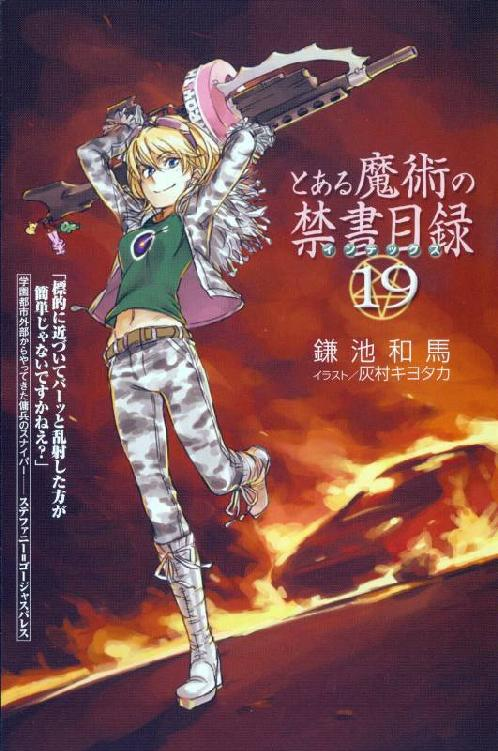
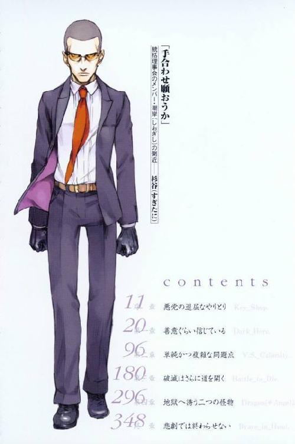
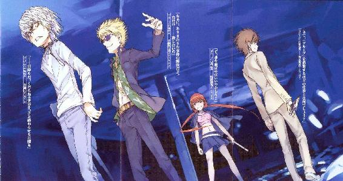
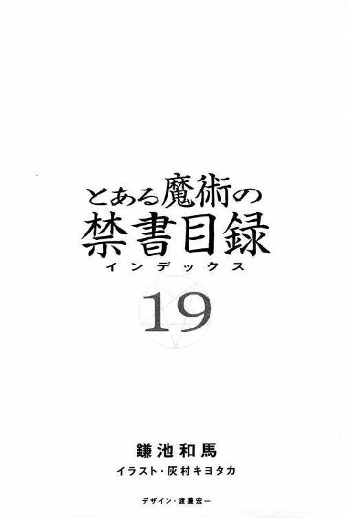

| [鎌池和馬] とある魔術の禁書目録19 | |
| 鎌池和馬 | |
| (2015) | |
|
とある魔術の禁書目録19
鎌池和馬
|
底本データ
一頁17行 一行42文字 段組１段
とある魔術の禁書目録⑲
学園都市の暗部で起きる事件を処理する『グループ』。最強の超能力者・一方通行、魔術師でもあり能力者でもある土御門元春らで構成されたそのチームは、謎のキーワード『ドラゴン』について探っていた。それが、いまの〝クソったれ〟な現状を打破する唯一の手がかりであると信じて。
一方、上層部に無断で行っていたその活動を煩わしく思う者がいた。その人物は、学園都市で最高の権力を持つ統括理事会メンバーの一人。彼の強大な勢力が、『グループ』に牙をむく。
同じ時。元『アイテム』構成員の浜面と絹旗は、滝壺の見舞いにやってきていた。そこで突然巻き起こる、浜面の「バニーガール超好き疑惑」。どん引きする絹旗と滝壺を他所に、浜面は決死の釈明をするが......!?⑮巻、ＳＳシリーズに続き描かれる、『学園都市の暗部』編登場！
今回は明るくて熱い話、暗くて冷たい話、という枠を試しに取っ払ってみました。ダークなのにやたらと熱い本筋や、悪党達しかいないのにコメディが巻き起こる状況などなど、一見相反する属性がきちんと混ざっているかどうかご確認くださいませ。
【電撃文庫作品】
とある魔術の禁書目録①～⑲
とある魔術の禁書目録ＳＳ①②
ヘヴィーオブジェクト
イラスト：灰村キヨタカ
ちょうどアニメ版『超電磁砲』が放送中の模様ですが、本編はこんな状況に...。機会が有ればあちらのキャラもこっちでイラスト化してみたいですね。


ｃ ｏ ｎ ｔ ｅ ｎ ｔ ｓ
011 序 章 悪党の退屈なやりとりKey_Shop.
020 第一章 善意ぐらい信じているDark_Hero.
096 第二章 単純かつ複雑な問題点V.S._Calamity.
180 第三章 破滅はさらに道を開くBattle_to_Die.
296 第四章 地獄へ誘う二つの怪物Dragon(≠Angel).
348 終 章 悲劇では終わらせないBrave_in_Hand.


とある魔術の
禁書目録
19
鎌池和馬
イラスト・灰村キヨタカ
デザイン・渡邊宏一
※本書⑲巻は、⑮巻の続編に位置する物語です。原作小説の⑬巻．⑮巻、ＳＳ①巻、ＳＳ②巻を傍らに置いた状態で読み始めてくださいますと、より一層本書をお楽しみいただけます。
序 章 悪党の退屈なやりとり Key_Shop.
学園都市の第一五学区は最大級の繁華街であり、流行の発信基地として機能していた。テレビ局やマスコミ関係の施設も多く立ち並ぶこの学区は、街の中で最も土地の値段が高い場所でもある。
そんな中に、マンションと企業オフィスを組み合わせたような、巨大な総合ビルがある。こんな所を借りて住むぐらいなら、いっそ一戸建てでも一括購入してしまった方が負担は少ないんじゃないかというほど豪華な建物だ。
学園都市第一位の超能力者である一方通行は、その最上階にいた。
そこは『雑貨稼業』と呼ばれる男の住居であり、仕事場でもある。一面のウィンドウから広がる夕暮れの街並みは、ここをレストランにすれば味の善し悪しなど関係なく、風景だけで一定の客が見込めそうなほどだった。
「そう妬むなよ。別に居心地の良い場所って訳じゃない。あくまで『隠れ家』の一つだからな。ガサ入れがあればすぐに捨てなきゃいけない物件なんて、くつろげるものじゃないぞ」
部屋の主である大学生ぐらいの男は、椅子に座ったまま肩をすくめてそんな事を言った。
一方通行に対する警戒感はない。
赤い瞳に白い髪。片手で杖をついていても全く弱さを感じさせない、少し癇に障っただけで肉体を潰されかねない雰囲気を全身から放っている超能力者を見ても、だ。
おそらくは、慣れているのだろう。
そもそも、取り扱っている商品を考えれば、『雑貨稼業』と商売を行おうとする手合いに、まともな人間がいるはずもないのだから。
「まあ、何があったかは聞かねえよ。アンタは可愛いウェイトレスに注文を頼むような気軽さで、必要な物を言ってくれれば良い」
いつまで経っても無言な一方通行にも、特に苛立った様子も見せずに『雑貨稼業』は言う。
「お望みの品は何かな。逃走用の車？ 隠れ家の鍵？それとも『両替』かな。強盗した現金のロンダリングなら、今日のレートは〇・八倍だ。つい最近まで〇・七五だったから、今が替え得なんじゃないか？アンタは目立つ風貌だし、何なら変装とか整形とかも紹介するよ」
お勧めの料理を説明するような調子で羅列されているのは、主に逃走や潜伏に必要な品々だった。学園都市は高い外壁に囲まれた街であるため、『遠くへ逃げる』方法で捜査の目を潜り抜けるのは難しい。よって、安全な隠れ家を用意したり、素性を隠したまま貨物列車に忍び込んで学園都市の外に出る方法を模索したり（もちろん、そういった細工を施しても成功率は決して高くないが）......というのが重要になる。
一方通行は、それを聞いてもしばし無言だった。
やがて、彼はゆっくりと大きな部屋を見渡す。
「隠れ家、か。ここも隠れ家の一つっつーのは、モデルルームでも兼ねてンのか？」
「まあ、何と言っても主力商品だからな。俺は隠れ家から始めて、ビジネスの幅を広げてきたんだ。だから取り扱っている商品には自信があるし、それなりのこだわりもある。一等地の高級マンションから第二一学区の山間部に停めてるキャンピングカーまで、色んな『カギ』を取り揃えてるぜ。アルバム見るかい？」
しかし一方通行は食いついてこない。
彼は横合いに目をやったまま、視線を固定させている。部屋の隅、街の景色を大きく見せるウィンドウから家具に隠れ死角になる位置に、何かがサンドバッグのように吊るしてある。
「『アレ』も取り扱ってる商品の一つなのか？」
「ん－？ そっちに興味があるのかな。ただ、悪いんだがあれはオプションじゃない。俺の趣味みたいなもんだよ」
『雑貨稼業』もそちらに目をやり、鎖で吊り下げられた物を見て、わずかに苦い顔になる。
意外な趣味を友人に知られてしまった時のような表情だった。
それは、一五歳程度の少女だった。
白い肌に下着だけの人間が、両手を枷で戒められたまま、吊り下げられている。
動きはなかった。
所々に青黒い痣を残す少女は、羞恥に身をよじる事もなく、全身の力を抜いたまま小さく揺れていた。呼吸音はするのでまだ生きているのだろうが、瞳に光はない。
一方通行は少女を見たまま言った。
「悪趣味だな。高かったンじゃねェのか？」
「そこそこね。あ、おい。ホントに壊すなよ。使い捨ての隠れ家とはいえ、死体の処分は面倒なんだ。そもそも処分は別にしても、マジで高かったんだって。殺しちまったら、最低でも七〇〇万は払ってもらうぞ」
「その割にゃボロボロだな。売春させてる様子もなさそォだが」
「だから趣味だって言ってんだろ。そいつは殴る用なの。普通に抱くにしちゃ、その女は落第点だよ。それともアンタ、こういう貧乳が好みな訳？信じらんないな」
すると、一方通行は杖をついているのとは逆の手で掴んでいたカバンから封筒を取り出し、『雑貨稼業』のデスクへと軽く放った。封筒の開いた口から、一〇〇万円の束が一〇個ほど飛び出す。
それを見た『雑貨稼業』は、唇を歪めて苦笑した。
「おいおい」
「前払いだ。こっちもつまンねェ仕事を回されてイライラしてンだよ。うっかり殺しちまわねェって保証が全くできねェ」
「チッ。言っておくけど、殺すだけで七〇〇万だからな。死体の処分については別料金だぞ」
わずかに残念そうな口調で言う『雑貨稼業』。趣味の一品のようだが、簡単に諦められる程度の執着しかないようだった。おそらく『新品』を買い直せば良いと考えているのだろう。
「ところで、そんなガキのどこに興味が湧いた訳？もしかして、他の男の手でボロボロにされた女じゃないと燃えないタイプなのか」
「そっかそっか、なンか勘違いさせちまったみてェだな」
『雑貨稼業』の質問に対し、一方通行は軽い調子で否定した。
「俺が買ったのは、そっちでぶら下がってる女じゃねェよ」
「？」
「オマエの方だ」
一方通行が言ったその意味を、『雑貨稼業』はとっさに理解できなかった。
ぐちゃり、と。
自分自身の鼻が砕ける湿っぽい音が聞こえた、その瞬間まで。
「ごっ、がっ、ァァああああああああああああああああああああああああああああッ!?」
激痛に叫び、椅子から転げ落ちる『雑貨稼業』。彼の近くには、小さなカバンが落ちていた。それを一方通行が自分の顔に投げつけてきた物だとは気づいたが、どうもおかしい。とても杖をついた人間が片手で投げた威力とは思えない。まるでピッチングマシーンの硬球を顔面で受けたような激痛だった。
『雑貨稼業』は潰れて赤黒い血を噴き出す鼻を片手で押さえ、何とか床から起き上がる。
「てっ、テメ......ふぐっ......なに、な、何しやがる!?」
高価なデスクの引き出しを開け、そこから拳銃を取り出す『雑貨稼業』。しかし銃口を突きつけられても、一方通行は全く動じていない。カバンを放した手を首元のチョーカーに押し当てたまま、ニヤニヤとした笑みを浮かべている。
そして、笑いながら彼はこう言った。
「オマエの基準じゃ......確か、人間一人の価値は七〇〇万程度だったンだよな？」
「......ッ!!」
まさか、と『雑貨稼業』の唇が動いた。
その最悪の予想を肯定するように、一方通行は続けて言う。
「ったく、あの電話の野郎。ホントにくだらねェ仕事を回しやがって。一応金も払った事だし、今ちょっとイライラしてっからよォ───殺しちまって構わねェな？」
表面に見える以上の圧倒的な恐怖に襲われた『雑貨稼業』は、震える手で引き金を引いた。しかし一方通行は構わず、舌舐めずりをしたまま『雑貨稼業』へと突撃していく。
肉が裂けて骨が砕ける音と、単なる絶叫以上の雄叫びのようなものが炸裂した。
五分後。
血だるまになった肉を靴の爪先でつつく一方通行は、くだらなさそうにチョーカーについたスイッチを切った。その身に傷は一つもない。彼はその能力を解放した時に限り、あらゆる攻撃を反射させる事ができるからだ。
一方通行は杖をついたまま、もう片方の手で携帯電話を取り出した。どこかに掛けると、電話を耳に当てる。
「一応終わらせた。クソみてェな仕事で退屈過ぎたがよ。あ？必要な物？そォだな、息を吸って吐くだけの肉塊の回収班と」
そこまで言って、一方通行は少しだけ言葉を切った。
吊り下げられたままの少女の方を見ると、彼はチョーカーのスイッチを再び入れる。
指を軽く動かしただけで、何故か遠くにいる少女を吊り下げていた鎖が切断された。
「......後は、女物の着替えを一式ってトコか。サイズ？知らねェよ。フリーサイズのを適当に持ってくりゃ良いだろ。オマエらセンスねェから、どォせ細かく注文しても無駄だろォしよ。回収班も女の人員を回して来い。男が一人でも混じっていたらそいつの金玉を蹴り潰す」
言うだけ言うと、一方通行は携帯電話の通話を切った。デスクの上の札束を適当に掴むと、鎖が切れて床に崩れ落ちた少女の方へとぞんざいに放り投げる。
一方通行は少女の方を見ずにチョーカーのスイッチを切ると、杖をついて出口へ向かいながら素気ない調子で言った。
「後は勝手に生きろ。残りの人生、成功するも失敗するもォマエ次第だ」
「......、」
今までろくに反応も示さなかった下着の少女は、ようやくのろのろと首を動かして一方通行の背中を見た。彼女は赤く切れた唇を動かし、ポツリと呟くようにこう尋ねた。
「あなたは......？」
「悪党だ」
一方通行は玄関のドアをくぐりながら、歌うように答える。
「クソッたれの悪党だよ」
それが彼の、あるいは彼らの日々だった。
一方通行、土御門元春、海原光貴、結標淡希。
彼ら四人を『グループ』と呼び、『グループ』は今日もこの街の闇を駆逐する。
第一章 善意ぐらい信じている Dark_Hero.
１
一〇月一七日、午後六時。
一方通行隠れ家として使っているホテルの一室で、窓際の床に直接座り込んでいた。壁に背を預けるようにしている理由は単純で、広げた新聞の上に自作の機材を並べているからだ。こういう作業はベッドの上ではできない。
作業を行いながら、一方通行は首と肩で携帯電話を挟んでいた。
そちらからは、小さな女の子の声が届いてくる。
『それでねー、今日の晩ご飯は煮込みハンバーグらしいの、ってミサカはミサカは偵察結果を報告してみたり』
「そォかよ。黄泉川の野郎、とォとォ炊飯器でそンな大技まで繰り出すよォになったのか」
新聞紙の上の機材とは、杖だった。
右腕の下腕と半ば組み合わさるように装着する、現代的なデザインのトンファーのような杖だ。それが『機材』と呼ばれるのは、新たにいくつかの改造を施し、いくつか小型のモーターや重量感知センサーなどを組み込んでいるからである。
一方通行は、まるでマイクスタンドのように下端に四本の脚のついた杖に軽く触れる。
（......一応組み立ててみたが、重量感知センサーだけで重心を捉えられるモンかね。角度調整用にジャイロでも突っ込ンでみるべきだったか？）
頭の中で的確に分析を行いながら、同時に携帯電話で話をする一方通行、通話相手の名前は打ち止めと呼ばれる、見た目は一〇歳程度の少女である。
『必要ならあなたの分も作ってもらえるようにミサカはネゴシエーションしてみる、ってミサカはミサカは台所の方をチラ見してみたり』
「そりゃイイな。冷凍して箱詰めして郵便で送りつけても味が落ちねェならだが」
右腕を杖に通してグリップを握ると、四本の脚が昆虫のように動いた。座ったまま適当に杖で床を叩くと、床に対してほぼ水平な状態にも拘らず、機械の脚が的確に床を掴み支え始める。
（最低限の点数は採ったってトコだな）
『週末になったら会えるって言ってたよね、ってミサカはミサカは確認を取ってみる』
「......予定が変わらなかったらな」
さらにグリップを操作すると、ガシャッ!!という音と共に、杖がいきなり縮んだ。伸縮式の特殊警棒のようになっているのだ。肘から下を覆う巨大な腕輪のようになったパーツをくっつけたまま、一方通行は右手の手首を動かして調子を確かめる。
（ま、こっちも合格か。杖がねェと歩けねェが、能力使う時は邪魔だからなァ）
一方通行は適当な感想を漏らしながら、もう一度グリップを動かして杖を伸ばす。ジャコン!!という音と共に勢い良く四本の脚のついた棒が伸び、新聞紙の上に置いていたいくつかの工具を飛ばしてしまう。
（......もうちっと威力が増せば武器になるかもしンねェが......意味がねェな。能力使用時には他の武器なンざ必要ねェし、非使用時は杖を持ち上げるとコケちまう）
『ミサカは今から次の土日が楽しみで仕方がなかっ───おおっ!!ヨミカワが煮込みハンバーグを持って来た!!ってミサカはミサカは最優先事項を報告してみたり!!』
「そォかよ。オマエって寄り道ばっかの人生だよな」
その時だった。
携帯電話とは別に、ホテルのベッドサイドに備え付けられている電話のベルが鳴った。一方通行はそちらを見る。受話器を取る前にベルは止んだ。きっかり三回、計ったようにベルの音を響かせて、だ。
それは合図だった。
おそらくホテルの近くの車道脇に、キャンピングカーでもやってきたのだろう。
『どうしたの!? ってミサカはミサカは電話の音に首を傾げてみたり』
「......何でもねェよ。ルームサービスの確認だ」
一方通行は適当に答えると、自作の杖に体重を預け、ゆっくりと立ち上がる。腰の後ろ、ズボンのベルトに挟んだ小型の拳銃の感触を改めて思い出す。
そこで、電話の向こうの打ち止めがふとこんな事を言った。
『大丈夫？』
彼女は一方通行の仕事を知らない。そして、具体的に知らなくても心配はできる。
『危ない事しちゃやだよ、ってミサカはミサカはお願いしてみたり』
「誰に向かって囁きかけてンだ」
携帯電話からの声に、一方通行は突き放すように言った。
「核を撃っても死なねェ野郎に、そォいう気遣いは必要ねェだろ」
通話を切ると、一方通行は携帯電話をズボンのポケットにしまった。
後ろを振り返らず、彼は客室の出口へと向かう。
部屋には新聞紙や工具などが散らばっていたが、どうせどこかの組織の下っ端が綺麗に掃除していく事だろう。
土御門元春は第七学区の繁華街を歩いていた。学校から学生寮に帰る途中にある大きな通りだ。金髪にサングラス、アロハシャツの上から学生服を羽織るなど、それなりに目立つ格好をしている土御門だが、現在はそれよりもインパクトのある人物がチラホラと見える。
何らかのお店のチラシを配っているアルバイトのメイドさんだ。
土御門は繁華街を歩きながらそうしたバイト少女達を見て、わずかにサングラス越しの瞳を細くすると、
「......本当に、時代は良い方に傾いたんだにゃー......」
などと呟いた直後、長身の土御門の背中の真ん中に勢い良く正拳突きがめり込んだ。彼の妹、土御門舞夏の仕業である。華奢なグーから発せられるとは思えないドグッシャア!!という暴力的な音を鳴らした少女は、何故かドラム缶型の清掃ロボットの上に正座している。
義理の兄を物理的に弓なりにした少女は、別に嫉妬しているとかそんなものではなく、
「......あんなモンはプロのメイドとは呼べないんだぞー。メイドとウェイトレスとコンパニオンをごちゃ混ぜにしやがってー。どの辺が良い方に傾いてんだー？あ？適当にゴスまで突っ込んでんじゃないかー。ニーソックスなら何でも許されるとでも思ってんのかー」
ショートカットの前髪を上に上げて大きく露出するおでこに、青筋をビキビキ浮かべながら低い声で質問する舞夏。見れば、彼女の服装は紺色をベースにした、ロングスカートのメイド服。それもチラシ配りと違って地味だが実用性の高いデザインのものだった。
「ま、舞夏さん？ ギスギスした真っ黒なオーラのせいで、オレの胃袋にものすごい重圧がのしかかっていますよ？」
「つまりだなー。メイドという言葉が世の中に広く浸透するのは大変よい事だけどー、それが誤った形で伝播されても困ってしまうという事なのだぞー。この服を着ているだけでいかがわしい目を向けられてもだなー」
「いっ、いかがわしい目だとう!?」
義理の妹からの指摘に土御門は巨大なリアクションを決行。
とはいえ、別に我が妹に不将な視線を向ける不特定多数の野郎ども許すまじ、などと思っているのではなく、
「そっ、それはいけない事だったのか......？ そもそもメイドさんが健全なものだと？エロくないメイドさんなんて、一体どこに存在意義があると言うんだにゃーっ!!」
「......このクソ兄貴は本当にいっぺんプロのメイドというものを教えてやらねばならんようだなー」
やめてやめてっ、ぐおおっ、義理の妹からプロのメイドさんのテクニックを体でアピールされる!?といかがわしい言葉の連呼と共に小さなグーでボコボコにされる土御門。
そこで、彼のすぐ横を通り過ぎたキャンピングカーが短くクラクションを鳴らした。低速のろのろ運転の乗用車をせかしたようにしか見えないが、そうではない。
それは合図だった。
おそらく、ウィンカーを出して横道に入ったキャンピングカーは、そこで土御門を待つために一時停車している事だろう。
土御門はキャンピングカーが消えた方には振り返らず、すぐ近くにあったコンビニの方へ足を向けて、
「にゃー。ちょっとシャーペンの芯を補充してくるぜい」
「んー？ なら私も」
「お汚う手伝ってくれるか!! 実は今日は宿題がてんこ盛りでにゃー。正直二人でやっても終わるか終わらないか怪しいトコだけど、舞夏は優秀だから一・五人分ぐらいの働きは見せてくれるだろ。それなら兄妹の共同作戦で何とか朝までには終わりそうだぜい」
「......今夜は兄貴の部屋に行くのはやめておこうー......。中学生の妹に高校の宿題をヘルプさせようとしている所がすでに切羽詰まりすぎてるしなー。なあに、作り置きのご飯はまだ残っているはずだから飢え死にする事はないはずー。そんな訳であでゅー」
清掃ロボットの上に正座したまま、その側面を小さな掌でバシバシと叩く舞夏。どういう風にセンサーに感知させているのか、清掃ロボットはまるでハンドルで操作されているように方向転換していく。
はくじょうものーっ!! とコンビニ前で打ちひしがれた土御門は、しばしうなだれ、それからコンビニに入り、シャーペンの芯をきっちり買って、繁華街の横道に入った。
そこに停まっていたキャンピングカーのドアを開けると、中には先客なのか、白い髪の超能力者が簡易ベッドでふてくされたように寝転がっていた。
そんな超能力者を見ながら、土御門は言う。
「......で、今日の宿題は？」
結標淡希は第一〇学区にいた。原子力や細菌関連の研究施設、実験動物の焼却廃棄処分場などが並ぶこの学区には、もう一つ有名な施設がある。
少年院だ。
本来なら能力開発の名門校、霧ヶ丘女学院の制服を着た少女がやってくるような場所ではないが、彼女の『仲間』達が収容されているのだから仕方がない。
『仲間』とは、共に大きな計画を成し遂げようとした者、という意味でのものだ。
それは犯罪行為とも表現できる。
霧ヶ丘と同じく、いや、あるいはそれ以上に有力なお嬢様学校の大能力者と超能力者のコンビによって、その計画そのものはすでに頓挫している。多くの『仲間』達は圧倒的な力によって撃破され、あの少年院に収容されていた。そして結標だけが助かった、計画の首謀者であるはずの、最も優先して収容されるべき、彼女だけが。
暗黙のルールが設定されたのだ。
結標淡希の持つ強大な能力『座標移動』を、学園都市のより深い闇と戦うために使用する。それに承諾すれば『仲間』達を肉体・社会的に保護するが、承諾しない場合はその保証はなくなる......と。
いつかこの街を出し抜く。
絶対に勝てないはずのゲームに勝利する。
そして、『仲間』達に再び自由を与えなければならない。
それだけが結標淡希の目的であり、それ以外は何もなかった。いや、残らなかった。法を無視してまで成し遂げたかった『大きな計画』についての執着心すらも、すでに消滅していた。アクティブな理由によって、自ら足を動かす事はもうない。今の結標はどこまでもネガティブに、周囲の状況に押されて体を前に進ませている。
構わない、と彼女は思う。
ある程度までは、この街の思惑に乗って動いてやる。
ただし、その結果に待つものが、学園都市上層部の大崩壊であったとしても、もう止まってやらない。もしそうなったら、自分の背中をそこまで押した貴様自身を恨むが良い、と。
日没寸前の薄暗い街を歩きながら、そんな事を考える結標。
その時だった。
彼女のスカートのポケットから、携帯電話の着信メロディが鳴った。この類に興味がなかったのでデフォルトの着信音のままだった、数日前までのそれとは違う。同居人のオススメとかいうものを勝手に設定されたので、そのまま放ったらかしにしておいた着信メロディだった。
結標は小さく息を吐くと、ポケットから携帯電話を取り出した。
通話ボタンを押して耳に当てると、聞き慣れた同居人の言葉が飛んでくる。
『結標ちゃーん!! どこほっつき歩いているんですかーっ!?』
甘ったるい、第二次性徴期に入る前の女の子のような声だった。
同居人の名前は月詠小萌。
これで高校の教師らしいから驚きである。
『今日という今日は野菜妙めが作れるようになるまで頑張るっていう事で、先生はお腹を空かして待っているのですー。さっさと帰ってきて挑戦してくださいー。結標ちゃんもいい加減に得意メニューの一つぐらいは習得しないとまずいのですー』
一見すると同居人が家事の面で楽をしようとしているだけのように聞こえなくもないが、この甘ったるい声の教師にそういう思惑がない事を、結標は短い期間の内に思い知らされている。
その証拠に今も、
『別に女の子が家事をしなければならないなんて事ではないですけど、長い人生ですからいろんなスキルを覚えておいた方が、進む道の幅も広がるってものなのですよー。料理だけじゃありません。先生、結標ちゃんの進路希望を聞いた事はないですけど、いざ進みたい道が決まった時に困らないように、いろんな事を見聞きした方が良いと思うのです。とはいえ、それは個人の時間を潰さない範囲で、本当に進みたい道を阻害しないレベルで、という絶対的な条件がありますけどねー』
そんな言葉を聞きながら、結標はふと足を止めていた。薄暗い第一〇学区の中で、腹の奥へ緩やかにのしかかっていたどす黒い重圧が、いつの間にか消えている事に気づく。
おそらく、上っ面の表層ではない、もっと心の奥にある所が驚いているのだろう。
こんな自分に、まだこういう言葉を掛けてくれる人が残っているのかと。
「......、」
野菜妙め野菜妙めー、という教師の言葉にどう返答しようか、と考えていた結標だが、その時、一台のキャンピングカーが彼女のすぐ近くを追い越した。その車はジュースの自動販売機の近くで停車し、運転席から男が自販機に向かった。
二人は一度も目を合わせなかったが、それで意図は伝わった。
仕事の合図だ。
怒るだろうな、いや、怒ってくれるだろうな、と思いながら、結標は携帯電話に話しかける。
「......直球で言うけど急用できたから野菜妙めは無理みたいね」
『ええっ!? 今日もなのですか！ じゃあ野菜妙めを待つ先生はこれからどうしたらっ!?実を言うとムチャクチャ失敗するんじゃないかと思って大量の野菜を買い込み冷蔵庫はパンパンなのですよーっ!?』
「それは良かったわね。ベジタリアンは長生きするわよ？」
適当に言って、結標は通話を切る。
しばし携帯電話を見て、それをスカートのポケットにしまうと、キャンピングカーへと向かっていく。車のドアを開けると、簡易ベッドには白い髪の超能力者が寝転がり、テーブルの前では金髪にサングラスの男が、デカいレーザー砲を装備したミニスカートのメイドが大暴れする携帯ゲームで遊んでいた。
そんな同乗者達の顔を嫌そうに見ながら、結標は言う。
「......確か、キャンピングカーなんだからキッチンあったわよね？」
第七学区の病院に、海原光貴はいた。午後六時を過ぎているが、ここの病院の方針なのか、面会時間は割と遅くまで設定されているらしい。今はそのギリギリ、といった所だ。
海原がいるのは個室の病室だった。
とはいえ、別に彼が入院している訳ではない。
海原光貴はここに入院している少女の見舞いにやってきたのだ。
「......相変わらず、その『顔』がお気に入りのようだな、エツァリ」
ベッドの上で上半身だけ起こしている褐色の少女は、わざと低くしたような声でそんな事を言ってきた。肩までかかるウェーブの髪は黒い色をしているが、日本人のものとはまた違った印象がある。彼女......ショチトルは、中米出身なのだ。
「そちらは相変わらず不機嫌そうですね。化学繊維の寝間着は肌に合いませんか？」
言いながら、海原は持って来た大きな包みをサイドテーブルに置いた。
「アステカ系の民族衣装です。調達するのに苦労しましたが......まあ、この格好で病院内をウロウロしていたら目立つでしょうね。消灯時間後にこっそり着替えて眠るためにでも使ってください」
「だから感謝しろと？」
「先ほどから、一体何が気に入らないんですか」
「口で言わなきゃ分からないようだから、真正面から言ってやる」
ショチトルは首だけを動かし、改めて海原の目を睨みつけた。
「私が一番気に入らないのはな、貴様が何事もなかったような顔で笑いかけてくる事だ」
「？」
「魔道書の『原典』......貴様が拾ったんだろう」
ショチトルは、自分の手に目を落とした。
五本の指をゆっくりと開いたり閉じたりしながら、
「本来ならば、今の私の体は三分の一を除けば全てダミーのはずだった。......それがどうだ。知らない間に丁寧に引き剥がしやがって。改めて、魔術師としての技術と度量の違いを思い知らされた所だよ」
かつて、ショチトルは強大な魔道書の『原典』を兵器化して扱うために、とある魔術結社の手で肉体の三分の二をすり潰して『素材』にされた経緯を持つ。そして、それを人知れず救ったのが海原という訳だ。
ショチトルは自分の掌から海原へと視線を向けて、
「......『原典』は、貴様が確保しているんだろう？」
「こちらに」
海原は、着ているスーツの襟を片手で開いた。
そこには刑事ドラマの拳銃を収めるホルスターのような物があり、丸めた皮の書物が突っ込んであった。ショチトルが書物に注目する前に、海原はスーツを元に戻す。
「私が人肉を粉末にしてでも扱いされなかったものを、貴様は素のままで掌握するか」
「いやまぁ......押さえておくのが精一杯というのが正直な感想ですよ」
のんびりとした口調だったが、海原はこの『原典』がどれだけ恐ろしいものか、その片鱗ぐらいは理解できている。
そして、こんなものを手駒として利用するための材料にされたショチトルが、どれほどイレギュラーな環境に身を置いていたか。
「何があったんですか」
海原は、そう尋ねた。
再会した時からずっと抱いていた疑問。それをここで口にしたのは、ようやくショチトルが心身ともに安定してきたと判断したからだった。
ショチトルはわずかに黙り、海原から顔を背けた。褐色の頬をこちらに見せたまま、彼女はポツリと呟く。
「『学芸都市』との戦いは知っているな。アメリカの研究機関だ」
「一応、顛末も。公式発表では、安価な旧式戦闘機を買い付けたテロリスト達によって破壊されたと聞きましたが」
「もちろん真実は私達による魔術攻撃だ」
ショチトルはそこまで言って、また少しだけ黙った。
中米最大の魔術結社と、表向きの『世界の警察』の、正面切っての戦い。彼女は、その戦いを後方から協力していたはずだった。
「ヘマをしたのさ」
つまらない報告をするような調子で、ショチトルは言った。
「終結間際の最後の最後で、ちょっとした命令違反を起こしてな。その償いとして、多少体をいじり回された。結社の規約としても間違った事じゃない」
そんな訳がなかった。海原も長い事その結社に身を置いているが、どれだけの重罪を犯した者であっても、体をすり潰して『原典』と融合させるなんて事例は聞いた事がない。
「止める者はいなかったんですか？ トチトリは？あなたの戦友だったでしょう」
終わった事と知りながらも、思わず海原はショチトルの同僚の、別の少女の名を口に出す。
しかしショチトルは首を横に振った。
「『原典』の執行以来、トチトリとは会っていない。私はそいつを抜き取られるまでは兵器だったからな。作戦指揮をしているテクパトル辺りなら分かるかもしれないが、あのいけすかない男ともあれっきり顔を合わせてはいない」
言って、ショチトルは海原のスーツの胸の辺り......『原典』が収められているであろう所へと、改めて視線を投げた。
「とはいえ、魔術師の資質以前の問題として、『原典』を都合良く扱おうなどという考えは、人体の構造上難しかったようだな。あれだけやっても、私は『原典』に振り回されていた」
「......それについては同感ですかね。『原典』なんてものは切り札として行使できるようなものじゃありません。威力の分からない物をチームプレイで持ち出しても破滅を招くだけです。......いや私の『グループ』の場合。冗談抜きで迷惑かけたら袋叩きにされそうですしね」
すると、ショチトルは何故か少しだけ黙った。
「......チームプレイ、か」
「？」
「何でもない。今の貴様は『仲聞』と言うと、私の知らない顔を真っ先に思い浮かべるのだろうな」
「ショチトル......」
「違う、とは言うなよ」
褐色の少女は分厚い壁を作るような調子で海原の言葉を封じた。
「理由はどうあれ、貴様が学園都市に寝返り、その手駒として秘密裏に活動している事は事実なんだ。それは、貴様がかつて『仲間』と呼んでいた者達への裏切りである事を分かった上で。現に貴様はこうして私を撃破したんだ。見事なチームプレイだったじゃないか」
敗北した事は認めた上で、なお傷口に塩を塗るように呟くショチトル。海原の表情がわずかに固まるのを見ると、彼女はようやく満足げな、しかしそれでいて薄暗い表情を浮かべた。
「そうだろう？」
そこまで言うと、ショチトルは海原からわずかに顔を逸らした。
小さな唇を尖らせ、彼女は聞こえるか聞こえないか分からない声でこんな事を言う。
「......エツァリお兄ちゃん」
わずかに時が止まった。
そして海原光貴が何らかのリアクションを返す前に、病室のドアがズバーン!!と勢い良く開かれた。
中に飛び込んできたのは、金髪にサングラスの少年、土御門元春だ。
「テメェ海原っ!! さっきの一言はどういう事なんだにゃーっ!!」
「エツァリ下がれ!! おそらく『組織』からの新たな追っ手だ!!くそっ、私ごと消す方針に変更したか!!」
いやそれは変態ですが自分の味方です、と海原が忠告する前に、土御門はこめかみに青筋を立てながらズンズンと海原の方へ近づいてくる。
「海原ぁ......ッ!! お前は故郷に妹というものを残しておきながら、学園都市で常盤台中学の女子中学生相手にうつつを抜かしていたとでも言うのかにゃーっ!!」
「いやっ、ちょ、何言っているんですー!?」
ビクゥッ!! と海原の肩が大きく震えた。
今まで土御門を警戒していたショチトルは、その一言にピタリと動きを止めると、改めて海原光貴の顔を見た。
「......女子中学生だと。貴様、まさかそんな理由で『組織』を裏切っていたとでも言うのか？」
否定はできない海原はダラダラと汗を流して目を逸らすが、別に相手が中学生だったからのめり込んだ訳ではない。高校生だろうが大学生だろうが関係ないのであって、命を賭けた大いなるロリコンではないのだ。
「いやそもそも兄妹って言っても結社内の師弟関係みたいなものでしかない訳でしてね!!」
「つまり義理っ!! むしろそっちの方が最高じゃないかにゃーっ!!」
などと喚き散らしている海原と土御門を、病室の外から覗き込んでいるのは結標淡希。
仕事があるので人員の招集にやってきた訳だが、これならワンマンで事件解決に当たった方がマシなんじゃないか!?と彼女は少々真剣に検討してしまう。
結標はすぐ近くの壁に背中を預けている一方通行の方を見ないまま話しかける。
「兄だの妹だの訳の分からない事をグチャグチャと。まったく、これから銃弾飛び交う戦場に向かうっていうんだから、もう少しまともな気構えをしてほしいものね」
しかし一方通行からの反応がない。
怪訝な目で改めてそちらを見る結標は、一方通行の口が小さく動いている事に気づいた。
ちょっと注意して聞いてみると、
「（......年下のガキに色々振り回されンのは、人間なら誰でも通る道だ。何やら馬鹿馬鹿しい事になってやがるが、これについては下手に邪魔する資格は俺にはねェな）」
「あらいやだ。この『グループ』ときたら、私以外は変態しかいないのかしら」
すると、一方通行、土御門元春、海原光貴の三人は同時に発言者・結標淡希の方へと視線を集中させた。
彼らは特に事前に打ち合わせる事なく、自然な調子でこう言った。
「あからさまなショタコン女に変態扱いされてもなァ」「だにゃー」「ですね」
「ぶふっ!? ゲフゴホ!! なっ、なんななななななななん何をコンッ根拠にショタむぐショタコンって......ッ!!」
慌てふためく先輩系巨乳女子高生の結標淡希だったが、残る三人はいちいち説明するのが億劫なのか、適当に首を横に振った。ジェスチャーはこう告げる。今まで隠していたつもりだったのか？と。
......そんな一致団結の反応が気に喰わないショチトルな訳だが、海原の方はそういう機微に気づいていない。ムクれる褐色の少女に挨拶をすると、海原は病室を出た。
廊下を歩きながら、海原は質問する。
「さて、『グループ』を招集するほどの仕事とは何でしょう？」
「なぁに。ありきたりな事件の解決だよ」
土御門が口笛でも吹くような気軽さでこう答えた。
「人質取って立てこもってるテロリストを皆殺しにしろってさ」
２
一方、同じ病院の売店に二人組の少年と少女がやって来ていた。基本的にはお菓子やジュースなどの軽食メインの店だが、退屈しのぎのための小説やら、病院のどこで使うのか分からない水鉄砲やらもラインナップにあった。
少女は首を素早く動かしてあちこちの商品をチェックしていて、少年はその様子を後ろから適当に眺めている。
少年の名前は浜面仕上。
茶色い髪の少年で、上は野暮ったいジャージ、下はジーンズという格好だ。アホなチンピラみたいな顔つきだが、実際にアホなチンピラなのだから仕方がない。学園都市第四位の超能力者、麦野沈利を撃破したチンピラなのだから。
少女の名前は絹旗最愛。
一二歳ぐらいの少女で、こちらも茶色い髪だがサラサラ具合が全く違う。髪型は肩までかかるかかからないかぐらいのボブだった。格好はセーターのようなウール地の丈の短いワンピースで、見ていて危ういほど白い太股が露出している。電車の向かいの座席に座られたらずっと気まずくなりそうな少女だった。
絹旗は売店の床に直接置いてある、いくつかの種類の花を眺めながら、
「せっかく見舞いに来たのに、お花を超忘れるとはどういう事ですか浜面。やっぱり浜面は超浜面という評価で超オーケーですか？」
「おい腰を曲げて覗き込むなよ。後ろから見ると尻がすごい事になってるぞお前」
「このポーズなのに確実に見えないのが超すごいでしょう。そこらのビッチとは角度が超違うんです」
くそっ計算されてやがる!! と浜面は心の中で舌打ちする。
しばし熟考していた絹旗は、浜面には名前も分からない花を選んで店員を呼んでいた。花束としてまとめてもらったそれを運ぶのは、当然のように浜面の仕事だった。
一般病棟に向かうエレベーターへ歩きながら、絹旗は言う。
「花束はこれで超よしとして、他に見舞いの品は超用意してきました？」
「一応な。っつっても、滝壼もそろそろ退院するだろうから、あんまり気合いの入った暇潰しのオモチャじゃねえけど」
「バニースーツとか超やめてくださいね」
「お前は俺を何だと思っているんだ」
「超バニーガール好きの超変態ですかね」
そんな事を言い合いながら、浜面と絹旗の二人はエレベーターに乗って目的の階へ。廊下を歩いて目的の病室のドアをノックすると、聞き慣れた声が返ってきた。
ドアを開けると、そこには、かつての『激戦』から生き残った浜面達の戦友がいる。
滝壺理后。
いつも眠たそうにしている少女だった、と浜面は記憶している。黒い髪は肩の辺りで切り揃えられている。普段はピンク色のジャージを着ていたが、あれは部屋着にも寝間着もなるらしい。ベッドから起き上がった彼女も、いつものようにジャージだった。
「体の具合は超どんな感じですか!?」
花束を分解して花瓶にザクザク移し替えている絹旗が、あっさりとそうした質問をしている時点で、すでに快方に向かっている事は知っていると言ってしまっているようなものだった。
事実、滝壺自身も特に深く考える事なく、
「放っておいても大丈夫みたい。今夜には出て行けるように、もう退院の準備もするし」
「うおい!! 何でそういう事を早く言わねえんだよ!!」
「お見舞いの品も買ってきちゃいましたけど、そういう事なら超お邪魔でしたかねー」
絹旗が余計な事を言ったので、病人の滝壺が『ごめんなさい、お土産はちゃんと家に持って帰るから』と頭を下げてきた。浜面は絹旗の頭のてっぺんを早押しクイズの解答者のように叩きつつ、
「そういう事じゃねえよ。それなら退院祝いの準備もできねえじゃねえかって言ってるだけだ」
「......浜面、それはそれとして後で超一発殴り返しますからね」
俺のポジションも変わんねえな!!と浜面は心の中だけで絶叫する。
当然、そんな事には全く気づかない絹旗は、
「しっかし、『体晶』の使いすぎで超ぶっ倒れたなんて話でしたから、結構心配したんですよ。何しろ、風邪とかと違って説明されても具体的にどんなもんか、全く想像が超できないもんですからね。何にしても、退院できるようになって超良かったです」
浜面もそこには同意した。
「そうだな。『体晶』を利用した能力使用は二度とできないけど、それでも何事もなくてホッとしてるぜ。......ああそうだ。これ、退院するなら必要ないかもしんないけど、暇潰しの道具だ。ジグソーパズル」
「超バニースーツじゃなかったんですね......」
「俺は目を丸くして驚いているお前を一度本気で泣かしてやりたいんだが良いか良いよな？」
「浜面の貧弱なテクじゃ一生かかっても超無理ですよ。そうそう、私からは超こんなもんを。じゃーん、ウサギの超ぬいぐるみでーす!!」
と大声で言いながら絹旗が（浜面に運ばせていた）箱から取り出したのは、全長五〇センチぐらいのぬいぐるみだ。全体的にはファンシーでモコモコなのに、何故か口元からは人間の髪の毛のようなものがもっさり伸びていて『......今、なに喰った？』と思わされるようなものだった。
シュール系マスコットは人を選ぶぞ、と浜面はちょっと心配だったが、当の滝壼はと言えば、「かわいい」
「なにィ!! 俺は絶対『実用性がない......』のリアクションだと思っていたのに!!これが元『アイテム』正式メンバー間にだけある強い絆そして性格の不一致の傾向ありかーっ!!」
「私は目を丸くして超わなわなしている浜面を毎度のように泣かしてやりたいんですが良いですか良いですよね今超泣かす」
「くくくお前の貧弱なボデイじゃ一生かかっ───どががががががががががっ!?馬鹿やめっ、人の足の裏をぐりぐりと指圧すんっ......ぐわあ痛てえ死ぬ分かった泣く今泣くっ!!」
得体の知れないプロレス技からギブアップするように床をバンバン叩く、押し倒され男の浜面。一通り攻撃を終えた絹旗は額の汗を拭いつつ、
「そもそも、バニーガールマニアの超変態浜面が、私達に対する敬意と畏怖を一度でも忘れそうになる事自体が罪なんです。超自覚できましたか？」
「......そこらの箱入り高飛車お嬢様なら身悶えする台詞なんだが、バリバリ裏稼業で物理攻撃力マックスの怪力女に言われると洒落にならんな。そもそも俺は別にバニーガールだけが好きという訳ではないぞ？」
ほほう、と絹旗は言うと、滝壺が抱きしめていたウサギのぬいぐるみを手に取った。そのまま滝壺の後ろに回ると、ちょうど彼女の頭に重なる形でウサギのぬいぐるみを配置する。
すると、無表情な滝壺の頭から、ぬいぐるみの耳だけが飛び出しているように見える訳で。その状態を演出した絹旗が、とどめの一言を放った。
「じゃーん。当店自慢のウサギちゃんでーす。人恋しくて寂しいと死んじゃうタイプの理后ちゃん。ご指名のバニーはこの子でよろしいですかー？」
直後。
迂闊にも、浜面仕上の鼻から何かドロッとしたものが流れ出てきた。
思わず顔を押さえ、それが鼻水ではない事に愕然とする浜面だったが、今はそれどころではない。見れば、仕掛け人であるはずの絹旗最愛と、勝手に仕掛けられた滝壺理后の二人がドン引きしている。
「......浜面......あなた、超そこまでバニーですか......？」
「ちっ違う!! こんなタイミングで鼻血なんて絶対におかしい!!これは何かもっと別の......そうテメェの足裏マッサージがものすごい方向で迂回してやってきたに違いない!!そうに違いないんだ!!俺はバニーなんて別に......ッ!!」
必死に否定する浜面の肩に、無表情癒し系の少女・滝壺理后がそっと手を置いた。
「大丈夫。はまづら、ここは病院だから。鼻血が出ても大丈夫。すぐにお医者さんが治してくれるからね」
「う、うう......ッ!! こんな時に俺の身を心配してくれるのはお前だけだーっ!!」
小さな優しさを前に、本当に崩れ落ちそうになる浜面だったが、
「大丈夫だよ、はまづら。確かここの病院は、心の病気もケアしてくれるはずだから。バニーで鼻血を出しても全然心配いらないからね」
一転して、今度は別の意味で崩れ落ちそうになった。
３
一方通行、土御門元春、結標淡希、海原光貴の四人は、キャンピングカーの中にいた。
「事件を起こしたテロリストは、迎電部隊と呼ばれる組織らしい。オレ達『グループ』と同じ、学園都市の裏方の一つが暴走したようだ」
土御門がくだらなさそうに言うと、海原が眉をひそめた。
「その、迎電部隊というのは何ですか？」
「学園都市の外周を囲む壁には、電波で情報を送受信できないように、極めて指向性の高い妨害電波が上空に向けて発せられている。壁から一メートル離れた場所でも自由に携帯電話を使えるが、壁を越えるような通信は一切遮断するようなヤツだ。レーダーなんかは壁の外側にあるし、普通の通信なんかは、一度外部接続ターミナルを迂回している訳だ」
壁の上を通る警備ロボットについては、機体下面から垂らした情報ケーブルと床面のレールを接触させて情報の送受信を行っているらしいけどな、と土御門は続ける。
「が、それでも例外はある。上の連中も秘密の通信手段を持っているようだし。色々手を回して、学園都市の情報を外部へ漏らそうとする連中は出てくるもんでな。そいつを専門に潰すための部隊だそうだ」
結標の表情がわずかに不快なものになる。
彼女は『残骸』関連の事件で『外』とコンタクトを取っていた事がある。もしかすると以前に迎電部隊と戦った事があるのかもしれない。
機密ランクは猟犬部隊ってのと同じらしい、と土御門が呟くと、一方通行の眉が微かに動いた。土御門は無視して話を続ける。
「で、その元迎電部隊が妙な占拠事件を起こしたという訳だ。ヤツらが立て籠もったのは、学園都市にある世界最大の粒子加速装置。通称は『フラフープ』だ」
土御門は言いながら、テレビのリモコンのようなものを操作する。
車内にある大きなスクリーンに、学園都市の地図が表示される。一ヶ所だけ色の違う箇所があった。それはどこかの学区ではない。学園都市の外周をぐるりと覆う、円形の壁だった。
「外周の壁をなぞる形で、地下二〇〇メートルの位置にサークル状の巨大な加速装置が構築されている。元迎電部隊のテロリストは同じく地下にある制御施設を乗っ取り、リミッターを外した上で加速装置を稼働。現在、陽子を光速の三〇％まで加速させているそうだ。......当然、気に入らない事があれば臨界オーバーまで出力を上げ、円形加速装置のトンネルをぶち破り、装置もろとも学園都市の三分の一に放射線をばら撒くらしい」
外周の『どこ』が爆発するかは運次第だがな、と土御門は言う。
つまり、本当に学園都市の中心部以外の全ての土地にいる人間に危険が及ぶ訳だ。
話を聞きながら、海原は首を傾げ、
「その加速装置は、よほど大きな電力を使うものなんでしょう？なら、発電施設から送電を切ってしまえば良いのでは？」
「緊急停止時にも相応の電力を消費するからな。そのための自家発電施設も完備している。当然、元迎電部隊の連中はそいつを利用して加速装置を動かしている訳だ」
「......建物を占拠しておきながら、すぐに暴走を起こす訳ではない。という事は、何らかの『要求』がある訳よね？」
結標からの質問に、土御門は首を横に振った。
「おそらく上層部───学園都市統括理事会のどこかには伝わっているだろうが、オレ達までその情報は回っていないな。『余計な事は考えず、刃向かう者を皆殺しにしろ』って所だろ」
「解決までのタイムリミットを設定されてねェって事は、そこまで切羽詰まった状況じゃねェみてェだな」
一方通行の言葉を聞きながら、土御門はさらにリモコンを操作した。
学園都市外周をなぞる大きな円とは別に、もう一回り、二回りと小さい円が、二つほど追加される。それは偏った年輪のように、外周の一点で接触していた。
「そうとも言えないぜい。『フラフープ』は加速段階に合わせてファースト、セカンド、サードの三つの円を使って粒子を加速させる。小さな円から大きな円へ、ってな。現在確認が取れている限り、テロリストはすでに最も巨大なサードサークル───街の外周をなぞる加速装置へ移行しているようだが」
「それがどうかしたんですか？」
海原に促されると、土御門は笑ってこう答えた。
「施設のスペックを鑑みるに、サードサークルは光速の三〇％なんて低速じゃ使わない。最低でも光速の七〇％以上の実験で使われるモンだ。......どうやら全ての情報が提示されているという訳じゃないらしい、それが単なる『見栄』なのか、ヤバ過ぎてパニックを起こしかねない情報を隠すためなのかは知らないけどな」
「実際にはもっと深刻な状況にも拘らず、それを俺達には伝えてねェってのか」
いかにもくだらなさそうな調子で、一方通行は吐き捨てた。
「やる気がねェな。そりゃ深刻な事態っつっても、『なりふり構わず泣きつくような事態』ってレベルでもねェンだろ。だったら放っておけよ。上層部がそォしてくるまで放置しときゃ良いだろ」
「やる気の出る情報が一つだけある」
土御門がリモコンを操作すると、スクリーン上に新しいウィンドウが表示された。そこに映っているのは、一台のスクールバスだ。何故か前輪がパンクしていて、ドアが強引に破壊されている。
「元迎電部隊の連中は『フラフープ』を襲う前に、課外授業で天体観測を行う予定だった小学生三〇人ほどと引率の教師、運転手を拉致してやがる。使い勝手の良い『交渉アイテム』だろう。何らかの要求が断られ続け、時間経過していくたびに一人ずつ殺していくための、だ」
「......、」
「人質は『フラフープ』の職員でも良い訳だが、職員には『フラフープ』の操作を強要する必要があるからな。時間と共に消費していくやり方だと、長期戦に持ち込めなくなる。そういった事態を避けるために、わざと別口の人質を補充してきたらしい。『フラフープ』施設そのもののリミットに関しちゃ上層部は慌てふためくだろうが、こっちのリミットについてはどうなんだろうな。......子供の命なんて気にする連中だと思うか？」
「くだらねェな。付き合う義理が見つからねェ」
一方通行は、遮断するように言い放った。
そこには一切の同情もなかった。
彼は悪党。
根本的な所で黒い心を持つ最強の超能力者は、他人の事情や人生そのものを薙ぎ払うような口調で、さらに続けてこう言った。
「......目障りだ。くだらねェ事はさっさと終わらせるに限る」
４
浜面仕上と絹旗最愛の二人は、夜の繁華街に来ていた。
......特に色っぽい展開が待っている訳ではなく、単に滝壺理后の退院祝いパーティの準備を進めるためだ。とはいえ、あまりにも唐突な事だったので、それほど凝ったものを用意する事はできなくなってしまった訳だが。
「っていうか、退院祝いって具体的にどうするんだ？」
「第三学区の個室サロンを一室取ってありますので、パーティグッズを一通り超揃えたら病院まで戻って滝壺さんを超回収。そのまま会場へ超向かいましょう」
「個室サロンねえ......」
浜面は適当に呟いた。
カラオケボックスを豪華にしたような感じのサービスで、手軽に秘密基地を借りられる事から、特に上流階級のお子様に人気の施設だった。......そんなもんに何の価値が、と首を傾げる人もいるかもしれないが、学生の住居の大半が学生寮という学園都市では、『監視の目が完全にない場所』というのは、それなりに重宝されたりする。
ただし、一歩間違えると性犯罪の温床になったりもする危険性を孕んでいるので、教師だの保護者代表だのは割とピリピリしていたりと、良い事だけではないようなのだが......。
そんな事をつらつらと考えていると、隣を歩いている絹旗がこんな事を言った。
「浜面は、これから超どうするんですか？」
「あん？ そうだな、食い物関係は個室サロンの内線で注文できるだろうし、なんか大人数で遊べるジョークグッズ系でも見て回───」
「そうではなく」
絹旗は一度遮り、それからもう一度質問する。
「私達の所属していた組織『アイテム』は事実上、超壊滅しました。従って、浜面もその下で働く必要は超ありません。その上で聞いているんですよ。......これから超どうするんですか、と」
「質問を質問で返すけど、お前の方はどうするんだ？」
「まあ、私の方は超相変わらずですね。『アイテム』は超なくなりましたが、この間もスターゲート関連の暗殺を超押し付けられましたし。今なんて新チームの発足準備中です。上の人間───『電話』の連中から話があれば、また血生臭い仕事が超待っているでしょう。とはいえ、戦力外の滝壼さんなどを改めて組み込むメリットは超ないから、そこを心配する必要はありませんけどね」
絹旗はスラスラと答えた。
その境遇に関しては、彼女は特に反感を持っていないようだった。
「浜面の方は超どうするんですか？」
「......そうだな」
浜面は一度だけ空を見上げた、
完全に日没した後の夜空には、都会でもいくつかの星が見える。
「半蔵のヤツには悪りいけど、当分スキルアウトに戻る気はねえな。今の自分に何ができるかは分かんねえけど、でも滝壺を表の世界に戻すために何かしねえといけねえ。あいつはもう『体晶』は使えねえし、そんな状態で凌いでいけるほど、こっちの世界が甘くねえ事も何となく分かるんだ。だから、何をするかを考えねえとな」
答えとして成立していないような、まさにその辺の頭の悪いチンピラのような言葉だった。しかしその意見は、その場限りで適当に口を動かしているのではないと分かるものだった。
浜面仕上は、かつて超能力者の女をたった一人で撃破した。
だが、その戦いは決して簡単なものではなかった。死の寸前まで追い詰められた浜面が、それでも最後の最後まで震える足を動かして立ち向かった時の原動力が、まさに『これ』なのだ。その言葉が重みを持たない訳がない。
他の全ての部分が頭の悪いチンピラであろうとも、この部分だけは。
絹旗は夜空を見上げる浜面の横顔をしばらく眺めていたが、
「......つまり浜面は、いかにして滝壺さんの人生に自分の趣味を超押し付ける事だけを考えていて、あの実用性抜群なジャージを超取っ払い、バニースーツを着せられるかに全ての情熱を超捧げると言いたいんですね」
「なあ俺もうそのキャラなの？ 固定？この際だからバニーさん好きなのは認めるけどよ、違うんだって。一番重要なのはだな、水着みたいな格好が、いかにも水着の似合わない場所で見られるこのアンバランスな所の素晴らしさであって、別にモーターショーのコンパニオンとかでも俺は全然大丈───」
「うわー、超やめてくださいよ浜面。あなたが世界全土の女性全員にバニースーツを超着せたい条約を締結させようとしているのは超分かりましたから、その卑猥な視線をこちらに超向けないでくださいって」
おいおい、と浜面は首を横に振った。
「この目利き、浜面仕上から率直に言わせてもらうけどな。お前にバニースーツは無理だ」
「......私からも超言わせてもらいますが、実は女子高生の滝壺さんより、中学生の私の方が超スタイル良いですよ？」
「いいや違うね!! 滝壺はジャージだから分からないだけで、実は脱いだらとんでもない事になると見たね!!後お前の場合は脱いでも特に意外性はないと見たね!!」
「超ブチ殺しますがよろしいですかよろしいですね超殺す」
轟!! と絹旗の両手に風のようなものが集まっていく。
彼女の力は『窒素装甲』。空気中の窒素を自在に操る大能力者だ。その効果範囲は極めて狭く、掌から数センチ辺りが精一杯だが......逆に、威力は絶大。狙撃銃のライフル弾を生身で弾き返したり、数十キロの重さのテーブルを片手で持ち上げたりもできる。
そんな物騒なものを使ってぶん殴られてはたまらない浜面だったのだが、
「むう!?」
彼が何かアクションを起こす前に、絹旗が勝手に驚愕した。掌に大量の窒素を集めた途端、その擬似的な風に押されてワンピースのスカートが大きく揺れたのだ。
そのスカートの内側すなわちパンツが見えるまさにその一瞬前で、絹旗はガッ!!と片手でスカートの前を押さえる。
「超まさに間一発。危うく浜面に今日のずりネタを超提供する所でした」
「......お前今俺人生史上ワーストファイブに残る最悪な台詞を吐いてるぞ。ただ正直、ガキんちょの野暮ったいパンツになど興味はないから安心しろ。やっぱセクシーっつったら年上のお姉さんだよなぁほらバニーさんとか似合いそうな......」
「......、」
すると、実は負けず嫌い少女の絹旗最愛はミニスカートの前の部分を両手で掴み、何の前触れもなくその手を上にやって、
「浜面浜面。ほらほら、勢い良く超ぴらーん」
「うおおおおおおおおおおおあっー!? みっ、みみ、見え......ねえ!!何だよおいフェイントかよ直前でスカートから手を離して腕だけ振り上げやがってびっくりさせん───」
そこまで素直なリアクションをした浜面は、そこで絹旗がニヤリと笑っている事に気づく。
「ほほう。超興味がない......ねえ？」
「俺を試しやがったな......ッ!! だが今のは不意打ちに驚いたのであって、べ、別に変な期待をしていた訳では」
「もう一回ぴらーん」
「ふぬうううううううううううっ!! く、くぞ。質の悪いフェイントだって分かっているのに、ちくしょう!!俺ってヤツは何で───」
「なーんだ、超翻弄されまくりじゃないですか。浜面は所詮超浜面という事なんです、分かりましたか？まったくもう原始人以下の性欲動物が、この絹旗サマがセクシーかセクシーでないかを超論じるなど一〇万年早いんです。率直に言いますけど、頭が超高い。まずは動物として進化しろ」
「......いいや」
打ちひしがれ、闇の中に沈みかけていた浜面は、そこでもう一度顔を上げた。
彼の瞳には、戦う意志がある。
「俺は変わった!! ありきたりな絶望だけで終わる男じゃなくなったんだ!!俺はもう一度立ち上がる。来い絹旗！次こそはそのフトモモの誘惑に打ち勝ってみせる!!」
「くっくっ。超どこまで行っても村人Ａのくせに、この私に超抗うですって？面白い事を言ってくれますね超浜面。ならば己の性と書いてサガと読むに超苦しめられるが良いーっ!!」
そーれぴらーん!! と大魔王絹旗が最終攻撃に入る。
勇者浜面は『おおお滝壺！ 俺に力をーっ!!』と叫び、彼自身の内側に秘められたブレイブハートでもって待ち構えるが、
なんか絹旗の小指がミニスカートに引っ掛かったのか。
三度目にして、今度こそ本当にワンピースのスカートが勢い良く真上に持ち上がった。
セーターのようなウール地のスカートがひらりと舞い上がり、本来ならその奥で厳重に隠れているべき小さな白い布地がばっちりと。二つの太股を擦り合わせるような立ち方は意外に女の子っぽく、その根元にあるべき下着がちょっとだけ、きゅっと食い込んでいる事まで完璧に見えてしまっている。
そして勇者浜面は敗北した。
鼻から本日二度目の赤い液体を噴出しつつ、勇者は遺言を述べる。
「卑怯だァあああああああああああああああああ!!何それ。フェイント、フェイント、ガチの三拍子!?正面からの攻撃にガッチリ待ち構えていた所で別角度から落とすこの手法。コントの天才もしくはお化け屋敷の設計理論に通じる綿密な頭脳プレイじゃねえか!!」
もちろん実態は頭脳プレイなどではなく、完全なるアクシデントな訳であって、重力に従ってスカートが元通りになった後も両腕を天高く上げたままの絹旗は、しばし無言でぶるぶると震えていたが、
「浜面超殺す!!」
「心を打ちのめした上で体にまでとどめ刺す気か!!容赦ねえなこの大魔王!!」
逃げる浜面追う絹旗。
そして愉快な破壊音が学園都市の繁華街に鳴り響く。
５
一方通行、土御門元春、結標淡希、海原光貴の四人を乗せたキャンピングカーは、第二三学区に向かっていた。
世界最大の粒子加速装置『フラフープ』は、学園都市外周を取り囲む円形の外壁をなぞる形で、地下二〇〇メートルの所に設置されている。その制御施設も同様に、外壁に面した学区の一つ───つまり第二三学区の一番端にあった。当然ながら、深さは二〇〇メートルの地下。テロリストはそこを占拠し、人質を盾にネットを介して『要求』を突きつけているのだ。
「そォいや、いつもの『電話の声』はどォしやがったンだ。こォいう事が起きりゃ、我先にケータイ鳴らしてくるはずじゃねェのか」
「知るか。向こうにコンタクトを取る気がない状況で何をやっても繋がるはずがないし。別の仕事をしているか休みでも取っているんだろ」
「あら。連絡取れないと心配なのかしら？」
「歯と顎と舌をすり潰すそボケ」
一方通行と結標淡希が睨み合うが、それを気にする『グループ』ではない。
海原は黒曜石でできたナイフを薄く研ぎながら、土御門に質問した。
「警備員はどうしています？」
「対テロ専門の部隊を投入するって名目で、出動自体を禁じているみたいだな。......確かに、この状況で普通の警備員が動いても事態を悪化させる可能性の方が高そうだが」
土御門は土御門で、拳銃を簡単に分解して動作チェックを行いながら答える。
「地下二〇〇メートルに設置された『フラフープ』は、破裂事故が起きた際にガンマ線が放出しないように、核シェルター並の防御壁を用意された施設だ。壁はもちろん、扉についても、並のカッターや爆薬で穴を空けられるようなものじゃない」
「エレベーターシャフトなどを利用すれば良いのでは？」
「そっちについても大量の隔壁があるんだ。ご丁寧に、エレベーターのワイヤーの所だけ避けるように窪みがあって、ぴったり収まるようになっている自動ドアみたいなヤツがな。ダクトについても似たようなものだ」
「モタモタやっている所だけは相手側に伝わるでしょうから、下手に壁や扉に傷をつけようとすると、元迎電部隊のテロリストが反応して人質の頭を吹き飛ばしかねないのよね」
結標淡希は武器に使うコルク抜きを取り出しやすいように、ポケットの中で位置調整を繰り返している。
ナイフ表面についている濁った水を、海原はハンカチで拭いつつ、
「内部の様子はどうですか？」
「言ったろ。ガンマ線対策で壁が分厚くなっているって。普通の電波も届かない。ドリルで穴を空けて『胃カメラ』を通す事もできない。見取り図自体は入手しているが、どこに誰が何人配置されているかは掴めていないな」
「......例の『ナノデバイス』はどうなのよ？」
結標が言うと、キャンピングカーに不穏な空気が流れた。
この街全体には『滞空回線』というナノサイズの機械がばら撒かれ、絶えず監視の目にさらされている。当然、『フラフープ』もその対象であるはずだが......、
「非常扉を完全に封じると、ネットワーク構築用の電子ビームも阻害されると考えた方が妥当だな。......まあ、さらに裏技がありましたって言われても驚かないが」
土御門は一度そこまで言うと、言葉を切って、
「あとは、オレ達は『公式には』そのナノデバイスの存在を知らない事になっている。たとえ情報があったとしても、オレ達の所まで回ってくる事はないだろう」
「......何人殺せば作戦成功なのか分からないのは辛い所ですね。一安心した所で背中を撃たれてはたまりません」
「なら、撃たれても構わないヤツを突っ込ませれば良い」
土御門は一度分解し、組み立てなおした拳銃で簡易ベッドを示した。
そこに座っているのは一方通行。彼はありとあらゆる攻撃を『反射』できる。
「くそサングラスの命令を受ける気はサラサラねェが、オマエ達に背中を預けるよりは気が楽かもな」
ジロリと睨み返しながら、一方通行は言う。
「だが突入方法はどォする？ 二〇〇メートルの地盤と防御壁を直接ブチ抜くってのか」
......そもそもの前提を覆すような発言だが、それが可能な人物が第一位である。
しかし土御門は首を横に振った。
「やめておけよ。元迎電部隊はともかく、人質だの稼働中の加速装置だのまで巻き込むと面倒な事になる。ここはセオリー通り、結標の力で三次元的な制約を無視させてもらおう」
彼女の『座標移動』は分類的にはテレポートの仲間で、壁や天井などの遮蔽物を無視して、任意の物体や人物を好きな場所へ運ぶ事ができる。
ところが、当の結標が眉をひそめた。
「人間大の質量を、見取り図しか見た事のない場所の、見えない地点に、二〇〇メートル単位の距離で正確に移動させる？多分五〇％ぐらいの確率で壁か地面に埋まるわよ。それでも試すのなら私は止めないけれど」
「そこまで難易度の高い事は要求しない」
土御門は笑って、
「第二三学区ってのは航空・宇宙関係の施設ばかりだから、地上のほとんどは平たい滑走路だ。だがそれだと土地の無駄遣いでな。そのままだと航空機の開発施設などを設置するスペースを確保できなくなってしまう」
「何が言いたいのよ？」
「......つまり、それなりに地下が広がっているって事だ。『フラフープ』とは直結していないが、壁や地面を通した直線距離でだけなら、ある程度は接近できる。そこから結標の『座標移動』で、ウチの戦略兵器をブチ込めば良い」
そうこうしている内に、キャンピングカーは第二三学区に入った。
本来ならテロ対策のため、業務用車両や専用のバス以外の一般車両は立ち入りを禁止されているが、当然のように素通りだった。
複数の滑走路が乱立する第二三学区は、対照的に背の高いビルが少ない。キャンピングカーが停まったのも、学校の体育館をさらに横へ横へと伸ばしたような建物のすぐ近くだった。
四人は車から降りる。
一方通行が杖の四本の脚のパーツで地面を捉えると、それを見ていた結標が目を丸くした。
「その杖、わざわざ新調したの？ お仕事熱心な事ね」
「黙って歩けよ。オマエは服装の変化から浮気を疑うウザいババァか」
適当に言い合いながら、一方通行達は平べったい建物に入る。そこは空軍関係の兵器試験場だったが、当然ながら、彼らが用があるのはその地下の方だ。
どこで調達したかも分からないパスを使って、土御門が職員用のエレベーターのロックを解除する。四人を乗せた四角い箱は、そのまま一気に一五〇メートルほど降下した。
一方通行は、そこでこめかみの辺りにチリチリした感触を得る。
（......地下深くに潜ったせいで、電波の受信状況が悪くなってきやがったのか......？）
思わず首筋のチョーカーに手をやるが、それでどうにかなるものでもない。
エレベーターの向こうに広がるのはデパートやオフィスビルのように、ピカピカに磨かれた大きなフロアだった。窓はないが、照明の数が多いため、地下である事を忘れそうなほどだ。ここは有名百貨店の一二階です、と紹介されればそのまま信じてしまう人も多いだろう。
一方通行達が向かうのは、どこかの部屋ではなく、フロアの一番端にある壁だった。
土御門は携帯電話の画面に表示された地図を見てから、社長室のドアにノックするように、手の甲で優しく壁を叩く。
「ここだな。斜め下、東方向三〇度に八〇メートルほど下った所に、『フラフープ』制御施設の通路があるはずだ。これ以上の最短距離はなさそうだ。移動先も広いスペースだし」
「八〇メートル、ね」
「スペック的にはどこかの風紀委員の中学生にでもできるレベルだけどな～」
「......言ってくれるわね。やれば良いんでしょう」
わざとツインテールの空間移動能力者を思い出させた土御門を睨みながら、結標は壁に向かう。それから一方通行の方を振り返り、
「で、今すぐ飛び込むのかしら？」
「待った」
と言ったのは、一方通行ではなく土御門の方だ。
彼は自分の首の横を軽く指差しつつ、
「お前、電極のチョーカーに異変が出ているだろう」
「......、」
「一五分待て。エレベーターシャフトから垂直に伸びているワイヤーを利用して、制御施設内に電磁波が届くような即席のアンテナを作ってみる」
「自分もそちらを手伝いましょうか」
手ぶらですしね、と付け加えた海原だったが、土御門は首を横に振った。
「お前は『電話の男』の代わりをやれ。緊急用コールを使えば統括理事会と一時的に連絡できる。奴らと連絡を取り合って、念のために他の部隊だのエージェントだのを動かさないように釘を刺しておけ。オレ達の知らない所で別の部隊を動かして、そっちが勝手に自滅するのに巻き込まれても困る」
何故自分が、と首を傾げる海原に、土御門は笑ってこう言った。
「お前のツラが一番老人受けしそうだからだよ」
「思いっきり借り物ですけどね」
本来なら日本人どころか黄色人種ですらないはずの少年は、いかにも日本人が好みそうな柔和な顔の頬を人差し指で掻いた。
土御門は一方通行の方を振り返り、
「いいか、作戦決行は一五分後だ。大丈夫だとは思うが、一応それまでに電極のチョーカーをチェックして、他に不具合が起きそうな所を潰しておけ。お前が死ぬ分には構わないが、それで人質の子供達が死ぬのは忍びないからな」
６
世界最大の粒子加速装置『フラフープ』。
地下二〇〇メートルの位置に建造されたその施設は、陽子ならば最大で光速の九九・二二％まで加速させる事ができ、またその状態を三〇〇秒間維持する事ができる。
とはいえ、その大規模施設にも限界は存在する。
想定以上の速度、あるいは想定以上の時間を強いる事は、『フラフープ』の破壊と、学園都市の三分の一を巻き込むほどの甚大なガンマ線の放射を意味している。
少年は、今の今までそんな事など知らなかった。
いいや。覆面を被った男に頭へ拳銃を突きつけられた事もないし、両手を後ろに回されて縛られた事もない。同じスクールバスに乗っていた三〇人近いクラスメイト達や引率の先生、バスの運転手達と共に震えているこの時間そのものが、少年にとって何一つ経験した事もない現実の塊だった。
「光速の五〇％で固定しろ。『フラフープ』は牽制だ。これを使った交渉は行わない。そのためにガキどもをさらってきたのだからな」
「やりすぎると上層部が地下施設ごと俺達を爆撃しようとしないか。真上は民聞施設のない滑走路だ。その気になれば存分に吹き飛ばせるぞ」
「そのための『フラフープ』だ。こいつが常に爆破可能な状況であると示す事で、統括理事会の思い切った行動を封じる事ができる訳だ」
「逃走経路の確認をするぞ。交渉成立後は光速の七〇％領域で『フラフープ』の壁を爆破し、意図的に制御施設を低規模で吹き飛ばす。我々はＢ特別避難区画にて耐放射線装備の重装甲駆動鎧をまとってこの放射線を凌ぎ、連中が耐放射線装備の準備に苦労している間に、瓦礫を渡って地上まで抜け出せば良い」
不穏で不気味な言葉だけが、少年の頭上を飛び交っていた。
無事に解放される、という予想はできなかった。
良い方向に進んでも悪い方向に進んでも、いずれにしても自分達は助からない。
そんな想像しかできない。
「時間か」
ガチガチと震える少年などお構いなしに、同じような覆面の中で、リーダー的に振る舞う男が腕時計に目をやった。
「まあ、一人も利用せずに上層部が応じるとは思っていなかったが。......カメラの用意はできたか。これから本格的な『交渉』に入る。準備を進めろ」
暗喩の多い言葉だったが、周囲にいる部下らしき覆面は迅速に応じた。カメラと言っても特別な物ではなく、携帯電話についているものを利用するらしい。ただ、発信元を特定させないためか、変な機械がケーブルで取り付けられていた。
「映像、音声共にいつでもいけます」
「警備員の詰め所を経由し、統括理事会へのホットラインも確立できました。合図一つでライブ中継可能です」
「よし、始めるぞ」
言うや否や、リーダー格の男は少年の髪を片手で掴んだ。痛みというより驚きで大声が出たが、相手は気にしていなかった。そのまま引きずるように運び、レンズの前に放り投げる。
抗議の言葉は、喉を出る前に封じられた。
リーダー格の男の手には、誰が見ても本物と分かる拳銃が握られていたからだ。
「せめてもの慈悲だ。目隠しをしてやれ」
暴れたが無駄だった。そもそも両手は後ろ手に縛られているし、そうでなくとも子供一人ではどうにもできなかっただろう。あっという間に帯のような物が両目を塞ぐように巻きつけられる。
「膝立ちにさせろ。送信を始めるぞ」
暗闇の中、誰かに腕を掴まれて体を起こさせられた。そして真後ろに誰かが立った。後頭部の辺りに、冷たく硬い感触が押し当てられる。
高性能な携帯電話のカメラのオートフォーカスが動く、小さなモーターのような音が耳に響いた。
真後ろに立つ男は、まるであらかじめ用意していた原稿を読み上げるような感じで言葉を放つ。
「我々は平和的な解決を望み、再三にわたって最も血の流れない選択肢を提示し続けてきたが、どうやらそれが裏目に出たようだ。貴君達に、我々には具体的な行動を起こすだけの度胸がないと勘違いさせてしまったようだな。そうだとしたら、そこについては謝罪しよう」
ゾクリと。
少年の背中の産毛が、総毛立つのが分かる。
「貴君達にまっとうな判断能力を与えるため、次は我々の本気を提示したいと思う。しかし、これは本来ならば採る必要のなかったはずの選択肢であり、流れる必要のないはずだった血だ。貴君達はその胸を痛めつつ、自らの愚かな決断に後悔すると良い」
後頭部に押し付けられた拳銃から、ガチリという音が聞こえた。
ハンマーを親指で押し上げた音などとは少年には分析できなかったが、しかし、それが何か決定的な合図のようなものだというのは理解できた。
「また、貴君達が迅速な決断を行わない場合、流れる必要のない血はさらに増える事を我々は確約しよう。出し惜しみはしない。我々は貴君達の心を動かすために必要な物を全て揃えたつもりだ。故に、最大でその全てを利用する事も検討している。そうならない事を我々は望んでいるが」
逃げ出したかった。
大声で何かを叫びたかった。
しかしそんな事をすれば、即座に最悪の展開になるのは目に見えている。
「では、最初の一人を利用しよう」
黙っていても殺されるだけ。
それが分かっていても、抵抗した所でさらに早く殺されるだけ。
身動きは取れなかった。
動かなければ殺される事は分かっているのに、少年は後ろ手に縛られた指一本動かす事はできなかった。
「交渉開始だ」
晦しかった。
恐怖のさらに奥底にそんな感情がある事を自覚した少年は、ようやく震える口を動かした。
「......こんな......」
それは命乞いではない。
「......こんな計画が、上手くいくもんか......」
逆だ。
「どれだけ綿密に悪巧みをしたって、どれだけ怖い武器を用意したって、そんなものでお前達の悪事が許されるなんて事は絶対にないんだ」
せめてもの、最後の最後の反撃だ。
「僕は信じてる。この世界は、お前達みたいな悪人が考えているよりずっと優しいんだって!!大それた計画でごまかしたって、絶対にお前達を捕まえてくれるヒーローがいるんだって!!みんな助かるんだ。助けてくれる人が、この広い世界のどこかには絶対いるんだ!!」
「そうか」
背後に立っていたリーダー格の男は、初めて少年に言葉を告げた。
彼が言ったのは、実にシンプルなものだった。
「そんなヒーローがいたとしても、君には間に合わないようだ」
キリキリという小さな音が聞こえた。
それは頭に押し付けられた銃口越しに頭蓋骨に直接響く、拳銃内部の音だった。引き金にかかる指をゆっくりと動かした結果、小さなスプリングが収縮しているのだ。
目隠しきれた少年は、その状態で、さらに両目を瞑った。
それでいて、少年は最後まで口の中で呟いた。
「（......信じてる）」
ドパァン!! という発砲音が炸裂した。
それは少年の頭蓋骨を震わせ、辺り一画に鉄のような匂いをばら撒いた。
その瞬間。
世界最大の粒子加速装置『フラフープ』の制御施設には、確かに正真正銘の銃声が鳴り響いた。床には赤黒い液体が飛び散り、鉄のような匂いを充満させ、うっすらと漂う硝煙特有の臭気と混ざり合った。空の薬莢が地面に落ちる甲高い音が遅れて響く。
確実に、発砲された。
問答無用に容赦なく弾丸は発射され、肉と骨を貫いたのだ。
ゴトン、という鈍い音が聞こえた。少年の小さな体が硬い床に倒れた音だった。キッズ向けのブランドの衣類は無残に赤く染まっていた。それは鮮血以外の何物でもなかった。
ただし。
それは、少年自身の血液ではない。
少年の背後から拳銃を構えていた、リーダー格の男の腕から流れるものだった。
横合いから、死角から、第三者が覆面の男の腕を撃ったのだ。
「な......」
しばし呆然と己の腕を......拳銃を弾き飛ばされ、不自然に四五度ほど折れ曲がった自分の腕を眺めていたリーダー格の男は、少し遅れてから痛みを覚えたらしい。
しかし、絶叫が響く事はない。
その男が携帯電話のカメラの撮影範囲の外へ視線を向けた直後、続けざまに発砲音が炸裂した。ガンバンダァン!!という派手な音と共に全身に弾丸が突き刺さり、リーダー格の男が横薙ぎに吹き飛ばされる。
他の覆面達の慌てた声がいくつも重なった。
しかし『映像範囲の外にいる誰か』はさらに連続して銃弾を放つ。携帯電話で撮影していた男が撃たれ、持っていた携帯電話ごと床へ倒れた。それを通して眺めているであろう学園都市上層部の人間からは、天井しか見えなくなり、そして灰色のノイズだけになる。レンズが割れたのだ。
映像はなく、音声だけになった状態で、目隠しきれたままの少年の言葉だけが響く。
ガチガチに震える、小さな声だった。
「ひっ、ヒーロー......？」
「悪党だよ」
そして。
その場を塗り潰すような、邪悪な返答があった。
「クソッたれの悪党だ」
グシャリ、という音が聞こえた。
悪党の靴底によって、撮影に使っていた携帯電話が完全に踏み潰された音だった。
その音を合図に、学園都市第一位の戦闘が始まる。
７
超能力者と言っても、人間は人間だ。
第一位だろうが何だろうが、同じ霊長類である事には変わりはないはずだ。
いかに特殊な力を持っているとはいえ、空気を吸えなければ死んでしまうし、食べ物を食べなければ死んでしまう。寿命だってあるだろうし、内臓を刺されたりすれば殺されるはずだ。
同じ弱点を持つ人間ならば殺せる。
どんな怪物だろうが、それが人間と呼べる範囲にいるなら何とかなる。
迎電部隊は元々、学園都市内部の情報を外部へ漏らそうとする者の徹底的な排除が目的の特殊部隊だ。その活動中には、何度も強力な能力者とも戦ってきた。だからこそ、迎電部隊は不可思議な現象を生み出す能力者にも、的確に対応できる。冷静に敵を見定め、打ち倒すための手段を算出できる。
元迎電部隊の覆面の男達は、そう思っていた。
本当に、信じていた。
だが。
学園都市第一位は、本当に人間なのか？
轟!! という空気が渦巻く爆音が鳴り響く。
その手にある複数の弾丸が乱射され、そのどれもが正確に元迎電部隊のテロリスト達を撃ち抜いていく。
もちろん、彼らもただ撃たれるためにこんな大それた計画を実行した訳ではない。彼らは一人の人間として自分の生命の危機を覚え、そこから脱するためにこれまで培ってきた技術と知識を総動員し、全力でもって白い髪の超能力者に立ち向かおうとする。
遮蔽物の陰に隠れてライフルを撃とうとした者がいた。
人質を取って制止を促そうとする者がいた。
爆薬を使って柱を折り、大質量の建材で押し潰そうとする者がいた。
しかし、意味などなかった。
効果ではなく、意味の時点で何もなかった。
弾丸は通じない。
怪物の肌に触れた途端それは反射してテロリスト自身を撃ち抜いた。
人質は通じない。
子供を盾にしようと腕を伸ばした直後、その腕が不自然な方向に折れ曲がった。
爆薬は通じない。
起爆スイッチを押す前に、無線装置ごと指がひしゃげて吹き飛ばされた。
（いや......）
それだけではない、と覆面を被った元迎電部隊の一人は思った。
外側からは見えない顔を冷や汗でベトベトに濡らす男は、自分の内側から湧き上がる恐怖の真髄はそこではないと自覚していた。
そう。
学園都市第一位の超能力者一方通行は驕らない。
その圧倒的な力を不必要に誇示しない。バタバタと倒れていくテロリスト達を見ても油断をしない。そうしてくれればまだチャンスはあったかもしれないのに、一方通行はその些細な可能性を与える事すら許さない。
時に能力を使い、時に拳銃に頼り、最短のルートを通って最少の力を振るい、最大の戦果を得る。それはもう人間対人間とか、人間対怪物とか、そういう戦いではなかった。破壊行為の中心に感情がない。
譬えるならば。
それは必死に逃げる戦闘機の背後から確実に迫ってくる、追尾ミサイルだ。
勝ち負けを論じるのではなく、攻撃が届くか否かの問題。そして届いた時には確実に死が訪れる。一方通行が撒き散らす災いは、すでにその領域に達している。
（どれだけ手間をかけて計画を練ってきたと思っている......）
どういう風に能力を使っているのか、空中の低い所で弧を描いて元迎電部隊の仲間へと襲いかかる超能力者を呆然と眺め、彼は混乱する頭をどうにか動かそうとする。
（迎電部隊の能力をフルに使って、メインの計画の他にも軌道修正用の計画をいくつも用意して......。それなのに、それなのに......雑草をむしるように......ッ!?）
その時だった。
仲間の一人を押し倒し、真っ赤な鮮血と共にその意識を完全に奪った怪物の首が、グルリとこちらに向いた、
（どうしろっていうんだ......）
正面から、赤い瞳と目が合う。
まるで照準補正用のレーザーサイトのようだと、元迎電部隊のテロリストは思った。
（どうしろって───ッ!?）
勝ち負けなどなかった。
彼はロックされ、そして攻撃は届いた。
所要時間、わずか三〇〇秒。
世界最大の粒子加速装置『フラフープ』に、再び静寂と平穏が訪れる。
８
少年は、知った。
目隠しをされて周囲の状況は分からない。しかし、その場からピリピリとした雰囲気は取り除かれていた。複数のテロリスト達が作り出していた絶望の世界そのものが消えてなくなったのだった。
辺りからは、息を呑む音が聞こえる。
おそらく少年のクラスメイトや教師達のものだろう。
彼らの吐息に安堵が感じられないのは、その解決手段が暴力的なものだったからだろうか。
少年は後ろ手に縛られた両手を必死で動かす。ロープの表面で皮膚が擦り切れるかと思ったその時、ようやく片手がロープの輪からすっぽ抜けた。震える手を動かして、顔を覆う目隠しを取り外した。
久しぶりの光に、しばし目が呟む。
蛍光灯の白い光に手をかざし、目を細め、それから周囲を見回した。『彼』はどこかにいるはずだ。そう思う少年の首が、ある一方向でピタリと止まった。
壁際。
打ち倒され、それでもかろうじて息のあるテロリストが転がっていた。そしてそのテロリストと向き合うように、杖をついた白い髪の人間が立っていた。顔は見えない。こちらに背中を向けている人間がどんな表情を浮かべているのか、ここからでは見えない。
......そんな気がした。
だが、それは現実ではなかったのかもしれない。
何故ならば、次の瞬間には白い髪の人物は虚空へ消えていたからだ。本当に何の前触れもなく、間違った所で映画のフィルムを繋ぎ合わせてしまったかのように、白い髪の人物はどこかへいなくなってしまったのだ。
少年は、しばし誰もいなくなった虚空を眺めていた。
クソッたれの悪党だ。
ヒーローの登場を期待され、しかし迷いなくそう返答した何者かについて考えながら。
９
「ご苦労様。なかなかの活躍だったわよ、ヒーロー」
結標淡希にそう声をかけられ、一方通行は危うく拳銃の引き金を引く所だった。
彼が唐突に消えたのは、当然彼女の『座標移動』で撤退したからだった。元迎電部隊を排除した今、後は『フラフープ』の職員が扉やエレベーターのロックを解除し、速やかに子供達を地上へ解放する事だろう。もはや悪党の出番はない。
一方通行は周囲をぐるりと見回す。
ここは突入前にやってきた、空軍関係の兵器実験場の地下だ。高級デパートのようにピカピカと磨かれた大きなフロアには、結標の他に土御門や海原も揃っている。
「一つだけ気になる事がある。クソッたれのテロリストどもが上層部に何を要求していたのかってトコだ」
そう言った一方通行に、土御門がピクンと眉を上げた。
「......お前が暴れている間にこっちも調べてみようと思ったが、予想よりもガードが堅い。どうやら、上の連中にとってはよっぽど好ましくない内容みたいだって事ぐらいしか分かっていないな」
「無能の言葉は期待しちゃいねェ。黙って人の話を聞いてろボンクラ」
一方通行は吐き捨てると、改めて話を戻す。
「『フラフープ』内でクソどもをすり潰している最中に、連中の叫び声をいくつか聞いた。どォやら、このままだと目的を達する事ができねェとか泣きついてたみてェだが」
「......彼らが、その時に『要求内容』についても漏らしていた、と？」
海原が促すと、一方通行はわずかに黙った。
やがて、彼はこう答えた。
「───『ドラゴン』」
たった四文字の単語に、その場の空気が張り詰めた。
それは『滞空回線』という秘匿されたナノデバイスのネットワーク網の中にも、名前しか登場しなかった機密情報だ。闇の奥底にいる一方通行達ですら正体が分からず───そして、その正体を探る事こそが、この巨大な学園都市の上層部に対抗できる突破口に繋がっているのではないか。そう推測できるほど、大きな大きな意味を持つ単語だった。
一方通行、土御門元春、結標淡希、海原光貴。
彼らはそれぞれの目的のため、この『ドラゴン』の正体を共同で探ろうと一時的な共闘関係を構築していた。
しかし。
どうやら、『ドラゴン』を追っているのは、彼らだけではなかったようだ。
その証拠とでも言うかのように、一方通行はこう告げた。
「『ドラゴン』の情報を速やかに開示せよ。───クソッたれのテロリストどもの要求は、どォやらそれだけだったらしい。俺達は上層部の口車に乗せられて、みすみすその糸口を自ら潰しちまったって訳だ」
行間 一
学園都市第一学区。
司法・行政を司る機関ばかりが立ち並ぶこの区画には、他の一般的な学区にあるような生活感は一切ない。住宅はもちろん、飲食店などもほとんどなかった。巨大な都市を円滑に運営する機能を集約させた代わりに、人間の集落として機能するために最低限必要なものが欠けている。そんな印象を抱かせる、とても機械的な風景が広がっていた。
そこまで徹底された第一学区の中に、ひどく趣味的な建造物が混じっていた。
統括理事会の事務所である。
高層ビルを丸々一棟占有している所を鑑みれば『事務所』などというレベルではないし、その管理維持を一〇〇％税金で賄っているという事実も合わせると、『官邸』と呼ぶべきかもしれない。とにかくそんな豪奢なビルがあり、そこは学園都市でも一二人しかいない権力者の中の、そのまた一人きりのために用意されていた。
トマス＝プラチナバーグ。
ビルの主であるその男は、まるでＲＰＧの城に出てくる謁見の間のように華美で広い部屋にいた。ワンフロアを丸々使ったこの空間は、応接のために使われるものだ。周囲に部下はいない。彼の役職を考えれば無数の護衛を引き連れていてもおかしくはないのだが、敢えて広い部屋からは人を遠ざけていた。そして、統括理事会正式メンバーは今、確かに客を迎えているのだった。
街の外部から個人的に呼び寄せた、傭兵のスナイパーという客を。
長身の女だった。色白の肌、長い金髪。泥臭い戦場よりも、スポットライトの下で盛大に光り輝くべき美が備わっている。しかしソファに座る彼女の足元には人間を丸ごと一人詰め込めそうなほど大きなカバンがあり、おそらくそこには彼女の『商売道具』が収まっている事だろう。
業界ではそれなりに有名な女だった。
有名である事が、彼女達の職種にとって名誉かどうかは知らないが。
「砂皿緻密さんの調子はいかがですかな。ステファニー＝ゴージャスパレスさん」
トマスは二つの人名を口に出した。
ステファニーとはスナイパーの名前。そして砂皿とは、そのスナイパーが師と仰いでいた男の名前だ。
トマスの問いかけに、彼女は素直に頷いて、
「経過は順調ですよ。まだ意識は戻っていませんが。それもこれも、学園都市の生命維持装置を貸してくださった、貴方のおかげです。そうでなければ今頃終わっていたでしょうね」
「そんなそんな。こちらの方こそ心苦しいのです。ちょっとしたすれ違いがあったようですが、学園都市の者の手で貴女のお仲間を傷つけてしまった事にはね」
かつて、『グループ』『アイテム』『ブロック』『メンバー』『スクール』という五つの暗部組織が戦い、そのいくつかが崩壊した。砂皿緻密は組織の一つに雇われ、別の組織の者に敗北したのだった。爆薬で建物ごと吹き飛ばされ、現在は意識不明の重傷である。
トマス＝プラチナバーグはその情報を聞きつけると、秘密裏に砂皿緻密を回収し、生命維持装置つきのベッドごと、街の『外』にいるステファニーへと送りつけた。
もちろん、善意による行動ではない。
恩を売って、トマスにとって有利なビジネスを持ち掛けるためである。
「で、私に仕留めてほしい標的とは？」
「ええ。資料は別に用意しますが......名前だけなら知っているかもしれませんな。学園都市第一位、一方通行と呼ばれる超能力者です」
この依頼は、別に学園都市上層部を代表したものではない。
極めて個人的な依頼だった。
九月三〇日、木原数多率いる『猟犬部隊』と交戦した一方通行は、情報収集の過程でトマス＝プラチナバーグ邸を襲撃し、トマス自身もショットガンを浴びている。今回の件は、純粋にその報復行動だった。
もちろん、感情面での単純な復讐と、手綱の握れない部下を上手にしつけるためという、二つの意味を持った報復だが。
「できますかな」
「やれと言われれば」
その答えは、予想通りのものだった。その具体的な交渉のために部下を遠ざける『配慮』も行った訳だし、何より、トマスは『切り札』を一つ用意してある。
「ターゲット狙撃関して、周囲への被害を考慮する必要はありません。その過程で誰を何を巻き込もうが、我々の方でカバーします。......そう、砂皿さんをあんな風にした元『アイテム』の絹旗最愛達へ、ついでに鉛弾をブチ込んでも構いません」
「それはそれは。ただでさえ貴方には砂皿さんの件でお世話になりましたのに。ええ、学園都市の技術とは本当に素晴らしいものですね。あんな医療機器は他ではお目にかかれません」
「はっはっ。この街の技術も良い事ばかりではありませんが、平和利用される分には鼻が高いものですな」
「ええ本当に。......傷ついた砂皿さんの体内に小型の発信器を仕込むなんて、大したものですよ。ナノデバイスとはちょっと違った方式のようですが。それにしたって、体内式であそこまで小型のものは、他ではちょっとお目にかかれませんから」
直後。
ゾッとした冷気が、広い空間の隅々にまで浸透した。いや違う。それは空間の問題ではない。トマス＝プラチナバーグ自身が、恐怖というフィルターを通し、改めて周囲の世界を認識しただけの事だ。
「待ってください」
トマスは片手で制した。
「あの生命維持装置に、どれだけ重要な技術情報が使われているか、知らぬ訳ではありますまい。『外』向けにある程度グレードダウンしているとはいえ、それでも学園都市の技術には莫大な価値があります。我々は砂皿緻密さんを貴女の元へ迅速かつ安全に届けたかった。しかし生命維持装置の技術情報が他に漏れても困る。そういう意図での細工だったのです。施さねばベッドで眠る砂皿さんを、こんなに早く貴女の元へ届ける事はできませんでした」
「そうですか」
この時、トマス＝プラチナバーグが『ある事』に気づかなかったのは、仕方がなかったとはいえ致命的だった。
つまり。
ステファニー＝ゴージャスパレスは本来こんな話し方をしない事。
そして。
わざわざ口調を変えているのは、それだけ感情を押し殺していたという事実。
「では、米粒サイズの発信機の他に特殊な刺激を与える機構も備わっており、信号一つで砂皿さんの四つの内臓をいつでも停止できる......というのも、単なる安全策の一環だと？」
ドッ!! と。
トマスの全身から、嫌な汗が滴り落ちた。
しかしもう遅かった。
気がつけばソファに座っていたはずのステファニーの体が高速でブレ、対面にいるトマスの目の前にいた。そして右手が伸び、握っていた羽根ペンがトマスの腹に直接刺さっていた。
皮膚と肉の裂ける痛みを、トマスは認識していなかった。
それどころではなかった。
「お返しします」
羽根ペンを抜いたステファニーの手には、小型の無線機があった。傷口に何を埋め込まれたのか。そして無線機の周波数は何に信号を送るためにセットされているのか。それを想像したトマスは、原始的な痛覚信号を麻痺させるほど、明確に死の恐怖を感じ取っていた。
「下手な小細工をしたのは間違いでしたね。素直に砂皿さんを引き渡し、正面から依頼していれば、私は貴方の手駒になっても良かったのに」
「......待、て......」
ぶるぶると、震える顔でステファニーの......より正確には、無線機にかかる親指を睨みつけるトマス＝プラチナバーグ。彼は上っ面の敬語をかなぐり捨て、掠れた声で最後の交渉に入る。
「......ここで、騒ぎを......起こせば、お前の復讐の障害にも、なりかねん......。素直に、私の助力を......期待していれば、楽に砂皿の、復讐を......果たせるのだぞ......」
「ああ。言い忘れていましたね」
対して、ステファニーは特に考える素振りもなく即答した。
まるで、会話そのものを打ち切るかのように。
「私の復讐対象は、この学園都市にあるもの全てなんですよ」
直後、ステファニーは迷いなく無線機のスイッチを押した。
トマスの傷口に埋め込まれた発信機が速やかに応答し、特殊な電気刺激を実行。正常に動いていた男の内臓の内、四つの動きを迅速に停止させ、確実に息の根を止める。
断末魔の声は、まさに絶叫だった。
転がり、動きを止めた死体に目も向けず、ステファニーはくだらなさそうな表情で無線機をポケットにしまう。
周囲からバタバタという足音が聞こえてきた。
おそらくビルの主の悲鳴を耳にして、ようやく護衛の黒服達がやってきたのだろう。この応接間にやってくる間に見た人口密度などから推測して、およそ二〇〇人程度はいるはずだ。
しかしステファニーの表情には曇り一つなかった。彼女は鼻歌を歌いながら、足元に置いていた巨大なバッグのファスナーを開けると、中に収めていた『商売道具』を取り出す。
それはスナイパーライフルなどではない。
軽機関散弾銃。
一応持ち歩く事もできるものの、三脚などで固定して取り扱う事も多い高連射性の機関銃をベースに、使用弾薬を全て散弾銃のものに換装した特殊な銃だった。至近距離で撃った場合、装甲車を噛み砕かれた空き缶のように変貌させるほどの破壊力を秘める軽機関散弾銃は、ステファニー自身のカスタムガンだ。
スナイパーとして活動しているはずのステファニーがそんな物騒な武器を持ち出した理由は、とてもシンプルなものだった。
「砂皿さんは、遠くから狙ってチマチマ撃っていましたけど」
トマスの時とは違う、そしてどこか懐かしむような色を混ぜ、ようやくステファニー＝ゴージャスパレスは『本来の口調』に戻って、独り言を呟く。
「標的に近づいてバーッと乱射した方が簡単じゃないですかねえ？」
バン!! と大きな扉が外から開け放たれた。
同時に、軽機関散弾銃から災厄の嵐が撒き散らされる。
彼女の復讐が、幕を開けた。
第二章 単純かつ複雑な問題点 V.S._Calamity.
１
『そうか』
キャンピングカーの中に、統括理事会の一人、潮岸の声が響く。
とはいえ、一方通行達の乗っている車に、街の重鎮が直接やってきた訳ではない。
スクリーンに映ったライブ映像だった。
『まぁ、「フラフープ」の方も大きな被害もなく解決する事ができて何より。......というか、転送してもらった交戦記録のレポートを見たが、君達は相変わらずとんでもないスペックだなあ』
半ば呆れたような口調でそんな事を言われるが、一方通行達としては、お前にだけはそんな事を言われたくはない、と珍しく全員の意見を一致させていた。
大きなスクリーンに映っているのは、タキシードの似合う柔和な老人ではない。
いや、中身はそうなのかもしれないが、少なくともパッと見た限りそんな事は分からない。
駆動鎧。
伸縮性の高いワイヤーや強力なモーターで運動能力を補助し、さらにその上から分厚い装甲で覆ったもの。『防具』というより『兵器』という言葉がピッタリ合う、ずんぐりしたメカが、瀟洒な椅子をミシミシと軋ませている。
『気になるかね』
四人の内の誰に向けて言ったか知らないが、当の潮岸は軽やかな声でそう言った。
奇異の視線に対しても、不快感は抱いていないようだ。
『ちょっと冷静に考えれば分かるのだがね、人間を死に至らしめる要因などこの世界には溢れ返っているよ。よく人は「こんな事になるなんて」「恨まれるような人じゃありませんでした」なんて事を言うが......とんでもない。人間ってものは、分かりやすい理由なんて用意しなくても死ぬ時は死ぬものだ。特に私みたいなポジションだと、より一層にね。不意に訪れる不幸から逃れたいのなら、常時気を張っているしかないと思うのだがね』
潮岸は自分の正面にある、飴色のテーブルを分厚い手甲でカツカツと叩き、
『君達と直に会わず、映像などで失礼させてもらっている理由もそんな感じだ。居場所なんて知られないに越した事はないんでね』
「何をビクビクしてやがる。どォせ核シェルター並のドーム施設にでも隠れてンだろォが」
『だから安心しろとでも？ とんでもない。ここは学園都市だぞ。えーと、結標クンだったかな。彼女のような力の持ち主の前には、壁の厚さなど意味を持たないじゃないか。今もこの部屋の内側に爆弾を放り込まれないかビクビクしている所だ』
「......同じ統括理事会でも、親船最中さんなどとは大分違う印象ですね」
と、そう言ったのは海原光貴だ。
『フラフープ』の件で、おそらくそちらと連絡を取り合っていたからだろう。
親船は潮岸とは対照的に、人を信じる事から始め、融和や協調によって事を進めようとする、腹黒い権力者達の集まりである統括理事会の中では珍しい人物であるのだが、
『いいや、親船クンのあれも防御機構の一種だよ』
しかし、潮岸はそんな事を言った。
『自衛隊と同じでね、自分は侵攻用の戦力を保有していないという安全性をアピールする事で、逆に他者から攻め込まれる口実を封じているのだよ。あれはあれで高度な技術だぞ。私には真似できない手法だな。......とはいえ、親船クンも昔は話術のやり手だったのだがね。やはり娘さんの事が大きいのかなあ......』
とはいえこれでも不安なんだぞ、と潮岸は駆動鎧のずんぐりした体を、自らの両手で抱いた。
『できればこういう「着る」方式ではなく、体そのものを作り替えるサイボーグ技術などがあると少しは安心できるのだがね。あれは色々と問題点があるようだからなあ。まぁ確かに、精密機器は五年かそこらで寿命を迎えるから、人工臓器の交換でその都度大手術を行うのは負担がかかりすぎる。各種人工臓器───生命維持装置をコンパクトにしたものを駆動鎧に組み込んで「外付け」にした方が負担は軽くなるし、サイボーグは「肉体の容量」の壁を越えられない一方、駆動鎧ならいくらでも装置を上乗せできるし、病院のベッドや携行型の酸素ボンベからの発展形としては順当かつ正統な系譜であるのは認めるが、私としてはやはり───』
「潮岸さん」
馬鹿がこだわりについて語り出すと止まらなくなる事を知っている土御門が途中で封じる。
「わざわざこちらにコンタクトを求めてきたのは、交戦記録のレポートを提出させるためだけではないのでは？それなら『電話の声』を経由した方が手っ取り早いはずだ」
『薄々勘付いているとは思うが、今回は君達を指揮する「エージェント」には外れてもらっているよ。学園都市で起きている事件は一つではないからね。......事前に食い止められると思っていたんだが、同じテーブルのあの「若造」、まさかホントにやられるとはねえ』
「......、」
『邪推しなくても良いよ。開示されない情報に不安がらなくても、全ては繋がっているからね。君達は君達のやるべき事をやっていれば、じきに情報は集約されるだろう』
そこでカメラがグラッと揺れた。『杉谷クン。美濃部クンも』と潮岸が短く名を呼ぶと、映像範囲の外から何者かがカメラを掴み、再び固定する。
『という事で、次のお仕事をお願いしたい訳だよ』
「......何かが立て続けに起こっていると？」
かつて『グループ』『スクール』『メンバー』『アイテム』『ブロック』という五つの組織が死闘を繰り広げた事件を思い出し、土御門が改めて質問する。
しかし潮岸は、駆動鎧のヘルメット部分を横に振った。
『そんな深刻な事ではないよ。ようは、残党を叩いてほしいというだけだ。「フラフープ」を襲った元迎電部隊の仲間が、まだ学園都市の中に潜んでいるようでね。放っておくと、おかしな第二プランを考案しかねない』
連中の仲間。
学園都市の最暗部『ドラゴン』の情報を求める者達。
『標的の詳細はデータで転送するが、まあ、「フラフープ」の時に比べれば簡単なものだと思うよ。......少なくとも、準備期間を与えずに叩く分にはね。あれを乗り切った君達なら、あっさり対処できるレベルだと思う』
話はこんな所だ、と切り上げようとした潮岸に、ふと一方通行がこんな事を言った。
「......『ドラゴン』って言葉に聞き覚えはあるか」
『有名な単語だね。テレビゲームのタイトルに、世界へ誇るべきものがあったはずだけど』チッ、と彼は舌打ちした。
『知らない』と答えてくれれば、そこからつつく事もできたのだが、機を失った。これ以上ここで追及してもかわされるだけだろう。
一方通行の意図を知ってか知らずか、潮岸は分厚い鋼鉄の掌をパンパンと叩いて、こんな風に話をまとめた。
『君達だって学生なんだからさ。こんなつまらない事はさっさと済ませて、君達なりの日々へと帰りたまえ』
２
今夜は滝壺理后の退院祝いだ。
急遽その準備に追われる羽目になった浜面仕上と絹旗最愛の二人は、第七学区にある繁華街でジョークグッズなどを買い込んでいたのだが、
「......おい、訳分かんねえぞ。何でいつの間にか俺達は映画館にいるんだそしてこの映画館は何故上映二分前でも俺達二人しかいないんだ」
「ショートフイルム専門ですから超大丈夫です一〇分間の短い映像作品と五分間の休憩を延々と超繰り返すヤツです計算なら二本は観ても滝壼さんとの合流時間に超間に合うはず」
「ちょっと待て俺達二人しかいないガラガラな理由については何ら説明がねえぞ」
「やかましいですね実はおトイレ超我慢しているんですから話しかけないでください浜面」
そうまでして観たいのかよ、と浜面は肩を落とす。
絹旗の趣味は映画観賞なのだが、ハリウッド超大作などにはあまり興味がないらしい。Ｂ級Ｃ級と呼ばれるものに目がないようなのだが、
「ぐわー駄目です。たった今上映が始まったこの作品ですけど、開始二分でもう超クソ映画の雰囲気が......」
「お前が俺を巻き込む時は大抵そうだよな!!自分から映画館に引きずり込んでおいてよーっ!!」
客が二人しかいないためか、浜面は暗闇の中で精一杯叫ぶ。
しかし浜面の事情など全く気に留めていない絹旗は沈痛な面持ちで首を横に振り、
「違うんです。超そうじゃないんです。私が超観たいのは『いえーい、今回はみんなでＣ級の馬鹿馬鹿しい映画を作るぜーっ!!』みたいな超自覚のあるＣ級ではなく、超本気でハリウッドと戦う気構えで作ったものが、超色々あってＣ級になってしまった天然モノなんです」
「そうかよ。俺は近未来系なのにヒロインが何の説明もなく中世っぽいドレスを着ているのは『そういう世界観』として納得できるんだが......真冬の物語のはずなのに、撮影時期が夏だったせいか、みんな妙に汗だくな所については、気になって仕方ねえんだがよ」
「浜面。画面の左端を見てください。海岸の対岸に火力発電所の煙突らしきものが超見えるのですが......」
「マジかよ。今まで頑張って作ってきた、ＳＦっぽい雰囲気が一発で台無しに......ッ!?たまに撮影中に飛行機が飛んでいてＮＧに......なんて話は聞くが、建物に関しちゃ下見をすれば分かるモンだろうがよ......ッ!!」
特に映画にこだわりを持たない浜面でさえも頭を抱えてしまう出来なのだった。絹旗はしばらく両足の太股をモジモジと擦り合わせていたが、
「......やっぱ駄目です。こんな駄作に付き合う気力が超ありません。私はちょっとおトイレに行ってきます。次のショートフィルムに超期待する事にしましょう」
ええっ、トライすんの俺一人!? とうろたえる浜面だったが、絹旗はさっさと上映室の外へ出て行ってしまった。
仕方がないので、映画を楽しむというよりは時間を潰す感覚で、何やらクライマックス直前の作戦会議をしているらしいスクリーンに目をやっていた浜面だったのだが、
（......あれ？ このお嬢様の後ろの壁に張ってある地図）
死んだ魚のような目になっていた浜面は、ふと改めて注目する。
（......火星のクレーターと山脈マップ？ 何で普通の世界地図じゃないんだ。わざわざこんな地図を用意しているって事は......うわあああああッ!?）
そして彼は電撃にでも撃たれたかのように両目をまん丸にする。
（これ、真冬の物語って言っても『地球の』ものじゃなかったんだ!!実はそういうフリしていたけど、異様に発展した火星における、現代ＩＦ世界の話だったんだ!!だとするとキャストが暑そうにしているのも、テラフォーミングの仕様によっては不自然じゃなくなる。さっきの煙突も撮影上のミスなんかじゃなくて、ぐわーっ!!やられたーっ!?）
そして後半五分で一気にめくるめく物語。前半のつまらなさすらも監督の意図。この五分間を光り輝くものにするため、敢えてくすんだ時間を与えていただけ。そう、例えば辛いマラソンの後に、一杯の水を与えるように。
一〇〇分の映画でこの手法を使えば、客はあっさり白旗を挙げてしまうだろう。しかしこれはショートフィルム。このわずかな時間なら、『序盤がものすごくつまらない』ものであっても客はダラダラと見続けてくれるだろう、そしてその間に後半に突入できるだろうという、そこまで計算され尽くした一品だった。
（うわーっ！ うわーっ!! うわーっ!!!!!!何これ、Ｃ級なんかじゃねえ。こいつら一〇〇％ハリウッドを叩き潰す気でカメラ回してやがる!!おいふざけんな。これ一〇分間の作品だろ。おざなりな三部作どころの世界じゃねえぞ!!どんだけ密度濃くしてなおかつそれに気づかせない作りをしてやがるんだーっ!?）
はははははははははーっ!! と、もう思わず笑ってしまう浜面仕上。今なら絹旗最愛の足の裏にキスしても良いと本気で思う。そうかそうだよこういう新人発掘が低予算のショートフィルムをたくさん上映する意義だよなー、と人生の経験値をたっぷり積んで笑顔が止まらない浜面だったのだが......。
ふと、ゾクリとした悪寒が背筋に走った。
視線を感じる。
恐る恐る振り返る浜面だったが、
そこには、おトイレを済ませて今まさに帰ってきたであろう無類の映画好き少女が。
『しまったーっ!! この私がこんな面白そうな作品を切ってしまうなんてーっ!!』という顔で、わずかに開いた扉の隙間から上映室を覗き込んでわなわなしていた。
上映終了後。
そっかー、あの監督はビバリー＝シースルーっていうのか、チェックだ絶対チェックだ......などと心のメモを取っていた浜面は、隣を歩く絹旗の方を見た。
彼女は現在、全身の力が抜けてグニョグニョになり、どす黒い雷雲のようなオーラに包まれてこの世の終わりみたいな顔をしている。
「絹旗。絹旗ってば。大丈夫だぜ、お前は人生の勝者だ。俺だけだったら絶対にあの作品に巡り合う事はできなかった。星の数ほどある映画の中から、あの一作をきちんと検索できたお前のアンテナは本物だったんだよ」
「......こんな超浜面如きに同情されるだなんて。Ｃ級映画は運なんです。もしかしたら、これは私の選択センスが超歪み始めている兆候なのかも......」
そんな事をブツブツ言う絹旗と一緒に映画館を出る浜面。
さあ時間も潰したし病院に戻って滝壺と合流しよう......という所だったのだが、そこで絹旗の携帯電話が突然鳴った。
暗い瞳でグニャングニャンになっている絹旗はしばらく反応しなかったが、やがて妙にゆっくりとした動きで携帯電話を取り出すと、それを耳に当てる。
短いやり取りをしていた絹旗は、やがて電話を切ると浜面の方を見た。
「浜面。先に行って滝壼さんを超拾ってきてください。場所は超分かっていますよね。そのまま第三学区にある個室サロンまで超向かって待っててもらえると超助かります」
「あん？」
「『仕事』ですよ。ようやく新チームを発足するから超集まって、学園都市を超狙う元迎電部隊とかいうテロリストどもを皆殺しにしろっていう」
３
「......そんな訳で秘密の集合場所にやってきた絹旗最愛じゃなかったのかよ」
「......そんな訳で秘密の集合場所にやってきたけど五分で愛想尽かせて超戻ってきた絹旗最愛なんですよ」
浜面と絹旗は互いの顔を突き合わせてそんな事を言い合った。
一度別れた二人だったが、浜面が病院へ辿り着く前に、再び戻ってきた絹旗に捕まえられたのだ。......どこかに発信機でもつけられているんじゃないだろうかと思う浜面だが、特にそんな事はないらしい。
完全下校時刻が過ぎ、終電終バスも過ぎたため病院に向かって徒歩で移動しながら、浜面は呆れた調子で質問する。
「おい、一体何があったんだ。確か新チーム作ってテロリスト達と戦うって話じゃなかったのか？」
「そうですよ。こんな事があったんです」
と、絹旗は自分の経験してきた一部始終について語り始める。
薄暗い地下空間へやってきた絹旗最愛は、そこで待っていた複数の顔を見回す。眉をひそめている彼女は、タイミング良く鳴った携帯電話越しにこんな言葉を聞いた。
『やーご苦労さん。この前の戦いで「アイテム」「スクール」「ブロック」「メンバー」って壊滅したよね、こいつときたら☆そいつらの残存勢力集めて新チーム作るから、昔殺し合ったお仲間同士仲良くしてねー』
「おい待てちょっと待てダウトだろ今の!! 思い出話の一番最初から変なのが混じってなかったかー？」
「私も冗談だと思っていましたが超マジみたいでしたよ。超やってらんないので逃げ帰ってきましたが。そうそう、『心理定規』のドレスの女が、浜面に超よろしくですって」
「......くそ、その女に関しては嫌な心当たりがありすぎるぞ」
浜面は心の底からげんなりしたが、そこでふと顔を上げた。
「でもお前、大丈夫なのか？『電話』の連中って、結構な権限持ってそうだけど。オーダーぶっちぎっちゃっても平気なのかよ」
「超駄目でしょうね。だから浜面、ちょっと手伝ってください。こんなのは新チームに連れ戻される前に、私一人でノルマを超こなしちまえば文句は出ないもんです」
は？ と目を点にする少年に、絹旗はあっさりとした調子で言う。
「いつものように超その辺から車盗んできて、アシを確保してください。そいつで『フラフープ』を襲った連中のお仲間とかいう元迎電部隊の隊員を追って、超さっさとトドメを刺します。あまり滝壺さんを待たせられませんからね。超サクッと済ませてしまいましょう」
「待てコラ。おまっ、ついさっきもう俺は『アイテム』に従う必要はないとか言ってなかったっけ？裏稼業から足を洗って愛しの滝壺ちゃんを支えたい浜面仕上の気持ちを何だと思───」
「じゃー滝壺さんと二人で個室サロンに超行けば良いじゃないですか私の事は超放っておけば良いじゃないですか多分滝壺さんはいつまで経っても超やってこない私に不審がるでしょうが勝手に超楽しんでいれば良いじゃないですかー」
「ちくしょう!! せっかくの退院祝いだっつーのに、そういう所でしこり残すような真似するかお前!?」
「嫌なら超さっさと車用意してくださいよー早く元迎電部隊のテロリストのクソども超ぶっ殺して退院祝いしましょうよーねー浜面ねーねー」
最後には甘ったるい猫撫で声まで使われ、浜面は半分涙目で舌打ちしながらポケットに手を突っ込む。そこから出てきたのは開錠用の針金のようなツールだ。
携帯電話を使って、一足先に第三学区の個室サロンへ向かうように滝壺へ連絡を入れている絹旗の方をチラリと見ながら、浜面は路上駐車してあるファミリーカーのドアをあっさり開ける。
「しっかし、お前って実は知り合いに依存するタイプだよな」
「超何か言いましたか下っ端浜面」
４
一方通行、土御門元春、結標淡希、海原光貴の四人を乗せたキャンピングカーは、セレブ達の集まる第三学区までやってきていた。
土御門は、統括理事会の一人、潮岸から転送されたオーダーのデータを大きなスクリーンに表示させながら、
「残党の数は二〇人。人数分のサブマシンガンとグレネードが用意してあるようだが......まぁ確かに、潮岸の言う通り簡単な仕事だろうな。こいつらの仕事は、主に『フラフープ』で事を起こした連中のサポートだったみたいだし」
「殺すのは簡単だがよ」
一方通行は簡易ベッドに腰かけたまま、ジロリと土御門を睨みつける。
「このままクソッたれの統括理事会の命令を素直に聞くだけかよ。立ち回り方によっては『ドラゴン』の片鱗に迫るチャンスかもしンねェってのに」
「なら、元迎電部隊のテロリストどもと共闘しろとでも？『フラフープ』を占拠して、交渉アイテムのために子供をさらうような連中相手と」
「......、」
「『ドラゴン』について探るのは、オレ達の立場からすれば当然の事だ。ただし、方法を間違えるなよ。この元迎電部隊はクソ野郎の集まりだ。野放しにしたらまた人質を取って適当な建物を占拠しかねない。......もっとも、赤の他人の一般人を巻き込んでも『ドラゴン』の謎に迫りたいって言うなら、ここでオレ達は四人とも『決裂』だがな」
チッ、と一方通行はくだらなさそうに舌打ちする。
戦略兵器として扱われ、時には爆撃機から投下される事もあるほどの極悪超能力者だが、実は民間人への被害を───より正確に言うなら、とある小さな少女が平穏に暮らす世界そのものの破壊を───極力嫌う傾向がある。
一方通行が黙ると、今度は結標が口を開いた。
「その元迎電部隊の残党っていうのは、一体どこに潜伏しているのよ」
「駅の真下にある地下街を移動中。すでに閉店して人はいない。わざわざそんな所を通っている所を見ると、セキュリティを突破する事をそれほど労力とは思っていないらしいな」
大抵の繁華街は夜遅くまでやっているが、駅に関する施設は例外だ。終電の時間が完全下校時刻に合わせてあるこの街では、地下街の方も早くから店じまいをする。
土御門はリモコンを操作し、スクリーンに地下街の見取り図を表示させながら、
「おそらく『フラフープ』の主力が潰された事は知られているだろう。連中は地下街を経由して別の所に停めてある自動車まで移動し、そこから次の行動に移ろうとしているらしい。単純な逃走なのか、より高威力の兵器を携えて第二プランに移ろうとしているかは定かではないがな」
「連中は具体的に、どこに『逃走車両』を用意しているんですか？」
海原は質問したが、土御門は適当にキャンピングカーの壁の方を指差して、
「そこ」
「......はい？」
「運転手にゃ先回りするよう指示を出している。車を先に潰してオレ達の中の誰かを待機させておけば、とりあえず元迎電部隊どもの思惑通りの展開は潰せる訳だ」
当然、それだけでは終わらせないがな、と土御門は付け加えた上で、
「ここにアンカーを一人残して、残る三人で地下街を一掃する。なあに、結標の『座標移動』でピンポイント狙撃して、混乱する元迎電部隊どもをオレと海原で一人ずつブチ抜いていけば手早く終わらせられるだろう」
ピクン、とそこで眉をひそめたのは一方通行だ。
ジロリと睨む第一位に、土御門は薄笑いを浮かべながら、自分の首筋を軽く叩き、
「『雑貨稼業』と『フラフープ』で連戦だっただろ。電極のバッテリーは温存しておけ」
「チッ」
特に従う義理はないが、自ら進んで土御門達に協力する必要もない。馬鹿が勝手に雑用をしてくれるのなら、放っておけば良いだろうと一方通行は判断する。
そこで、キャンピングカーが動きを止めた。
土御門は外へ繋がる後部ドアへ手を伸ばしながら、
「さて行くか。ありきたりな殺し合いだ」
５
第三学区駅前の地下街は、お財布的な意味で足を踏み入れるには勇気のいる場所だった。
元迎電部隊の隊員達が進んでいるエリアは、すでに閉店していて人はいない。ここは様々なスポーツブランドの衣類を取り扱っている一角だった。世界的に有名なサッカーリーグのユニフォームなどが、年代ごとに並べられている。分かる人には納得できる値段だが、分からない人にはサッパリ理解できない。そんな価値観で埋め尽くされた場所だった。
「（......いるいる。片手で使える軽量低反動サブマシンガンに、わざわざ重たいグレネードを取り付けて台無しにしているな。予想よりもさらに簡単そうで何よりだ）」
「（......一応、密閉された空間でグレネードを使われる危険性について考慮してあげるべきでは？）」
通路の角から覗き込みながら、土御門と海原の二人はそんな事を言う。
彼らは携帯電話を使って、少し離れた場所で待機しているであろう結標に連絡を入れる。
「ポイントＢＢＥで標的を発見。そっちで確認できるか」
『さっさと全員ブチ抜きたい所よ。合図出してもらえないかしら』
「カウント五で始めるぞ。外周から潰していけ」
土御門は携帯電話の通話を切って、両手で拳銃を握る。
二〇人の元迎電部隊のテロリスト達は暗闇を進み、こちらへと近づいてくる。
電話を切ってから、きっちり五秒後だった。
トンッ、と。
ほとんど音もなく、武装した者達の内の一人の肩を、コルク抜きが貫いた。
本来、結標淡希の『座標移動』には一切の音がしない。おそらく微弱な音の正体は、三次元を無視して現れたコルク抜きによって、傷口周辺の肉が押し広げられた音だろう。
絶叫が響いた。
しかし、最初元迎電部隊の連中は自分が襲われた事すら認識できていなかっただろう。
さらに続けて、三人、四人へとコルク抜きが襲いかかる。
一塊になっていたテロリスト達の前後左右にいた男達が一斉に倒れ、のたうち回った。ようやく事態に気づいた元迎電部隊だが、周囲全ての方向の仲間達が均等に倒されたため、どちらの方向へ逃げれば良いか分からず、その場で棒立ちになってしまう。
混乱による硬直時間は、せいぜい二秒か三秒が良い所だろう。
そして、土御門達はそれを見逃さなかった。
「行くぞ」
海原へ小さく声をかけると、土御門は通路の角から拳銃を構える。
迷わず引き金を引いた。
パンッ!! と。
これまでと違い、あからさまに分かりやすい銃声と閃光が発せられ、さらにテロリストが倒れる。『謎の攻撃』と違って自分達の頭で簡単に理解できたせいか、残る標的達は土御門のいる方向へとサブマシンガンで反撃しながら、盾になるものを探して後退を始めた。
正面からは土御門や海原の銃撃で、さらに迂回路として結標が『座標移動』を使って、次々と元迎電部隊の連中を撃ち抜いていく。
あっという間に元迎電部隊の数は半分ほどまで減った。
その時だった。
「（......まずい、グレネードだ!!）」
サブマシンガンの引き金のすぐ近くにある、もう一つの引き金に指がかかるのを見て、土御門は集中的に拳銃で狙おうとする。
しかし元迎電部隊の方が上手だった。
一〇人ほどになった彼らはぴったりと息を合わせ、一斉にグレネードの矛先を土御門達に向ける。一〇発の爆発物が同時に放たれ、缶コーヒーのような塊が弧を描いて飛んできた。
「（......跳べ!!）」
土御門は叫び、通路横にあるウィンドウを叩き割るようにして、店舗の中へと飛び込んだ。
しかし海原はそうしなかった。
彼は壁際にある大きなボタンへ手を伸ばした。それは防犯と防火用を兼ねたシャッターだ。
掌を叩きつけるようにボタンを押すと、グレネードが着弾するその直前で、分厚い金属製の隔壁が勢い良く降りてきた。
爆発物が阻まれる。
ドカドガッ!! と壁の向こうで巨大な炸裂音が発せられ、シャッターがこちら側に大きく歪む。しかし爆風や破片が海原を傷つける事はなかった。
「馬鹿野郎!!」
しかし、土御門は大声を叩きつけた。
「テメェで攻撃する機会を減らしてどうする!!向こうに時間を与えれば、それだけ反撃の火力を高めるだけだぞ!!」
彼ら二人はシャッターを回り込むように、砕けたウィンドウから店舗を迂回して戦場に戻ろうとしたが、その数秒のタイムラグが先の展開を大きく左右させた。
ドバッ!! という爆音が新たに炸裂した。
それは土御門や結標達を攻撃するためのものではない。
「ッ!!」
慌てて土御門が通路の様子を確認すると、砂煙の向こうで、天井に大きく穴が空けられていた。さっきまで元迎電部隊の連中がいたはずの場所だ。崩れ落ちた瓦礫の山はちょうど階段のように積み上げられていて、地上までのルートを完成させてしまっている。
そして、元迎電部隊は影も形もなかった。
まんまと逃げられたのだ。
「クソッ!!」
大きく吐き捨て、土御門は携帯電話を掴んだ。
連絡先は、地上で待機している一方通行だ。
「地下街から逃げられた!! 数は大体一〇人！オレ達もこれから結標の『座標移動』で上に上がるが、お前もそこを離れて追撃しろ!!どうせ連中はそこには戻って来ないだろうしな!!」
６
その爆発は、待機している一方通行からでも良く見えた。
白いものの正体は煙なのか建材の粉塵なのか、もくもくと何かが立ち上っている。現代的なデザインの杖をついてそちらへ移動していくと、さらに多くの情報が手に入った。
アスファルトが、下から噴き上がるように吹き飛ばされていた。
多くの破片が撒き散らされ、車のフロントガラスやレストランのウィンドウなどを粉々に砕いていた。
うずくまるような格好で頭を押さえている少女は、出血しているのだろうか。
あちこちで呻き声や泣き声のようなものが聞こえ、遠くから救急車が近づいてくるサイレンの音も混じってくる。
元迎電部隊はすでに逃走した後なのだろう。
「（......悪党が）」
一方通行は訳の分からない喚き声を口にしている当事者や、何事かと集まってきた野次馬達を眺めながら、わずかに、ほんのわずかに、奥歯を噛んだ。
「（......クソッたれの悪党が雁首揃えて突っ込ンで、もぎ取ってきたモンがこれかよ）」
おそらく土御門達は今も馬鹿正直に元迎電部隊を追っているのだろうが、一方通行には素直に従う気が起きなかった。何なら、元迎電部隊ごとあいつらを撃ち抜いてやろうかと、本気で考え始めていた。
ジリジリと、その指先が首筋のチョーカー型電極のスイッチへ向かって行った、その時だった。
一際大きな喚き声が飛んできた。
突然の事件に混乱を起こしている者は多いが、その声は中でも飛び抜けていた。思わずそちらに目をやり、近づくと、高校生ぐらいの少年が救急隊員に噛みついている。どうやら知り合いの女性に処置を施そうとしている救急隊員を、高校生の方が必死に押し留めようとしているらしい。
「......？」
女性は大学生かそれ以上......といったぐらいの年齢だ。カバンからこぼれた書類は学校に関するものなので、教師なのかもしれない。彼女は額から一筋の血を流している高校生よりも、さらに重傷のように見えた。意識を失い、ぐったりと倒れている。普通に考えれば、一刻も早く応急手当をしなければならないはずなのだが......。
「やめろよっ!! やめろ!! 薬は使うな、使っちゃダメなんだ!!そんなの使ったら逆効果なんだよっ!!」
「しかし、強壮剤を使わない事には病院まで保たない！彼女の心拍数が分かっているのか!?そもそも簡易キットで調べたが、この薬に対するアレルギー反応は見られなかった。一体どうして治療を拒む!?」
高校生も救急隊員も、どちらも切迫した状況で気が立っているようだった。
「......とにかくダメなんだ」
やがて、救急隊員の腕にしがみついていた高校生は、絞り出すように言う。
「妊娠しているんだよ、そいつ......」
その一言に、救急隊員がギョッとした顔になった。誰が誰を、などと、わざわざ質問する必要はないだろう。
高校生は顔を背け、それでも震える唇を必死に動かす。
「普通の人なら問題ない薬でも、胎児に悪い影響を及ぼすなんて話は良く聞くだろう!?その薬はどうなんだ。本当に大丈夫なのか!?死んじまったらどうするんだよ!!」
「そ、それは......」
デリケートな問題だった。そもそも『乳幼児や妊婦には使わないように』という大前提で開発されているため、まともな試験を行った事もないだろう。理論値はともかく、実地でどういう風に事が進むかはプロの救急隊員でも分からないはずだ。
「正直に言うよ。俺、こいつから妊娠しているって話を聞いた時、目の前が真っ暗になったんだ。どうして良いか分からなくなった。こんな問題、霧みたいに消えちまえば良いって思った。いや、今でも本気で思ってる。どうしてこんな事になっちまったんだって」
高校生は唇を噛む。
「ここ歩いてたのだって、デートって言えば聞こえは良いけど、パニクってた俺をこの人がなだめてくれようとしたからなんだ。どうすれば良いのか、全く答えが出なかったんだ。でも、こんなのってねえだろ。これでおしまいなのかよ。俺、どうしたいんだ。別れたかったのか？だったら何ですがりついてんだ......」
そこまで言うと、彼は少しだけ黙った。
必死に唇を動かし、掠れるような声で高校生は呟く。
「失いたくない......」
ぶるぶると震えていた高校生は、やがて目元に涙すら浮かべ、ありったけの力を込めて叫んだ。
「覚悟を決めるにしても、それはこんな方法なんかじゃねえ!!自分でもどうして良いか全然分からないけど、こんなやり方で決着なんて認めたくねえ!!なぁ、どうにかしてくれよ!!アンタは人の命を助けるエキスパートなんだろ!!だったら二人とも助けてくれよ!!」
切実な声に対し、救急隊員はうろたえた。
しかし、どれだけ考えた所で、やれる事は一つしかない。
二人とも助けられない可能性と、とりあえず一人だけは確実に助けられる可能性。
どちらを取るかと問われれば、プロだからこそ、救急隊員の選択は決まっている。
「......強壮剤を使わせてもらう。このままでは母子ともに死亡するだけだ!!」
「でも......ッ!!」
なおも拘泥する二人の耳に、カツッという杖をつく音が聞こえた。
一方通行だった。
「どけ」
「は......？ ちょ、ちょっと待て！ 部外者が手を出───ッ!!」
返事を待たず、一方通行は救急隊員を片手で突き飛ばし、場所を陣取った。その場に屈み込むと、チョーカーの電極のスイッチに手を伸ばす。それから、改めて妊婦の腹にゆっくりと手を伸ばした。
かつて彼は、とある小さな少女を救うために、皮膚上の電気信号から逆算して、脳の構造を丸ごと解析し尽くした事がある。
その彼からすれば。
妊婦の腹に触れる事で、その胎児の正確な情報を採取する事など造作もない。
（───性別女体重二四四グラム栄養供給値三八二五意識稼働率三・八心拍数六〇刺激反応率五・五二細胞分化八八───）
ほんの数秒目を瞑っていた一方通行は、やがて電極のスイッチを元に戻した。
彼は尻餅をついていた救急隊員に言う。
「強壮剤。エクトリンを二・五グラム。塗布型のチップを頸動脈に貼り付けて、一〇秒ごとに二〇秒小休憩し、五回に分けて体内浸透させろ。それで助かる」
「待てよ!!」
と反論したのは、救急隊員ではなく高校生の方だった。
「そんな事したら胎児の方はどうなるんだ!?」
「だからそのための計算をしたんだろうがクソッたれ!!」
一方通行が叫び返すと、その気迫に押されて高校生が思わず黙り込んだ。
構わずに第一位は言う。
「本気で死なせたくねェなら言う通りにしろ。今言った値で投与する分には、母体にも胎児にも悪影響は出ねェ。オマエだって拘泥している間に両方死なせたくはねェンだろォが」
言うだけ言うと、一方通行は相手の返事を待たずに、救急隊員の方を見た。
「始めるなら、決断まで五分しかねェぞ。オマエだって、できる事なら両方助けてェンだろォが。だったら、俺の方法で試してみろ。どっちにしたって同じ強壮剤を使うンだ。拒む理由があるか？」
ぶんぶんと首を横に振った救急隊員は、やがて手提げのキットの中から板ガムのようなチップを取り出した。一方通行の言う通り、チップを首筋に短時間当てては再び引き剥がし、という動作を繰り返していく。
一方通行が告げた、五回目の処置を施した時だった。
「......ぅ......」
小さな呻き声が聞こえた。
最初、高校生はそれが誰の声か分からなかった。
そして。
今まで意識を失っていた女性がうっすらと目を開けた瞬聞、彼は本当にその場に崩れ落ちそうになった。
「......胎児の方も影響はねェな。細胞の分裂速度に異変もなさそォだ。このまま病院に運べ」
一方通行は電極のスイッチをわずかな間だけ入れて、指先を使って簡単に調べると、救急隊員に告げる。
「搬送するなら、規定の第三学区管内じゃなくて、第七学区の方にしろ。直線的な距離なら少しかかるが、あそこの病院なら絶対にタライ回しにはしねェ。こんなデリケートな患者、普通に搬送を要請したって受け入れてくれる場所があるとも限らねェからな。一発で必ずそォしてくれる場所に回した方が、結果として最短時間になるだろ」
それだけ言うと、一方通行は背を向けた。
いつまでもここにいる訳にもいかない。こんな事態を繰り返させないためにも、逃走中の元迎電部隊の連中は確実に叩き潰す必要がある。
その時だった。
「なぁ!! 待ってくれよ、なぁってば!!」
さっきの高校生だった。大声で呼び掛けてくる少年に、一方通行は振り返らず、しかし立ち去る事もなくその場で止まった。
そんな一方通行の背中に、高校生は必死で話しかける。
「ありがとう。アンタがあそこで何とかしてくれなかったら、きっと俺は脱け殻になって残りの人生を過ごしていくだけだった」
「......さっさと失せろ」
呟くように言ったが、高校生の方には聞こえていなかったのかもしれない。
彼は続けてこう言った。
「俺、アンタがしてくれた事は忘れない。俺の命よりも大切なものを助けてくれた事は、絶対に一生忘れない!!いつでも良い、借りは返したい。だから───」
高校生の言葉は、途中で断たれた。
原因は、パァン！ という鋭い音と、頬に受けた鈍い衝撃。
何が起きたか分からない高校生の眉間に、黒くて硬い物が押し付けられていた。それは小型の拳銃だった。一方通行はズボンのベルトから抜いた銃のグリップで高校生の頬を軽く叩き、さらに銃口を眉間に突き付けていたのだ。新たな騒ぎが起こりそうになるが、気に掛ける第一位ではない。
彼は一言だけ繰り返した。
「失せろ」
言われた高校生はしばらく声を出せなかった。そのまま後ろへ数歩下がる。やがて、それでも一方通行に頭を下げた。深く、深く。それから背を向けると、知り合いの乗せられた救急車に向かって一直線に走っていく。
救急車が走り去った後、一方通行は拳銃をズボンにしまい、ゆっくりと周囲を見回した。
「......、」
彼は何かを呟いた。
それは誰の耳にも届かなかった。
やがて、細い指が電極のスイッチへと伸びる。
ゴガッ!! という爆音が鳴り響いた。
現場にいた当事者も野次馬も、その後の一方通行を見る事はなかった。
ただ。
まるで怪物の怒りを示すかのように、アスファルトには新たな、そして巨大な亀裂が走っていたという。
７
浜面仕上の運転するファミリーカー（盗難車）は、第七学区から第三学区に進んでいた。高架道路のバイパスだ。絹旗の仕事を手伝うため、テロリスト達を追う事になったのだが......。
「おい、何だよ。オイ!! なんか後ろからスゲェのが追ってきてんぞ!?」
バックミラーで確認し、それから改めて首を後ろに回した浜面の表情は唖然としたものだった。
無理もない。
「HsAFH-11『六枚羽』。......無人戦闘攻撃ヘリですね」
絹旗が渋滞に捕まった程度の軽い苛立ちの表情を浮かべてそんな事を言う。
アパッチとか何とか、胴体の左右からミサイルとかがくっついた羽が伸びている軍用ヘリコプター......のように見えた。しかし違う。ゴチャゴチャした羽はそれぞれ三対に分かれると、ガシャッ!!という音と共に六枚の羽となり、まるで人間の腕のように各関節を動かしてウネウネと照準を合わせてくる。
その六枚全てが浜面の運転するファミリーカーへ首ったけだ。
ご丁寧に速度を合わせて低空飛行するヘリコプターをミラー越しに眺めながら、浜面の喉が一気に干上がる。
「ふざけんなっ!! 確かにアシを確保するために車盗んだけどよ、それだけでここまでヤバいの出てくるか普通!?」
「あれが警備員のオモチャに見えるんですか浜面!?超そんな訳がないでしょう!!」
「じゃあ何か。絹旗の追ってるテロリストってのが反撃してきたって事か？テロリストってのはこんなモンまで用意してんのかよ!?」
「いえ、『六枚羽』って学園都市の防空部隊所属の無人兵器でしょう？犯罪者如きの戦力として投入されるはずは超ないんじゃないですか」
「結局学園都市なのかよ!? しかも上層部から狙われてんのか!?だったら心当たりは一つしかないじゃん！お前が『電話』の指示を無視して帰ってきたりするからーっ!!」
「......うーん。超そこまで短絡的なんですかねー？」
「何でそんなにのんびりしてんだっ！ 状況分かってんのか!?軍用のヘリがどんだけ速く飛ぶと思ってやがる!!」
「ん－？ 超 HsAFH-11 だから、最大で時速三〇〇〇キロぐらいですかね？」
「マッハ二・五!? それヘリって分類で良いのかよ!?」
「ロケットエンジンは『羽』の展開時には超使用されません。風圧で自分の関節を超傷めてしまう可能性がありますからね。今ならせいぜい時速三、四〇〇キロ程度のものでしょう」
「どっちにしろファミリーカーじゃ話にならねえがな!!」
そうこうしている間にも、『六枚羽』の動きがファミリーカーに合わせ、相対的にはピタリと止まっているようにすら見える風になる。......詳しい事は分からないが、どうやら正確にロック完了したらしい。
「どうすんだっ!! ミサイルなんか撃ち込まれたら一発でおしまいだぞ!!」
「短距離対装甲車両用ミサイルが使われる事を祈りましょう」
と、何やら靴紐を結ぶように身を屈めてモゾモゾ動きながら、絹旗はとんでもない事を言ってくる。
「そんなもん撃ち込まれたらそれこそ一発だろうがよ!!」
「いえいえ」
と絹旗は上半身を起こして、
「『六枚羽』の短距離対装甲車両用ミサイルに超採用されているのは SRM21 みたいですからね。ロックには赤外線センサーが超使われているはずです」
「だから何!? 超短波レーダーだろうが赤外線だろうが紫外線だろうが、一度狙われたら逃げられねえよ!!ミサイルがどんな速度で飛んでくるのか分かってんのか!?」
「ほら冷静に。煙幕でも超吸って気を鎮めてください」
「ガハゴホッ!? はっ、発煙筒!! そんなん車内で点けてんじゃねえ!!」
「そうですか？ こういう風に活用する事も超できるんですけど」
絹旗はケロリとした顔で言うと、助手席の窓を開けて発煙筒を外へ投げた。
直後、『六枚羽』のアームような羽から、比較的短い長さのミサイルが放たれた。
思わず心臓が止まるかと思った浜面だったが、ミサイルがファミリーカーの排気口に直撃し、爆炎と共に吹き飛ばすような事はなかった。
原因は発煙筒。
ダミーの熱源を放たれた事によって、短距離ミサイルがそちらへ逸れたのだ。
「超いわゆるフレアってヤツです」
絹旗はサラッと言ったが、脅威はそこで終わらなかった。
バガッ!! という爆発音と共に、路上に投げた発煙筒へと逸れたミサイルが爆発した。直撃こそ免れたものの、凄まじい爆風は浜面のファミリーカーへともろに襲いかかる。車の窓ガラスが砕け散り、車体が不自然に揺れ動いた。ハンドルを取られないように、浜面はスピンしかけたファミリーカーの挙動を必死で抑えつける。
しかも、『六枚羽』は自ら生み出した爆煙をローターの烈風で薙ぎ払うようにしながら、なお浜面のファミリーカーを追跡し続ける。
車の数は少ないから思い切りアクセルを踏めるものの、そもそもファミリーカーの速度では攻撃ヘリを振り切る事などできる訳がない。
「どうする？ 発煙筒って確か一つしかねえだろうし、演算機能が対応を学習して機銃に兵装変更しちまったら、フレア的な防御はもう通じないぞ」
「浜面、次の分かれ道を超左です」
「は、え？ 何言ってんの。ビュービュー風吹いて聞こえ」
「ふんぬっ!!」
絹旗はそれ以上言わず、助手席からいきなりハンドブレーキのレバーを引き上げた。
ガクン!! と急減速し、ドリフトのように横滑りするファミリーカー。
いきなり斜めに動いた自動車が、分かれ道の左へスポッと突入した。
「うおおおおあああああああああああああああああああああああああああああああっ!?」
慌ててハンドブレーキを元に戻し、ハンドルを動かす浜面。下手にブレーキを踏めば間違いなくスピンするので、敢えて減速せずにハンドル捌きだけでベクトルを流す方向で車の挙動を取り戻していく。
「どうしたいんだお前!!」
「超生き残りたいに決まっているでしょう。浜面、後はこの大通りを直進。片側三車線の超大きな道ですが、極力車線変更もしないで超真っ直ぐ進んでください」
「ひょっとして、俺、知らない内にまたヤバい事に首突っ込んでないか？」
「超いつもの事じゃないですか。とにかく超真っ直ぐです」
「大丈夫なのかよ。無駄って分かってても蛇行運転して狙いを逸らそうとした方が良いんじゃねえのか......？」
ブチブチ文句を言いながらも、浜面は指示の通りにファミリーカーを走らせる。アクセルを踏みながら周囲を確認すると、どうもこの辺りは高層ビルが多く、ファミリーカーを追い掛けていると、『六枚羽』の方も自然と直進するようになるらしい。下手に動き回ると、ヘリコプターがビルの壁面にぶつかりそうだ。
おまけに、時折ビルの壁面に看板があったり、高架道路をまたぐように交差する別の道路がある事から、『六枚羽』はファミリーカーを追いながら、高度を下げてくる。あっという間にファミリーカーと同じか少し高いぐらいの、地面スレスレの低空飛行になった。
「おい絹旗、これって───ぶふっ!?」
助手席の方に目をやった浜面は、そこで思わず噴き出しそうになった。
絹旗最愛は、助手席の窓から身を乗り出している。......とかいう次元ではなく、両足を除いた全身のほぼ全てを窓の外に出していた。細い足を助手席のシートに絡めて体を固定しつつ、手にしていた拳銃を、車体の後ろへと向けている。
しかし前に進んでいる車は、当然のように相対的な風を常に生み出している訳で、
「すごっ！ すごいっ!! すごいパンツ!!絹旗、お前もうそれはチラッてレベルじゃないパンツだけどパンツどうする!?」
すると絹旗は車内を通って運転席のドアへ一発ブチ込む軌道で銃弾を撃ち、
「......超ひたすら前を向いて運転に集中してください」
「イエス!! でもパンツ!!」
変なテンションになった浜面を放っておいて、絹旗はファミリーカーの後ろへと改めて拳銃の狙いを定める。まるで応じるように、『六枚羽』も機銃の銃口を動かしてきた。
「絹旗、無理だって!! 専用の高射砲ならともかく、チャチな九ミリ程度で軍用ヘリの装甲を撃ち抜けるかよ!!」
「......私が超使っている弾頭は粉砕式弾頭ってヤツでしてね。狭い場所で超撃っても跳弾が味方を傷つけないように、紙粘土のような材質で、簡単に砕け散るように超作られているんです」
「なら、より一層装甲とは相性が悪いだろ!!」
「誰が装甲を撃ち抜くなんて言いました？」
絹旗は呆れたように呟くと、
「私が超撃ち抜きたいのは、エンジンの吸気口ですよ」
ババン！ ガンガン!! と銃声が連続して鳴り響いた。それらはヘリコプターのローターのすぐ下にある、穴のような所へと吸い込まれた。
ヘリコプターも車と同様、燃料と空気を反応させてエネルギーを得るため、空気を吸い込むための穴を用意する必要がある。そこに不純物を放り込めば、エンジンを停止させる───つまり墜落させる事もできるだろう。
ただし、一般的に吸気口にはそういったトラブルを防止するため、いくつかの対策も講じられている。ヘリのローターが生み出す下向きの風によって砂埃の侵入を防いだり、不純物が入らないように目の細かい金網を被せてあるのが常だ。九ミリもの大きさの物体を呑み込むとは思えない。
ここで。
ただし、ともう一回否定させてもらおう。
絹旗最愛の使っていた弾頭は粉砕式弾頭。紙粘土のような材質で、狭い場所での跳弾を防ぐため、標的に当たると即座に粉々に砕け散るように設計されているものだ。
そう。
粉々に───それこそ、乾いた紙粘土を砕いた時と同じように、粉々に、だ。
砂粒よりも細かい粒子となった弾頭の破片は、吸気口を守る金網の細かい目の隙間を容赦なく潜り抜けた。そしてエンジン内部に入り込んだ不純物は、あっという間に焦げ付きを起こしてエンジンに不調をきたし、『六枚羽』の揚力全体を大幅に低下させる。
ボンッ!! という爆発音と共に、ヘリのエンジンから黒煙が立ち上った。
『六枚羽』の機首が道路の流れからわずかに逸れた───と思った直後、その腹がアスファルトに擦りつけられる。
ローター用の大量の航空燃料と、ロケットエンジン用の特殊な燃焼剤、さらにミサイルや機銃の弾薬などの爆発物を満載したヘリコプタロが、盛大に爆発した。
「うっし!! 超やりました!!」
にゅるっと蛇みたいな軌道で助手席に戻ってきた絹旗だったが、浜面としてはそれどころではない。
先ほどの短距離ミサイルの比にならないほど巨大な衝撃が背後からファミリーカーに襲いかかる。あっという間にハンドルの制御が奪われ、今度こそ明確に車体がスピンを始めてしまう。
「くっそ！ 絹旗！ お前は『窒素装甲』使え!!狙撃銃のライフル弾を防げるほどなら、それで何とかなるはずだ!!」
「ちょ、浜面は───ッ!!」
絹旗が何か抗議するような声をあげそうになったが、聞いている暇はなかった。
完全に制御を失ったファミリーカーは、高架道路の側壁へと勢い良く激突した。
「く......っ」
わずかに意識の断絶していた浜面は、やがてゆっくりと体を起こした。体は車の外へと飛び出していたが、大量の水を合成繊維に詰めたバルーンにぶつかったおかげで難を逃れたらしい。事故の衝撃を緩和するために、道路の側面に並べられているものだ。
（絹旗は......？）
浜面は周囲に目をやり、壊れたファミリーカーの方も見たが、それらしい人影はいない。そもそも自分がどれぐらい気絶していたのかは分からないが、絹旗の方が先に目を覚ましたのだろう。浜面の事を発見できず、そのまま単独で行動再開してしまったのかもしれない。
（踏んだり蹴ったりだな）
体を起こし、手足を確認するが、どこかが折れているような事はなかった。
案内板を見る限り、どうやらヘリに追われて車を走らせている内に、第三学区まで入っていたようだ。
絹旗を探して協力を続けるか、ここで一旦滝壺の方と合流するべきか。今後の方針について考え始めた浜面だったが、それらは全て無駄となった。
原因は携帯電話の着信音だ。
非通知の怪しげなものだったが、このタイミングでかかってきた事に薄寒い感覚を得た浜面は、ほとんど直感で電話に出た。
『あらお久しぶり。「心理定規」って言えば、顔ぐらいは思い出してもらえるかしら』
「......何で俺の番号を知っているんだ......？」
『いちいち説明して欲しい？ でも面倒だからやめておくわ。それより質問があるんだけど、そっちに絹旗最愛はいない？本人に連絡入れても全く通じないので困っているわ』
「......、」
浜面仕上は、撃墜された『六枚羽』の方を見た。
「やっぱ、あれはお前達の差し金なのか」
『？』
言葉ではなく、妙な息を呑む音だけが聞こえてきた。
何かキョトンとしているような印象だった。
『言っている意味は分からないけど、ともあれ、絹旗と連絡がつくようなら伝えておいて。あなたが一人でやるって言うから放置しておいたけど、例の元迎電部隊のテロリスト達が第三学区の個室サロンを占拠しちゃったって。もうギブアップして私達に任せてもらえると嬉しいんだけど』
「第三学区の......個室サロン......だって？」
浜面仕上は呻くように呟いた。
それは。
たった今退院したばかりの、滝壺理后を待たせてある施設ではなかったか？
８
浜面仕上は、夜の第三学区を走っていた。
嘘に違いないと、何度も祈るように考えながら。
しかし、状況はシビアだった。
滝壺を待たせてあるはずの高層ビルの周囲は警備員の手によって立入禁止とされ、その中に入る事もできなかった。事件現場を示す黄色いテープが、危険信号となって浜面の心に叩きつけられる。
パァン!! という乾いた音が炸裂した。
高層ビルの上層階の方から、銃声らしき音が聞こえた時......浜面仕上は一度だけ深く息を吸って、それから覚悟を決めた。
テロリスト達はこの個室サロンのビルを占拠している。
滝壺理后もおそらく脱出できていない。
だとすれば、自分がやるべき事は一つのはずだ。
「クソッたれ......」
こういう事件にはあまり関わりたくなかった浜面は、心の底からそう呟いた。
やがて、彼は大きな声で同じ言葉を繰り返す。
「クソッたれ！ クソッたれ!! クソッたれ!!!!!!何で、何で、よりにもよって！ビルなんて他にも色々あるだろ！ちくしょう、何でピンポイントでそこを狙うんだ!?」
叫ぶだけ叫ぶと、個室サロンのビルから一度背を向ける浜面。彼は周囲を見回し、そして不自然な清掃車を見つけた。迷わず近づくと、助手席のドアを強引に開けて中に乗り込む。
驚いたのは運転手だった。
「うわあああっ!? なに、何だよ強盗かテメェ!!」
「面倒な事は省こうぜ。テメェも俺と同じ『裏稼業』の下っ端だろ」
浜面はズボンのポケットに片手を突っ込んだまま、低い声で質問する。思わず顔が引きつる作業服の清掃員に、さらに続けて浜面はこう言った。
「大ボス様のサポートのために、一足先に下準備をしていますってツラしてりゃ分かるんだよ。......持ってる補給用の銃器出せ。何なら殺して奪っても良いんだぞ」
冷静に考えれば、武器を持っている人間が武器を要求する訳はないのだが、清掃員はそこまで気づけなかった。安物のカバンを取り出し、中にあった小型の拳銃と数本のマガジンを浜面に手渡す。
「あ、アンタ。 一体どこの部署なんだ？ 武器が欲しいんだったら、ちゃんとした手順を踏んでくれれば───」
見当違いな事を言われて、しかし浜面はわずかに顔を逸らした。
自分は何をやっている。
浜面仕上は単なる無能力者だ。絹旗最愛みたいに、特殊な力を存分に振るって向かってくる敵を薙ぎ倒せたりはしない。下手をすれば不良同士のケンカですら死にかねないほどの弱者にすぎない。
「俺はどこでもねえ。もう引退してる」
少し考え、彼はそう呟いた。
弱者であるが故に、浜面は知っている。この世界は甘くはない。駒場利徳のような不良集団のリーダーだって、あっさりと死んだ。考えたくないが、おそらく滝壺理后も同じなのだ。だからこそ、浜面は武器を手に取る。無能力者だろうが何だろうが、関係はない。
「......それでも、知り合いがあのビルで捕まっているみたいなんだよ。行かなきゃならねえだろ、そんなの」
言うだけ言うと、浜面は清掃車の助手席から降りた。
銃器は手に入ったが、このまま個室サロンへ飛び込む事はできない。どう考えても周辺を包囲している警備員に捕まってしまう。
（......全方位死角なし。犯人に逃げられるようなルートを残すほど、警備員だって馬鹿じゃねえ。それはつまり、こっちから侵入できるルートもないって事なんだが）
浜面はそこまで考えると、星空を見上げた。
（......地上が駄目なら、空中から行くしかねえか）
そう。
浜面仕上は、つい先ほどヘリコプターに襲われたばかりである。
彼はあちこちを見回すと、個室サロンではなく、そのすぐ近くにある高層ホテルへと入っていく。エレベーターを使って屋上まで移動すると、そこは予想通りヘリポートだった。おそらく夜景を楽しむための客でも待っているのだろう。卵のように丸まった胴体の小さなヘリコプターも停まっている。
浜面は真っ直ぐヘリコプターに向かい、ドアを開けた。
計器のチェックを行っていた女性パイロットに拳銃を突きつけて、浜面は言う。
「悪いが今すぐ出してもらう。通りを三つ行った所にある個室サロンまでだ」
銃口を頭に向けられた女性パイロットは、数秒だけ黙っていた。
やがて、彼女はヘッドセットも外さないで、こう言った。
「......生憎と、これでも元は学園都市の防空を司る部署に所属していてな」
ボソボソとした言葉に眉をひそめた浜面は、そこで気づいた。
いつの間にか、女性パイロットの手にはカッターナイフが握られている。
「パイロットは武器の扱いには長けていないとでも思ったか。敵地で墜落した時には単独行動を強いられる以上、潤沢な火器を持ち大人数で行動する事が前提の陸軍どもよりもよほど過酷だぞ？」
（......ちょっと待て。いつ掴んだこいつ？）
確かに、コックピットに乗り込んだ時、女性パイロットは両手の細い指をフルに使って計器のチェックを行っていた。どこかに隠していた刃物を、いつの間にか手に取った。それは分かるのだが、具体的な現象が全く理解できない。
目を離したらヤバい。
拳銃を持っているにも拘らず、浜面の背筋の方が寒くなる番だった。
その時だった。
浜面仕上のポケットに入っている携帯電話が、唐突に着信音を鳴らした。こんな時に、と浜面は顔をしかめる。対照的に、女性パイロットの方は椅子に収まったまま、薄ら笑いを浮かべて挑発するように言う。
「......出なくて良いのか？ 離陸前なら通話制限もないぞ」
「───、」
浜面は首を動かさず、拳銃を持たない方の手だけを使って、ゆっくりとポケットへ手を伸ばしていった。慎重に、たっぷり三〇秒も使って。取り出した電話の画面へ視線を移す瞬間が一番恐ろしかったが......そこに表示された名前を見た途端、浜面は弾かれたように通話ボタンを押して耳に当てた。
『......はま、づら......』
「滝壺、無事か!? 今どこにいる!?」
『......待ち合わせ、場所。個室サロンの......』
懐かしい声が聞けた事で安堵しそうになった浜面だが、直後に温かい感覚が疑問によって失われた。ちょっと待て。滝壺の声はどうしてこんなに掠れているんだ？
「話は聞いた。個室サロンの方にテロリスト達が飛び込んで行ったって。お前の方は大丈夫なのか。流れ弾とか当たっていないだろうな!?」
『だい、じょうぶ......』
その声が終わるか終わらないかといった時に、パァン!!という電話越しの銃声が遮った。バタバタという慌ただしい足音らしきものも聞こえてくる。
「滝壺!!」
『本当に、大丈夫だから......。今は、物陰に隠れてる。向こうは、まだ気づいていないはず』
ゴン、という小さな音が電話の向こうから聞こえてくる。
壁に体を預けるような物音だった。
「待てよ。だったら何でお前、そんなにぐったりしてるんだよ!?」
『ちょっと、気分が悪くなっただけだから。はまづらが、心配するような事じゃない』
くそっ!! と思わず浜面は吐き捨てた。
滝壺理后は退院直後なのだ。普通の生活を送るならともかく、激しい運動や極度の緊張は彼女の体を苦しめてもおかしくはない。その上、元々彼女の体調を崩していたものの正体は『体晶』などという訳の分からない代物だ。どれだけのダメージが蓄積されているのか、全く想像もつかない。
『はま、づら......』
「分かった。大丈夫だ。俺の方から言うぞ、大丈夫だからな。今すぐそっちに行く。必ずお前を助けに行く。だから、もう少しだけ我慢してくれ。できるか？」
『駄目、違うの』
必死に口を動かす浜面だったが、滝壺からのリアクションは正反対のものだった。
『はまづらは、来ないで。こんな所に来ないで。テロリストの数は一〇人。全員がサブマシンガンとグレネードで武装しているみたい。はまづら、拳銃ならともかく、小銃の方は扱い方を知らないでしょう？下手に飛び込んで、火力を集中されたら、はまづらじゃ対処できない。だから、来ないで』
「......ふざけんなよ......」
ぶるぶると震えながら、浜面は思わず呟いていた。
今までの震えとは違った。それは恐怖ではなく怒りだった。
「行くよ。行くに決まってんだろ!! そんな所にお前を置いていけるか！どんな方法を使ったって、必ずお前を助け出してみせる。だから待ってろ。諦めるな!!分不相応だろうが何だろうが、絶対に行くから!!」
滝壺からの返事はなかった。
個室サロン内の携帯電話中継アンテナが直接破壊されたのか、唐突に通話が途切れたのだ。浜面はしばらく繋がらない携帯電話を眺め、そこで震えが最大に達した。喉の奥から爆発したように叫び声を発する。
コックピットに座っていた女性パイロットは、そんな浜面を見て、ほんのわずかに眉を動かした。
「頼むよ......」
いつでも攻撃可能なカッターナイフを手の中で弄ぶ女性パイロットに、浜面は震える手で拳銃を突きつけながらも、涙と鼻水でグシャグシャになった顔で話しかける。
「どんな罪に問われても良い。地獄の底まで落とされたって文句は言わねえ。だから、あいつを助け出すために、今だけは協力してくれよ......」
絞り出すような言葉だけが、ヘリコプターの中に響き渡った。
数秒。
沈黙だけが続き、やがて女性パイロットは大きく息を吐いた。ほとんど聞こえないような声で、彼女は言う。
「......それを先に言え」
「？」
聞こえなかった浜面は首を傾げそうになったが、そこで轟音が彼の耳に突き刺さった。ヘリのローターが急速に回転数を上げているのだ。大きな音のする方───頭上へ目をやった浜面は、ぐんっと足元の感覚が消えるのが分かった。機体が浮かんだのだ。
女性パイロットはカッターナイフを適当に放り捨てると、飲み残しの缶コーヒーを掴む。テンキーのような物を操作して数字を打ち込み、操縦桿のすぐ近くにある小さな扉のような物をガパッと開けると、その中にコーヒーを流し込んでいった。
（......フライトレコーダー......？）
墜落時の原因を探るため、機内でのやり取りを録音するための機材だ。耐火・耐水・耐衝撃など各種装甲の内側にコーヒーを浴びせた事で、ここであった会話......つまり浜面や滝壼の素性を推測できるであろう記録は全て失われた事になる。
女性パイロットはヘリコプターの高度を上げながら、浜面の方は見ないでヘッドセットのマイクに話しかける。
「H3389 便でハイジャック発生。操り返す、H3389 便でハイジャック発生!!犯人は拳銃と液体の入った小型のドラム缶を所持。おそらく容積は八から一〇リットル！その言動が正しければ、ドラム缶の中身は液化爆薬で、指示に従わなければ着火装置と共に中身を空中からばら撒くと脅迫されている。当機は地域住民の人命を優先し、ひとまず犯人の指示に従う!!」
ヘッドセットの耳当ての方から、空港の管制官らしき男の慌てた声が返ってくる。対して、今度はパイロットが暗号めいた会話を行う。
「ティーエー、テイーエー。コードブラック。方位二〇二、高度八〇で航行、許可を！ビーアイエル、時間単位三五から四〇。ラージ。このまま行くぞ、分かったか!?」
最初、航空無線特有の単語かと思っていた浜面だったが、改めて思い返してみれば、何の意味もない事に気づく。これは『犯人の特徴』を羅列しているのだ。おそらく『歳は三五から四〇、身長二〇二センチ、体重八〇キロ前後、肌の色はブラック......そんな事を伝えたいのだろう。
当然ながら、浜面の特徴などとは全く一致していない。
驚く浜面に、女性パイロットは通信を完全に切ってから、改めて彼に言葉を放った。
「......子供のわがままで飛ばせるほど簡単じゃなくてな。悪いが派手にやらせてもらったぞ」
「アンタ......」
浜面は何を言って良いのか分からなかったが、そうしている間にもヘリコプターは進む。個室サロンのビルは、飛び立った高層ホテルから、わずか通りを三つ越した所。あっという問に辿り着く。
先ほどのホテルに負けず劣らず、豪奢な作りの建物だった。
ライトアップされたヘリポートには、数人の影があった。救助を求める客達ではない。彼らの手にはサブマシンガンがある。
心臓を掴まれたように緊張する浜面だったが、彼らは上空を飛ぶヘリコプターを見ても銃撃を仕掛けてこない。
浜面は首を傾げた。
「どうなってるんだ？」
「......どこと連絡を取り合っているかは知らないが、『要求』の一つに脱出手段も含まれているんじゃないか。私達のヘリコプターは、要求が通ったものだと勘違いしているのかもしれない」
女性パイロットは個室サロンのビルの周辺を旋回させながら、
「......とはいえ、向こうから警戒されている事に変わりはない。流石にヘリポトに着陸させる事はできないぞ。この機が本当にテロリストに占拠される事は避けたいからな」
「分かってる。そこまで面倒掛ける気はねえよ」
浜面は眼下に広がるヘリポートを睨みつけ、それから一点を指差した。
「あれは何だ？」
「......イミテーションのツリーだろう。気の早い話だがな。ヨットの帆みたいに張った白い布を何重にも重ねてツリーの形を作って、色とりどりのライトで飾り付ける訳だ。本物の木を用意すると、風で折れた枝などが散乱してヘリの離着陸に悪影響を及ぼすかもしれないからな」
「そうか」
浜面は少しだけ考えた。
そして、躊躇なくヘリコプターのドアを開ける。
「それは良い事を聞いた」
「ッ!?」
さしもの女性パイロットも流石に息を呑んだ。
浜面仕上は、そのまま夜空に向かって飛び出したのだ。
ヘリポートまでの高さは、およそ二〇メートル前後。重力落下していく浜面の体は、布を束ねて作ったツリーへと勢い良く突っ込んだ。ヨットの帆のような飾りをバキバキと破壊し、しかし致命傷は避けられる程度に衝撃を吸収した浜面は、ヘリポートの床へと足をつける。
サブマシンガンとグレネードで武装していた三人のテロリスト達は最初、キョトンとしていた。自分達の要求に従ってやってきたと思い込んでいたヘリコプターの中から、変な男が降ってきたのだから。
そして浜面は彼らが冷静さを取り戻すのを待たなかった。
容赦なく拳銃を突きつけ、立て続けに引き金を引く。
バンバンタァン!! と乾いた銃声が炸裂し、テロリスト達は本来の力を発揮できないまま薙ぎ倒されていった。
浜面は空中を旋回するヘリコプターに一度だけ手を振って、この空域から離れるように指示を出すと、視線をビル内部へ繋がるドアへと向け直す。
彼の唇が、わずかに動く。
「......来たぜ相棒。地獄の底まで」
おそらくは、浜面仕上自身気づいていないだろう。
確かに、この男はくだらない三流のチンピラだ。実はとんでもない力や才能が秘められているのです、なんて都合の良いどんでん返しはない。本当に上っ面を見た通りの、ちっぽけな無能力者でしかない。
ただし。
その命を賭けて、とある少女を守ろうとする時だけ、彼は正真正銘の主人公となる。
９
個室サロンを占拠していた元迎電部隊のテロリスト達は、思わず顔を上げていた。
銃声が聞こえた。
それも、彼らが準備してきた銃弾とは違う音域の銃声だった。おそらく口径は同じだが、使っている弾薬の種類が違う。
「屋上には要求通りヘリが来るかどうか、様子を見に行っている班がいたはずだが」
「ステファニーとはいつ合流する。あいつの出方次第では───」
「あるいは、空間移動系の能力者について考慮するべきか？」
しかし、だからと言ってすぐさま全員で音源に向かうほど、彼らは単純ではない。建物内の人間はほぼ完璧に制圧したが、彼らの動きを的確に封じるために最低限必要な人数というものがある。
おまけに、銃声そのものが罠で、その音源を追った所で爆弾など仕掛けられていたら一網打尽にされてしまうリスクもある。
七人の元迎電部隊は即座にそれらの事を考え、班を三つに分けようとした。
迅速な対応だったと判断できるだろう。
しかし。
『災厄』とは、そんな規格を無視して唐突に襲いかかってくるものだ。
その『災厄』は、窓の外からやってきた。
ドバッ!! と。
まるで、戦艦の主砲でも撃ち込まれたかのような爆音が鳴り響き、一面に夜景を捉えるウィンドウがまとめて砕け散った。しかし飛び込んできたのは、火力の塊などではない。
人影だった。
白い髪の、赤い瞳の、引き裂かれたような笑みの。
学園都市最強の超能力者、一方通行だった。
（......にっ、二八階だぞ......ッ!?）
これだけの異常現象を前に、まだそんなありふれた事を考えてしまった元迎電部隊。そしてその小さなラグでさえ、一方通行の前では致命的となった。
超能力者が取った行動は簡単なものだった。
一番近くにいた元迎電部隊の一人を片手で掴み、それを別の元迎電部隊に向かって放り投げる。まるで癇癪を起こした子供のような動きだったが、そこに『あらゆるベクトルを集中制御する』という能力が加わると、砲弾レベルの破壊力を生み出す事になる。
ゴバッ!! という爆音が炸裂した。
三人もの元迎電部隊が巻き込まれ、為す術もなく吹き飛ばされた。
肉と骨の砕ける音を聞きもせず、一方通行はその赤い瞳を次の標的へと向ける。
ようやく遮蔽物の陰に飛び込み、サブマシンガンを構え始める元迎電部隊のテロリスト達。
しかし。
予想外の所から、銃声が次々と鳴り響いた。
「......ッ」
バンバンドガン!! と、フロアの出口の方から炸裂する銃声。一方通行に気を取られていたテロリスト達は、その連射に対応する事ができず、床に血を撒き散らして倒れていく。どのターゲットも、頭と腹の真ん中へ一発ずつ正確に弾丸を撃ち込まれていた。間違いなく即死である。断末魔の絶叫を上げた者は一人もいない、というほどだった。
一方通行は銃声のした方を振り返る。
そこには、見覚えのないスーツの男が立っていた。歳は三〇ぐらいか。手にした拳銃から硝煙が立ち上っている事からも、彼が元迎電部隊の連中を射殺したのは確実だろう。
「誰だ!?」
「誰でも良いだろう」
スーツの男は言いながら、さらに拳銃をよそに向けた。一方通行がベクトル能力を使って薙ぎ倒したはずのテロリスト達の頭と腹へ、念入りに銃弾を叩き込んでいく。拳銃のサイズと比例するように、銃声は大きかった。おそらく標準的な九ミリではない。もっと大口径の弾丸を使っている。
マガジンを交換しながら、スーツの男は一方通行に言う。
「本気で街を守りたいのなら、これぐらい丁寧にやれ」
「誰だっつってンだろォがよ。ここで死ぬか？」
「杉谷だよ」
スーツの男は表情を変えずに、適当な調子で呟いた。
彼は死体を一つ一つ蹴飛ばし、反応がない事を確認しながら、
「二度と出会わない事を祈っている。そのための努力はお前がしろ」
それだけ告げると、スーツの男は拳銃をしまってフロアの出口の方へと向かって行った。消える背中を睨みつけていた一方通行の方も、やがて電極のスイッチを通常モードに戻す。経緯はどうあれ、ひとまず個室サロンの危機は去った。
一方通行は携帯電話を取り出した。
あれだけのヘマをした連中に協力を求めるのは忌々しいが、一人で雑用を行うのも面倒だ。
「......おい土御門。オマエ達が取り逃がした連中は個室サロンのビルで一掃した。さっさと上がって怪我人やトラップの有無を確かめろ。これぐれェの事もできねェってンなら、その時は今度こそ眉間に鉛弾をブチ込ンでやる」
携帯電話をしまい、フロアを歩く。
扉を開けて、パーティ用の大広間のような場所を覗くと、そこに人質らしき民間人が集められていた。ザッと見て三〇〇人以上いる。方々から薄気味悪いすすり泣くような声が漏れているが、死人がいるような雰囲気ではなかった。
その時、別方向からゴトッという音が聞こえた。
大広間に入ろうとしていた一方通行は、そこで足を止める。現代的なデザインの杖をついて廊下を歩くと、柱の陰から何かが転がり出てきた。
ピンク色のジャージを着た、高校生ぐらいの少女だ。
全身の力が抜けていて、体から嫌な汗が出ている。一方通行はその時、かつてウィルスに人格を冒された打ち止めという少女の状態を連想してしまった。
ジャージの少女は意識が朦朧としているらしく、うっすらと瞼を開閉させているものの、近づいてくる一方通行を見ても起き上がろうとはしない。
身を屈めて様子を確認した一方通行は、わずかに眉を動かす。
（......目立った出血はねェな。撃たれたって訳じゃねェらしい。急病人か何かか？）
まさかまた妊婦じゃねェだろォな、などと考えていた一方通行だったが、とりあえずこいつだけはさっさと病院に運んだ方が良いだろうと判断し、携帯電話を取り出す。
その時だった。
「......何してんだテメェ」
低い男の声が聞こえた。
とっさにそちらを見た一方通行は、通路の奥から歩いてくる一人の男を見つけた。
彼は。
浜面仕上は、ぐったりとして動かないジャージの少女と一方通行を睨み、絞り出すような声で言う。
「滝壺に何してんだって聞いてんだ」
10
浜面は冷静さを失っていた。
屋上から個室サロンのビル内へ潜入した彼だったが、まさか馬鹿正直にエレベーターを使う訳にもいかない。非常階段を通って下へ下へと移動していく訳だが、この階段にしてもほぼ一直線。敵対するテロリストと遭遇すれば不利な銃撃戦は避けられない。
そんな極度の緊張を強いられ続けていた浜面は、ある階層まで降りた所でたくさんの銃声を聞いた。弾かれるように二八階までやってきた彼は、そこで目撃してしまったのだ。
学園都市最強の超能力者、一方通行が、意識を失った滝壺理后のすぐ側に屈み込んで、何かをしようとしている事を。
本当に客観的に、第三者視点でこの状況を観察していれば、一方通行は手当てのようなものを行おうとしていたのかもしれない......と判断できた可能性もある。
しかし浜面にはそれができなかった。
理由は簡単だ。
浜面仕上は、かつてスキルアウトという不良集団に所属していた。その頃は、駒場利徳というリーダーがその組織を収めていた。だが、スキルアウトは学園都市にとって不利益を生む集団だと、上層部に判断されてしまった。
その結果、派遣されたのが一方通行。
そして、リーダーの駒場利徳は射殺され、スキルアウトは一時的に壊滅寸前まで追い込まれた。
「......これもアンタの差し金か」
そんな人間が、『上層部の犬』が、再び浜面の前に現れ、あろう事か滝壼理后に接触して何事かを実行しようとしているのだ。
「このテロリストを指揮していて一人だけ生き残ったのか。それとも仲間割れでもしてテメェが皆殺しにしたのか。どっちにしろ、闇の奥で汚ねえ事をコソコソやりやがって」
つい先ほど学園都市の『六枚羽』に襲撃された直後という事実を照らし合わせれば、浜面がどんな結論を導き出してしまうかはすぐに分かるだろう。
「スキルアウト壊滅の時は、俺達にも非があった。駒場のリーダーだって、覚悟を決めてテメェと最後の戦いに挑んでいた。だからそれについてはもう言わねえ。本当は言いたくて言いたくて仕方がねえが、駒場のリーダーのために黙っておいてやる」
おそらくその言葉は、第三者が聞いても理解できないものだろう。
浜面としても、理解してほしくて発している訳ではない。
口が、勝手に動いているだけなのだ。
「......ただ、テメェがもう一回、俺から大切なものを奪おうって言うなら。今度は覚悟も何も決まってねえ、そもそもこれから普通の一般人として暮らしていくつもりだった滝壺の命まで奪っていくって言うなら」
ぶるぶる、と。
無能力者だの超能力者だのといった小さな分類など一切気に留めず、浜面仕上は身動きの取れない少女を守るために、手にしていた拳銃を一方通行へと突きつける。
「ここでハラァくくってもらうぜ!! 最強ォおおおおおおおおおおおお!!」
対して。
一方通行は、大まかな事情を知った。
誤解をされていると理解しながら、彼はそれを否定しようとしなかった。
「......イイなァ、オマエ」
ゆらりとした動きで立ち上がった一方通行は、チョーカー型の電極のスイッチへ手を伸ばしながら、引き裂くように笑って浜面仕上と向き合う。
そして一方通行は、極悪な笑顔と共にこう言った。
「イイ悪党だ」
一見して意味不明な台詞だが、彼がこういう評価を下すのは極めて珍しい。
それでいて、その事実に浜面が気づくより早く、一方通行は脚力のベクトルを操作し、一気に浜面の懐へと飛び込んだ。
ドッ!! という轟音が遅れて炸裂する。
超低空で弧を描いて飛びかかる一方通行に、浜面仕上は拳銃を構えたまま後ろへ飛び下がろうとする。
（......超能力者っつったって、同じ人間である事に変わりはねえ!!銃弾一発で殺す事はできるはずだ。言ってみれば、ヤツらはトリックを使って銃弾が当たらないようにしているようなもの。『その一発の銃弾が、確実に当たる環境』にまで貶める所から始めれば!!）
それは、実際に第四位の超能力者、『原子崩し』の麦野沈利を射殺した浜面だからこそ、弾き出せた答えだろう。
いいや。
浜面は、そういう思考方法を確立した無能力者を、もう一人だけ知っている。かつてのリーダー、駒場利徳は一方通行の動きを観察し、その特徴を調べ上げる事で、『電波障害を起こす事でその能力を一時的に封じる事ができる』という答えを、自力で導いていた。
ならば。
（......あのチョーカーを誤作動させる。でもどうやって!?駒場のリーダーはチャフを使って電波障害を起こしていたけど......ッ!!）
方針は分かったが、具体的な方法にまでは結びつかない。
そうこうしている間にも、一方通行は胴を大きく回し、その握り拳を振り回す。
触れただけで、人間を殺すとまでウワサされているその腕を。
「───ッ!! !? ??」
とっさに体を横に振って避けようとする浜面。
実際、腕は接触しなかった。
だが、得体の知れない爆風が発生し、浜面の体はその余波だけで大きく吹き飛ばされた。二メートル以上ノーバウンドで空中を進み、廊下の壁に勢い良く叩きつけられる。拳銃の引き金にかかる指に不自然な力が加わり、天井へ無意味に発砲してしまう。
一方通行の首が、さらにこちらへ向く。
このままでは殺される。
そんな事を思った浜面は、そこで廊下を進む警備ロボットがこちらへ近づいてくるのを見た。テロリスト達が一ヶ所の部屋に封じていたものが、ようやく解放されて普段通りのルートを通り始めたのだろう。
浜面は近づいてきた警備ロボットにありったけの鉛弾をブチ込んだ。
それなりの耐久性を持つ装甲が砕け散り、内部の部品がメチャクチャに破壊される。浜面はそこへ手を突っ込んだ。感電特有の不気味に痺れるような感覚が指先から肩へ、胸へと襲いかかったが、無視して中にあった物を強引に引き抜いた。
ロボットの移動に使う、巨大なモーターのパーツ。
ブチブチとコードを引き千切った浜面は、モーターに使われている大きな永久磁石を一方通行に向けて投げつけた。
警備ロボットや清掃ロボットは盗難防止のため、意図的に重量を重たくするように設計されている。その機械を上り坂でもスムーズに動かせるように、モーターも相当出力の大きい物が使われていた。
そう、部品の永久磁力を電子機器に押し付ければ誤作動を誘発させるほどに。
（......いけるか!!）
今拳銃に残っている弾丸は二発。マガジンを交換する暇はない。だが一方通行が『銃弾を浴びて死ぬ程度』に弱体化してくれれば、ここで勝負は決まる。
しかし。
そもそも一方通行の表情には焦りがない。
巨大な永久磁石が届く前に不自然な烈風が炸裂し、投擲物はあらぬ方向へと飛ばされてしまう。
「まず......ッ!?」
回避しようにも、壁に叩きつけられたダメージから両脚の方が回復しきっていない。反応の遅れた浜面の襟首を、一方通行は容赦なく掴み取る。
死と鮮血を炸裂させるその腕で。
勝敗は決した。
一方通行は、ぐいっと浜面の襟首を掴んで手前に引き寄せると、無造作な動きで横合いへ放り捨てた。たったそれだけの仕草のはずなのに、浜面の体が砲弾のように投げ飛ばされた。硬い床の上を何度も転がり、ようやく動きを止める浜面。骨と骨の隙間まで、内臓の奥の奥まで鈍いダメージが浸透し、もはや起き上がる事もできなかった。吐いた息に血が混じらない事がこんなに不自然だと思った事はなかった。
「が......は......ッ!!」
激痛に歯を食いしばり、それでも指先で床を掴み取ろうとする浜面。
そんな浜面を見て、一方通行は電極のスイッチを切り替え、伸縮式の杖を伸ばしながらも、油断なく拳銃で狙いを定める。
一発で、浜面を即死にできるように。
「仕舞いだ。寝てる分なら放ってやるが、起きるよォならここでブチ抜く。とはいえ、こいつはオマエの人生だ。好きな方を選べ」
「......決まっ、ゴボッ......てん、だろうが......」
倒れたまま、それでも一方通行を睨み続ける浜面。
「......テメェの、方こそ......下がる理由なんか、ねえ......じゃねえかよ......」
「そりゃあな。何も言わずに鉛弾をブチ込ンでやっても構わねェ。ここでオマエをブチ殺しておいた方が、後腐れはねェしな。わざわざ報復のリスクを背負ってまでオマエを見逃す義理もねェし、サクッとやっておいた方が簡単ではある」
ただな、と面倒臭そうに一方通行は付け加え、
「病人のガキの方が、オマエを守るために立ち上がろォとしてンのは反則じゃねェのか？」
その言葉に、浜面は初めて一方通行から目を逸らした。
驚きと共に倒れたまま首を動かすと、意識が朦朧とし、全身から嫌な汗を流している滝壺理后が、必死に壁へ手をついて、こちらへ近づいてくる所だった。
守るために。
助けるために。
おそらくは浜面よりもボロボロになっているであろう体を、精一杯動かして。
「どォする。そのガキを盾に利用して、二対一で続行するってンなら、リクエストに応えてオマエを血みどろにしてやる。ただ、戦う上でそのガキが邪魔になるってンなら、ここは仕切り直しだ。忌々しいが一度だけ下がってやるよ。それが悪党の美学ってモンだ」
質問され、浜面は床に落ちた拳銃へ伸ばそうとした腕から、ようやく力を抜いた。
そして、何故、と、ようやく思う。
滝壺に危害を加えようとしていたはずの一方通行が、何故滝壺が戦闘に参加する事を危惧する。そのつもりなら、むしろまとめて殺してしまった方が簡単なはずなのに。
（......まさか）
ぼんやりと、思う。
（......まさか、俺は......何か、勘違いを......？）
しかし、首を一方通行の方へ向ける前に、タンッという軽い音が聞こえた。
どういう風に脚力のベクトルを操作したのか、つい先ほどまで目の前に迫っていたはずの学園都市第一位は、気がつけばどこにもいなかった。ほんの微かに、フロアの奥の方から、タンッ、タンッ、と小刻みに似たような音が響くだけだった。
「はまづら......」
しばし呆然としていた浜面は、そこで自分の名を呼ぶ少女の声を聞いた。
滝壺理后。
一番守りたかったその少女は、体を引きずるようにこちらへ近づいてくる。体の至る所を痛めつけられ、身動きの取れない浜面の体を抱き起こしてくれる。
「はまづらっ!!」
「情けねえな、俺......」
手足から力が抜けたまま、浜面は思わず呟いていた。
「さんざんお前を助けるとか言っておいて、結局できた事って、これだけかよ。ははっ、情けねえ。よりにもよって、お前の命の恩人だったかもしれないヤツに、牙を剥いちまうだなんてよ。情けねえにもほどがあるよな......」
「そんな事ない」
滝壺は、自分も相当苦しいだろうに、必死で首を横に振った。
震える唇で、彼女は浜面の意見を否定した。
「はまづらは、たった一人でここまで来てくれた。警備員でさえも攻めあぐねるようなビルの中に、はまづらは飛び込んで来てくれた。だから、情けなくなんかない」
「そうかよ......」
浜面は微かに笑ったが、心の中ではこう呟いた。
（......だったら）
奥歯を噛み締めるのを、間近にいる少女に気づかれないようにしながら。
（......だったら、何でお前が泣いているんだよ）
別に学園都市最強の超能力者が目の前に現れたから、浜面はボコボコにされた訳ではない。仮にあの怪物が現れず、本来通りにテロリスト達と戦う事になったとして、浜面は果たして本当に滝壺理后を助ける事ができたのか。いいや、もっとグレードを落として、仮に敵が不良グループ程度の集団だったとしても、確実にそれを成功できたのか。
断言などできない。
むしろ可能性は低い。彼は特別な訓練を積んだプロではないし、天才的な戦闘のセンスもないし、稀有で強大な能力を扱える訳でもない。いざ大規模なケンカになれば、集団と集団の争いの中で、気がついたら路上の片隅に倒れているような、そんな三下に過ぎないのだから。
たとえ命を賭けても、全てをなげうって立ち向かっても、そんな簡単な事ですら、今の浜面には確約ができない。自分が生まれた時から素晴らしく恵まれた主人公のような人間だったら、もっとスマートに滝壺を助けられただろう。こんな風に心配をかける必要もなかっただろう。何か大きな喪失感を覚え、浜面はその正体を知って、ボロボロの体で歯を食いしばる。
積み上げてきたものが崩れたのではない。
逆だ。過去に麦野沈利との激戦を勝利しておきながら、実はそこから何も得ていなかった事に、浜面はもう一度強く自覚させられていた。
（......何が、超能力者を倒した男だ。たった一人で第四位を撃破した男だ。そんなまぐれで良い気になったって、何の意味もない。結局、俺はこれまで通りの浜面仕上でしかないんだ。あの一件で何かが劇的に変化しただなんて、都合の良い話なんかなかったんだ）
くそ、と浜面は吐き捨てそうになる。
これ以上滝壺を心配させまいと考えながら、しかし彼は心の中で強くこう思う。
あんな第一位みたいな悪のカリスマのようにならなくても良い。
三流のチンピラのままでも結構だ。
だから、せめて。
ただの浜面仕上として、この少女の笑顔を守れるような男になりたい、と。
11
（超派手にやっているみたいですね......）
絹旗最愛は、騒ぎの起きている個室サロンのビルをやや遠巻きに観察していた。元迎電部隊自体はすでに一掃された後らしく、今までビルの周辺を厳重に封鎖していた警備員達は、突然の状況に困惑しながらも建物の中へと向かって行っているようだった。
『心理定規』のドレスの女から、浜面仕上が滝壺理后を助けるため、銃器を持って個室サロンのビルへ突入した事は告げられていた。
あの浜面が一〇人近い元迎電部隊と戦えるとは思えないが、どうやら二人とも無事ではあるらしい。しかし問題はそこで終わらない。
浜面や滝壺は、現在『裏稼業』としては活動していない。学園都市は様々な事件を隠す機構を備えているが、そのサービスを受けられない状況にある。......となると、銃器を持ったまま警備員に見つかるのはまずいだろう。
（こんな事になるなら、超さっさと行動に出ていれば良かったですかね）
絹旗が個室サロンのビルに到着しなかった理由は簡単で、ファミリーカーを襲った例の攻撃ヘリ『六枚羽』について調べていたからだ。少なくとも『電話の声』の女は関与していないと言い張っているが、しかし元迎電部隊が何らかの方法で操っていたというのも考えにくい。
結局、徒労に終わってしまったのだ。
（......出遅れた詫びも超しなけりゃなりませんし、借りってのは何事も超早く返済しておくに限りますからね。超さっさと脱出を外から手伝うとしましょうか）
そんな事を考えていた絹旗だったが、実際にそのプランが実行される事はなかった。
ドバッ!! と。
唐突に、真横からショットガンを浴び、絹旗の小さな体が吹き飛ばされたからだ。
ウール地の白いワンピースに包まれた少女の小柄な肉体が、路上を二回、三回とバウンドしていく。いきなり鳴り響いた銃声に周辺の野次馬達がパニックを起こしそうになるが、当の絹旗は転がりながらも冷静だった。右の頬から胸にかけて散弾を浴びてはいるが、『窒素装甲』のおかげで出血はない。
（......一回の銃声に対して二〇発の散弾。一発当たりの弾丸の大きさは五ミリ強。これなら能力を超使わなくても、その場にあるもので盾にできるはずです旦）
受けた攻撃から威力を逆算した絹旗は、跳ね飛ぶような動きで、近くに路上駐車してあった自動車の陰へと隠れる。
しかし襲撃者の方も的確に銃口を向ける。
次の一撃は、ショットガンにありがちな単発の発射音ではなかった。
ドガガガガガガガッ!! というフルオート射撃音だった。
「なっ......。ただのショットガンじゃ、ない!?」
自動車の壁は二秒保たなかった。
風穴が空くとか、そんなレベルではない。まるで内側から風船が弾け飛ぶように、金属製のボディが大きくめくれ上がる。突き抜けた散弾の豪雨は、一直線に絹旗の体へ叩きつけられた。彼女は窒素の薄い壁を作っているにも拘らず、その壁すらもまとめて薙ぎ払おうと、圧倒的な数の凶器が襲いかかる。
一〇メートル以上も薙ぎ払われた。
絹旗がむくりと起き上がったその時、頬に一筋の血が垂れている事に気づいた。
致命傷ではないものの、『装甲』を貫かれてしまったのだ。
ゾッと戦慄する絹旗の耳に、場にそぐわない陽気な声が響き渡る。
「やっほー。絹旗最愛ちゃんで良いんですよね？いやぁ、割とガード堅そうな感じで難儀するかと思いましたけど、ちょうど同時期に動こうとしていた無関係な元迎電部隊どもとコンタクトを取って、囮の手駒として利用したのは正解でしたかね。そっちに意識を集中させている間に、こう脇腹の柔らかーい所をガブリとやらせてもらいましたー」
それにしても学園都市の超能力ってのはやっぱ面倒じゃないですか？などと言いながら、女は浜辺に差すパラソル並に巨大な銃器を操作する。
ガシャコンという機械音が聞こえる。
硝煙に煙る空気を自ら破るように、金髪で長身の女が近づいてくる。
手にしているのは、連射能力の極めて高い軽機関銃か。
全長は一メートル以上。歩兵が長期間徒歩で移動しても影響のないレベルに調整されたアサルトライフルとはまた違う、さらに大型の銃だ。一五〇発から二〇〇発は入りそうなボックスマガジンを備えた、人間というよりは陣地を制圧するために使うようなものだった。
ただし、使っている弾丸は明らかにカスタムの散弾銃のものだった。あんな悪趣味な火器は、正規の軍隊ではまず採用されない。近距離で使うべきショットガンと、接近戦に不向きな重量は組み合わせが悪すぎる。逆に言えば、この女はそれを押し通すだけの速度と技量があるのだろう。
軽機関散弾銃を携えた女は、にっこりと微笑みながらこう言った。
「砂皿緻密って言えば通じるんじゃないですか？あなたが爆殺しようとしたんですから」
ね？ と浜面辺りだったら鼻血を出しそうなほどキュートに同意を求める女は、
「私はステファニー＝ゴージャスパレス。砂皿さんの仇討ちに来たんですけど、覚悟を決めた方が良いんじゃないですか？」
怪物サイズの巨大な銃を絹旗に向け、笑顔と共に死刑宣告を言い放った。
行間 二
平和で平和でどうしようもない国で生活し、何不自由ない人生を送っていたステファニーは、そのぬるま湯の安全な環境故にこそ疑問を抱き（あるいは抱く余裕ができたため）、その外へ飛び出す事を決意した。民間人が傭兵として戦場へ赴く事になったその動機は極めて幼稚なものだった。それなりに社会の歪みのようなものには関心があり、苦しめられている人を放っておく事ができなかった時期もあったのだ。自分の力で直接、という前置きがなければ気が済まないような時期が。
そして。
コスタリカの内戦は、そんなステファニーにとって初めての地獄となった。
正規の軍人とは違う、傭兵ならではの洗礼。それは、情報の食い違いという形で新人のステファニーへと襲いかかる。攻撃ヘリの存在は知らされていたが、追加の電子機器を装着し、地上に設置された高感度の対人アンブッシュレーダーとリンクする機材まで搬入されている事は初耳だった。おかげで茂みに隠れて凌ぐ事もできなくなったステファニー達傭兵部隊は、頭上から大量のロケット砲を浴びせかけられる事になったのだ。
寄せ集めの部隊は即日壊滅した。
仲間は皆、死体どころか、依頼主から支給された借り物のドッグタグも残らないような状態になった。ステファニー自身、五体満足でいられるのが奇跡と呼べるような状況だったが、その唯一の生存は自らの手で掴み取ったものではなかった。
大口径の対戦車ライフルが、はるか遠方から正確に攻撃ヘリの燃料タンクを貫いたのだ。
それが砂皿緻密との出会いだった。
彼はステファニーとは違い、特にチームを作らずに一人きりで戦場へ向かう、珍しいタイプの傭兵だった。傷ついた彼女は砂皿に拾われ、命を救われた。いいや、それだけに留まらない。半端に偏った知識で戦場にやってきたステファニーは、砂皿から一つ一つの技術を改めて学び直さなければ、どこか別の戦場で似たような状況に見舞われて野垂れ死んでいた事だろう。
コスタリカの内戦が終わっても、ステファニーは砂皿についていく事にした。それは単純な憧れでもあったし、強いヤツの側にいる事が傭兵として生き残るための術だという打算的な考えがあったのも否定できない。
そして、様々な戦場に参戦していくにつれて、ステファニーはふと疑問に思ったのだ。
彼女の方はともかく、砂皿にとっての利益は何なのか。
砂皿緻密というスナイパーは、元々チームを作らずに一人で行動する傭兵だ。味方に足を引っ張られて窮地に陥ったのがその原因らしいのだが、ならば、なおさら新米のステファニーを連れて歩く理由はどうなる？あの男が、単に若い女を侍らせておきたいなどという動機でそんな真似をするとも思えない。
その理由について、砂皿本人に直接尋ねる事はなかったが、ステファニーは砂皿の何気ない言動から、おおよその事を推測していく。
もしかすると、砂皿はスナイパーという生き方に疲れているのかもしれない。
彼はその仕事柄、ほぼ確実に人を死なせてしまう。たとえ急所を外して手足を狙った所で、高速高威力のライフル弾は四肢を引き千切り、大量の出血と激痛でショック死させてしまうだろう。『長距離からピンポイントで標的を狙う』スナイパーの特性上、弾の威力を削るなどという方法は決して取れない。
一方で、ステファニーの専門は遠距離狙撃ではない。
砂皿に倣ってスナイパーライフルをいじり回しているが、本質的には性に合っていない事を自覚している。彼女の本領は超至近距離まで接近してから行う高速戦だ。
そしてその方法には、『必ず敵対者を殺さなければならない』法則など存在しない。
一〇メートル、五メートル、時には一メートル以下の距離で敵と戦うステファニーは、低威力の拳銃弾などで手足を撃って、殺さずに事を収める事もできる。また、敵か民間人か分からない人物には、『とりあえず格闘術で押し倒して無力化する』という選択肢も採れる。
その選択の柔軟性は、殺し一本の砂皿からすれば、羨むべきものだったのかもしれない。単なるないものねだりかもしれないが、砂皿にとっては価値があるように見えたのかもしれない。
狙撃手としての技術を活かしつつ、ステファニーの行動パターンを分析して、中距離や至近距離まで音もなく接近する能力を得る。
そうすれば、低威力の弾丸を用いて正確に手足を撃ち、殺さずに事を収める戦術の組み立ても可能となるかもしれない。
もちろん、本物の戦場で慣れない事をすれば、それが致命傷に繋がる危険性もある。
しかし。
戦術の組み立てに成功すれば、それでよし。
戦術の組み立てに失敗しても、少なくとも砂皿自身の手で無用に殺される人は減る。
......もしかしたら、寡黙な彼はそんな事を考えていたのかもしれない。
そう思った時、ステファニーはこの人を助けたいと思った。
砂皿自身が無意識の内に願っている、最悪の方法以外で。
にも拘らず、結局ステファニーの決意は無駄に終わる。
『グループ』『スクール』『アイテム』『メンバー』『ブロック』。学園都市の最暗部である五つの組織の争いへ傭兵として参戦した砂皿は、そこで返り討ちに遭って意識不明の重体となった。
奇しくも。
砂皿自身が、『最悪の場合における、最低限の救い』として設定していたであろう事態に。
そして、ステファニー＝ゴージャスパレスは復讐を誓う。
身勝手と知りながら。
それでも、本来ならばもっと複雑で難しかったであろう救いの道を、こんなにも安易でくだらない、死と暴力という方法で叶えてしまった絹旗最愛へと。
第三章 破滅はさらに道を開く Battle_to_Die.
１
一方通行達はキャンピングカーまで戻ってきた。
空気は重い。
元より、彼ら四人の間に和気あいあいとしたムードなど存在しない方が普通なのだが、それにしても今のキャンピングカーの車内はピリピリとしすぎている。ちょっとした小動物ぐらいならストレスで死んでしまいそうなほどだった。
「......結局、潮岸の野郎の思惑通りだ」
一方通行が吐き捨てるように言った。
「『ドラゴン』について知ろォとするヤツらは片っ端から消される。おそらく『フラフープ』で俺達が捕縛した連中も、もォ生きちゃいねェだろォな」
「杉谷、って言ったか」
土御門は壁に背中を預けたまま、ポツリと言った。
「確か、さっき潮岸がビデオカメラ越しに通信をよこしてきた時、カメラの位置を調整させるために、杉谷とか美濃部とか、そんな部下の名前を言っていたな」
「それにしても」
結標は自分の髪を指先でいじりながら、疲れたような調子で言う。
「結局、『ドラゴン』っていうのは、何なのかしらね」
その質問に答えられれば誰も苦労はしない訳だが、思わず質問せずにはいられないのだろう。
海原は、一瞬だけ土御門の顔をチラリと見た。
同じ『魔術師』である土御門が特にリアクションをしなかったので、海原は話に加わる事にした。
「......あなた達科学サイドと違って、自分のような魔術サイドの意見ですと、『ドラゴン』という単語は宗教的な暗喩をイメージさせますね。例えば......『天使』とか」
「───、」
一方通行はその言葉を聞いて、ピクンと肩を動かした。
九月三〇日。
打ち止めという一人の少女を巡って、一方通行と『猟犬部隊』の木原数多が死闘を繰り広げた夜に、一方通行はそれらしいものを目撃している。全長数十メートルに及ぶ光の翼の乱舞。あの日の事件については未だに全貌が分からない部分もあるが、一方通行なりにいくつか調べてみて、分かった事もある。
あの光の翼の出現には、木原数多や打ち止めが関連している事。
そして、木原があの時使用したウィルスの名が『ＡＮＧＥＬ』である事。
魔術だから、オカルトだから......というだけで・切り捨てられるような学園都市ではない。
海原の意見が全くの見当違いで、実質『ドラゴン』の正体は全然違うものかもしれないが......仮にあの『天使』と『ドラゴン』が一つに結び付けられるものだとしたら、もはや無関係では済まされない。あの打ち止めと、学園都市最重要機密『ドラゴン』が繋がってしまう。
（......何が隠れている？）
本来、打ち止めやその他の妹達は、一方通行の『実験』の材料として作られたはずだった。しかし、『実験』終了に伴って用済みになったはずの材料達が、学園都市の奥底に深く深く関わりを持っている。
こうなると、最初の前提から覆されそうな気がしてならない。
つまり、絶対能力進化実験には裏があったのではないか、という事だ。
これが全て何者かの計画に則った結果だとしたら、最初から失敗させるつもりで『実験』は立案されていたのかもしれないのだから。
（......俺やあのガキは、知らねェ間に何に関わらされていた？）
一方通行としては、個室サロンを占拠した元迎電部隊がどうなろうが知った事ではない。ただ、立ち回り方次第では『ドラゴン』の謎に迫れるかもしれなかった状況で、そのヒントを片っ端から奪われてしまった事が、気持ちの悪い無気力感を増大させてしまっていた。
「ひとまず」
と、海原が口を開く。
「『フラフープ』から続いた一連の事件は終わりましたので、これで解散......という事になるんですかね」
「『ドラゴン』の方はどォする」
一方通行は突き刺すような調子で言う。
「このまま何も掴まねェでベッドに潜り込めってのか」
「......なら、潮岸のアジトまで乗り込むのか!?」
土御門が呆れたように言った。
「四六時中駆動鎧を身にまとっている潮岸の警戒心は本物だ。おそらく本拠地の方もシェルター級だろう。そう簡単に侵入できるもんじゃない。......オレ達みたいな連中が暴走した時の事を想定して設計されているはずだからな」
すると、一方通行は無言で結標の方をジロリと睨んだ。
彼女には、三次元的な制約を無視した『座標移動』という移動方法がある。
しかし、結標は肩をすくめると、
「方法の問題ではないんじゃないかしら」
「どォいう事だ」
「どんな方法にしたって、それだけの規模の要塞なら『穏便に』突入なんて事はできない、というだけよ。相手は学園都市でも一二人しかいない重鎮。言ってみれば、『フラフープ』級のテロリストになる覚悟がなければ話は始まらないわ」
「......同じ規模の、つまり統括理事会の正式メンバーが味方についてくれれば、あるいは政治的な観点からスムーズに突入、または開城させる事もできるかもしれませんね」
そんな都合の良い味方がいればの話ですけど、と海原は付け加える。
一方通行、土御門元春、結標淡希、海原光貴の四人には、それぞれ守るべき者がいる。すると、テロリスト級の行いで強引に『ドラゴン』の謎を追うのは、あまり得策ではない。
学園都市第一位はしばし小さな少女の事を思い浮かべ、何気なくキャンピングカーの小窓の方へ視線をやって......それから、ポツリと呟いた。
「───そンな、のンびり構えている暇はなさそォだぜ」
「？」
言葉の意味が分からず、とりあえず一方通行の見ている物を観察しようと、同じように小窓へ目を向ける土御門達。
直後だった。
ゴバッ!! と。
携行型の対戦車ミサイルを受けたキャンピングカーが、爆炎と共に鉄屑と化した。
当然、その程度では一方通行達は死なない。
キャンピングカーには出入り口がいくつか用意されている。土御門と海原は別々のドアから飛び出し、結標は座標移動を使って脱出、一方通行に至ってはその能力を使って強引に壁を破り、ミサイルが飛んできた方向とは逆へと逃れている。
四人は一致団結し、新たな敵に立ち向かう───などという事はしない。
それぞれバラバラのルートを通って、勝手に逃走していた。それが一方通行達『グループ』のやり方だった。
（......潮岸の野郎か。事件を通じて『ドラゴン』について知り過ぎた俺達もターゲットになっちまったって訳だな）
一方通行はひとまず細い路地に飛び込みながら、適当に予測する。
（......だとすると、俺の『弱点』を知った上で襲撃部隊を編成している可能性が高い。最短最速で殺すンじゃなくて、電極のバッテリーをわざと消耗させるよォな長期戦パターンだ。そのまま突っ込ンでも翻弄されるだけだろォが）
一瞬、キャンピングカーの運転手の事が脳裏に浮かんだが、一方通行はあまり気に留めなかった。爆破の前後、悲鳴が聞こえた様子はなかった。おそらく運転手はグルで、襲撃前には逃げていたのだろう。
（......だが、だからと言って馬鹿正直に逃亡オンリーって必要もねェ。敵が明確になったのは、むしろプラスだ。少なくとも、誰と戦うかも分からねェよりはな。まずは敵の布陣を確認し、その上で最速で壊滅させるために必要な『盲点』に喰らいつけば問題はねェ）
そういう戦術を取るためにも、一度敵の目をくらましておいた方が良い、という訳だ。一方通行はひとまず大きくコの字を描くように路地を通り、襲撃者達の背後から布陣を観察しようとしていたのだが、
ギィン、と。
その時、一方通行の電極が唐突に機能を奪われた。
（───ッ!?）
ベクトル能力によって脚力を調整していた一方通行は、いきなりそれを失って路上に倒れ込んだ。単純な肉体だけの問題ではない。脳の奥の......さらに言えば精神的な深い部分に至るまで、細やかな痺れに似た感覚が走り抜けている。
まるで泥酔か寝起き直後の寝ぼけた頭のように、思考が支離滅裂となり連続性がなくなる。
『倒れている』という現状は理解できるのに、『そこからどうすれば良いか』までプロセスが繋がらなくなる。
モゾモゾと芋虫のように這う一方通行を襲ったのは、とても簡単な現象だった。
外部から電極のスイッチを遠隔操作された。
それも路地の奥の奥まで影響を発揮しているという事は、おそらく遠隔操作用の電波を広範囲に撒き散らしているのだろう、一方通行の能力は、一万人弱の軍用クローンが織り成す電磁的ネットワークの力を借りているため、そこから寸断されてしまうと能力を使えなくなるのだ。
普段の一方通行なら即座にここまで考え、さらに対策を練る事もできただろう。
しかし、現状ではその『考える頭』さえも奪われてしまっている。
「......、」
歯を食いしばり、一方通行は倒れたまま右手の方を見る。
そちらには、こういう時のために手を加えた自作の杖があった。
様々なモーターやセンサーなどを組み込んでいた訳だが、やはり能力を奪われた一方通行を適切に運ぶだけの機能は維持できていない。倒れたままの一方通行は、現実問題として起き上がる事もできなかった。
そうこうしている内に、路地の闇から複数の足音が近づいてくる。
何となく危機感は覚えるのに、具体的に『ならどうすれば良いか』に結び付けられない。
「......、」
別の方向からも足音が近づいてきた。路地の出口の方だ。これで八方塞がりになった訳だが、一方通行にはその危機感を冷静に分析する事もできない。腕を掴まれた。そのまま出口の近くに停めてあったスポーツカーの助手席に放り込まれる。なす術もなかった。スポーツカーは急発進し、高速で夜の道路を走る。
潮岸の追跡部隊から距離が離れて遠隔操作用の電波の効力が弱まってきたせいか、一方通行の感覚が元に戻ってきた。電極のスイッチを元に戻し、自作の杖をジロリと見た第一位は、そこで改めて運転手の顔を見る。
「......オマエ」
見覚えはあった。
第三学区で爆発に巻き込まれた現場にいた、高校生ぐらいの少年だ。怪我を負った妊婦に付き添う形で、第七学区の病院へ向かっていたはずだが......。
「いきなりなんで驚いたよ」
高校生はスポーツカーを法定速度まで落としながら、そんな事を言う。
「ただ、いざって時にも体ってのは動いてくれるものなんだな。おかげで命の恩人を......いや、それよりずっと大切なものを守ってくれた人を死なせずに済んだ」
目元に笑みを浮かべる高校生。
しかし、一方通行はズボンのベルトから拳銃を抜くと、それを迷わず高校生へと突きつけた。
「......こンなくだらねェ世界でも、それなりに学べる事はある」
吐き捨てるように、彼は言う。
「そォそォ都合良く助けなンてモンはやってこねェって事ぐれェはな。仮にも統括理事会の一人、潮岸がセッティングした襲撃計画に、知り合いが『偶然』居合わせるなンて事はありえねェだろ」
「......、」
「オマエも俺と同じ、『悪』の世界の住人だな。誰の差し金だ。潮岸が張った二重の罠か!?」
銃を突きつけられた高校生は、一方通行の顔ではなく、正面を見据えていた。
「確かに......」
滲むような口調で、高校生は口を開いた。
「俺はアンタと同じ匂いのする人間だ。っつっても、グレードは全然違うがな。こっちの仕事は、アンタみたいな大物のサポートするための下っ端さ。ワゴンセールみたいに大量消費される雑魚キャラってヤツだな」
ただし、と彼は付け加え、
「......俺がどんなに汚い人間だろうが、アンタが俺の命よりも大切な人を助けてくれた事に変わりはねえ。そして俺は、そんなヤツを見殺しにするほど腐っちゃいねえ」
「───、」
「安っぽい貸し借りの問題じゃねえ。そんなレベルじゃないんだ。これは恩だ。恩を返させてもらうぜ。それが嫌ならここで撃ってもらって構わない」
一方通行は、しばらく高校生の横顔を睨みつけていた。
彼は一度もこちらを見なかった。
おそらく撃たれない事を確信しているからだろう。
一方通行は舌打ちすると、拳銃の狙いを高校生の顔から外した。
「このまま進め」
「どこまで行く気だ」
ハンドルを握る高校生は笑いながら尋ねてくる。
一方通行は大して考えずに、こう答えた。
「潮岸の野郎をぶち殺さねェとな」
『ドラゴン』の情報を徹底的に封じるため、統括理事会の潮岸は一方通行達に牙を剥いてきた。第一波の攻撃で仕留められなかった事を知れば、潮岸は『最も有効な弱点』を突こうとするだろう。
すなわち、打ち止めという人質を。
現状、そのカードはまだ切られていないと、一方通行は予測している。もしも最初から人質を用意していれば、襲撃前に脅して一方通行達の動きを牽制しているはずだからだ。
潮岸が第二プランを実行する前に、勝負をつけなくてはならない。
守るか攻めるか。
打ち止めを早期回収して逃亡生活に入る......という選択肢もあるにはあるが、得策ではないと一方通行は思う。それでは駄目なのだ。守りたい者は彼女一人ではなく、彼女が愛する世界そのものだからだ。黄泉川愛穂や芳川桔梗といった、打ち止めの周囲にいる全ての人々を同時に守りながら戦い続けるなど、一方通行でも難しすぎる。
だとすれば、どうすれば良いか。
少しだけ考えた一方通行は、そこで凶悪な笑みを浮かべる。
やる事は簡単だ。
先手必勝。
やられる前にやれ。
どちらが先に敵陣営の人間を殺し尽くすかのスピード勝負。
（......まァ、そりゃそォだ）
くっく、と思わず笑みをこぼしながら、学園都市第一位は腹の奥でこう思う。
（......こンな血みどろの俺には、そっちの方が相応しいよなァ!!）
２
絹旗最愛の頭に、ズキズキという鈍い痛みが走った。
ステファニーの軽機関散弾銃は、絹旗の『窒素装甲』にさえ強烈なダメージを与えてくる。これがなくなってしまえば、絹旗はか弱い（断言）女の子だ。続けざまに散弾を浴びたら致命傷にもなりかねない。
（......痛っつ。五メートル以下の至近距離から七発以上連続で受けるのは超まずい......ッ!!）
受けたダメージから大雑把な分析を行う絹旗。
彼女は第三学区の大通りから地下へと下るスロープへ飛び込む。
何やらテロリスト達が暴れたせいで、封鎖中の地下街らしいのだが......、
「にゃっははーん」
一メートルを超す鋼の塊を両手で構えながら、背後のステファニーが笑う。
日本の都市という風景にはあまりに不釣り合いな大型銃器を手にした彼女は、
「銃弾から逃れるにしては、逃走ルートが直線過ぎませんかね？」
「!?」
迷わず掃射が来た。
ドジャーッ!! という連続性を失った音の塊が炸裂する。
ステファニーはスロープの上───地上から絹旗を狙っていたはずだった。つまり、間にはアスファルトやコンクリートの分厚い『地面』が阻んでいるはずだった。
にも拘らず、銃弾の雨が絹旗を襲う。
まるで土砂崩れだった。
装甲車を三秒でスポンジに変える破壊力を持つ軽機関散弾銃が、人工の地面そのものを抉って吹き飛ばしているのだと気づくのに、数秒の時間が必要だった。そしてその間にも、大量の散弾が絹旗の小柄な体へ直撃した。
一度床に強く叩きつけられ、さらにバスケットボールのように跳ねる絹旗。そうしながら、彼女は必死に体を丸めて地下街の床を転がって集中攻撃を避けようとする。地下街から見れば天井、地上から見れば地面と呼ばれるコンクリートが破壊されたせいか、土砂崩れに巻き込まれるように路上駐車の乗用車なども降り注いでくる。
（ッ!!）
絹旗は迷わなかった。
頭上に迫る乗用車を、そのまま片手で掴み取る。小さな掌に触れたドアの辺りが、ベコリと嫌な音を立てた。まるでクッションを手に取ったように、金属製の車体に無数の『しわ』が走る。
五〇〇キロ程度の塊を入手した絹旗だが、それは防御用の盾に使うためのものではない。
投げつけて、ステファニーを粉砕するための武器だ。
その時、ステファニー＝ゴージャスパレスは土砂崩れのように崩落したコンクリートの残骸を踏んで、地下街へとやってくる所だった。
足場は不安定て、即座に左右へ跳んで回避できる状況ではなかった。
そして、絹旗は全力でステファニーを殺すつもりだった。
（───超吹き飛べ!!）
一度上半身をひねるように力を加え、乗用車を振り回す。後は手を離せば、建物を破壊する時に使う、巨大鉄球のような攻撃が真っ直ぐステファニーへ襲いかかる。
『外』から来た軍人だろうが傭兵だろうが、学園都市製の大能力者には敵わない。
そう思っていた絹旗だったが、
ボゴッ!! と。
ステファニーの軽機関散弾銃が、乗用車の燃料タンクを正確に撃ち抜いた。
まさに絹旗が手を離す直前だった。
（な......）
乗用車の後部が弾けた空き缶のように変貌する。そしてタンクに収められていた大量の液体が、爆弾のように起爆する。
音が消えた。
閃光だけが視界を埋めた。
爆風に叩かれ、絹旗の体が真横へ薙ぎ払われる。光量を抑えられた地下街に蛍光灯以外の強烈な光と熱が溢れ、黒煙が天井を這っていく。
逆転のための一手が、さらなる逆襲によって封じられた。
しかし絹旗が驚いていたのは、単純なステファニーの気転の速さだけではない。
それを支えるための、土台や基礎となっているものだ。
（こいつ......慣れている？『外』からやってきた超部外者のくせに、私のような能力者と戦うためのセオリーを超熟知しているんですか......？）
普通に考えればありえない事だ。
超能力が当たり前となっている学園都市の中でさえ、大能力者の絹旗を簡単に手玉に取れる人間は少ないだろう。まして、そんな力とは無縁の『外』の連中の戦術やテクノロジーだけで、絹旗に追い着く事のできる個人などそうそういる訳がない。
「まさか......」
そこまで考えて、絹旗はよろよろと顔を上げた。
軽機関散弾銃を手にしたステファニーは、瓦礫を下って地下街へと足を踏み入れてくる。
「まさか、あなたは......」
「いい加減、気づいたんじゃないですか。私は傭兵になる前は、平和な国に住んでいた一般人だったんです。......まぁ、一方で銃弾や砲弾、地雷なんかに怯えて苦しんでいる人々がいる事を知っていながら、呑気に平和を享受する事に罪悪感を覚えたからこそ、戦争に巻き込まれている人達を助けようかなーなんて思っちゃったんですけどね」
熱を帯びる銃口をこちらに向ける金髪の女は、笑顔と共にこう言った。
「そう、私は元々学園都市の人間なんですよ。警備員の捕縛術を殺しに応用していたので、スナイパーの砂皿さんは奇妙な目を向けていたんじゃないですか？」
だからこぞ。
ステファニー＝ゴージャスパレスは、能力者の殺し方を熟知している。
「確か、あなたは空気中の窒素を利用して、私の攻撃を防いでいるはずじゃないですか」
すい、と。
彼女は絹旗から、全く見当違いの所へ軽機関散弾銃の銃口を向け、
「なら、そいつをかき乱す所から始めましょうかね。幸い、ここの地下街には美味しいレストランもたくさんあるみたいですし。......プロパンガスのボンベも多いようじゃないですか？」
引き金を、引いた。
３
高校生の運転するスポーツカーに乗って、一方通行は夜の街を進んでいる。携帯電話を使って土御門と連絡を取ると、やはり他のメンバーもそれぞれバラバラに逃走している最中らしい。
『よし。どうやらお前が潮岸の追跡部隊の包囲網から一番乗りで抜け出したみたいだな。そのまま第二一学区に行くんだ。山中に天文台がある』
「あァ？ 潮岸のシェルターは山ン中にでもあンのか？」
『違う。統括理事会正式メンバーの潮岸を叩くには、それなりの政治的準備が必要だ。......同じ統括理事会レベルの権限を持つ協力者が、って意味だ。一二人の理事会メンバーは曲者揃いだ。オレ達が協力を仰げるような人間は、おそらくそこにいるヤツしかいない』
貝積継敏辺りも善人ではあるが、あいつの場合は側に従えているブレインの女子高生・雲川芹亜が天才過ぎて手がつけられないからな、と土御門は吐き捨てるように呟く。
「結局、協力者にできそォなヤツってのは誰なンだ？」
『親船最中』
土御門は即答した。
『「フラフープ」の件で誘拐された子供達と、チャリティーで天体観測会を開いている......統括理事会ナンバーワンの善人だ。こういうやり方は好まないが、あいつはオレ達に借りがある。生涯一度ぐらいなら、交渉の余地があるかもしれないな』
という訳で、一方通行を乗せたスポーツカーは第二一学区へ向かった。
この学区は、学園都市で唯一の山岳地帯だ。......とはいえ、標高は極めて低く、最も高い山頂であっても二〇〇メートルあるかどうかといった所だ。水源や動植物の研究などで有名な学区ではあるのだが、ここは同時に、天文系の学問でも名の知られた場所である。
電波望遠鏡の一種なのか、直径一メートルほどの小さなパラボラアンテナが、斜面に沿って一定の間隔で並べられていた。意図的に人工的な街灯を少なめに抑えられた山道を、一方通行達の車は進む。いくつもカーブが続く坂道にはタイヤの跡があった。もしかしたら、週末には非公式レースでも行われているのかもしれない。
天文台は、山の中腹の辺りにあった。
山の斜面に真っ向から逆らうように、そこだけが真っ平らなコンクリートの大地だった。スポーツカーは駐車場の方へ入る。そこで一方通行は小型のバスを見つけた。車内に人はいない。どうやら、元迎電部隊に誘拐された子供達は、無事に本来のイベントを楽しんでいるらしい。
「オマエはここまでで良い」
一方通行は助手席のドアを開け、アスファルトに杖の先端を押しつけながらそう言った。
運転手を務めていた高校生は、慌てて食い下がる。
「ちょ、ちょっと待てよ。恩を返すっつったろ。アンタがヤバい事に巻き込まれているってのは、俺みたいなザコでも何となく分かる。こんな半端な所で切り上げられるかよ」
「俺はそこまで大層な事はしちゃいねェ。これ以上もらうと今度はこっちの借りになる」
一方通行は杖をついて駐車場に立ち、ポツリと言った。
「......それに、これ以上深入りするとオマエもターゲットになりかねねェ。チンピラ一人がどォなろォが知った事じゃねェが、せっかく助けた妊婦が人質に使われンのは寝覚めが悪りィからな」
「アンタ......」
「協力が必要なら随時連絡する、オマエはそれまで潜伏してろ。自由に使える手駒を隠し持っておく、ってのも生き残るためには重要な策だ、そォいう形で利用されろ」
「分かったよ。おい、ケータイの番号交換するぞ。ヤバくなったら絶対に連絡入れろよ」
二人は携帯電話を操作し、赤外線の通信機能を使って互いの番号を交換する。
その作業を完了させると、高校生は名残惜しそうだったが、ようやくスポーツカーを走らせて天文台を去った。
（......さて）
一方通行は短く息を吐く。
当然ながら教えた番号はあらかじめ設定してあるダミーのものだし、自分の携帯電話に高校生の番号を受信するのも拒否していた。これで互いの繋がりは完全に消えた。これが一方通行なりのケジメだった。
駐車場から、天文台の大きな建物の方に目を向ける。
この先に統括理事会の一人、親船最中がいる。同じ統括理事会の潮岸を撃破するための足掛かりとなるＶＩＰ。
統括理事会でもナンバーワンの善人という事は、一方通行とは対極の人物だろう。
実際に会話をした事はないが、一方通行には親船に二つの貸しがある。
一つ目は、先ほど土御門が言った通り、『フラフープ』で子供達を助けた事。
二つ目は、かつて『グループ』『スクール』『アイテム』『メンバー』『ブロック』の五つの組織が激突した際、親船の狙撃計画を未然に防いだ事。
二枚舌の土御門は、そこらへんを上手につついて協力を取り付けろ、と言っているのだろう。......これまでの一方通行の言動を見れば分かる通り、これほど彼に不向きな事はないのだが。
（......面倒臭エ事になりそォだ）
ボリボリと頭を掻きながら、杖をついて天文台の方へ向かう一方通行。
とりあえず、何はともあれ顔を突き合わせて会話をしない事には始まらない訳だが......、
「帰ってくれ」
一発目からこれかよ、と一方通行は思った。
ちなみに天文台からわずかに離れた駐車場で、彼へ開口一番罵声を浴びせてきたのは、当の親船最中本人ではない。彼女の秘書らしき小男だった。一体何人いる秘書の内の何番目なのかも分からない小男は、神経質そうな素振りで一方通行の前に立ち、まるで親船最中への道を塞ぐような格好で学園都市第一位を睨みつける。
「そりゃ、親船さんだって昔は相当の手腕だった。あの人の本領は武力を用いない交渉術だったが、『平和的な侵略行為』とまで言われるほど、諸外国の外交官から恐れられていた人だったよ」
秘書の小男は人を殴った事もない拳をぶるぶると震わせて、そんな事を言う。
「でも、あの人はもうやめたんだ。そういう光と闇の間を行ったり来たりするような生き方はやめたんだよ。アンタには分からないか？闇側の視点から平和な世界を眺めてきたアンタなら、それを捨てて生きていくのがどれだけ難しくて大切な事か理解できるんじゃないのか、それとも、そんな事も分からないぐらい、アンタは染まってしまっているのか」
チッ、と一方通行は舌打ちした。
彼は苛立っていたが、それは別に秘書の小男の物言いに対してではない。
（......土御門の野郎何が『唯一協力を仰げそうなヤツ』だァ？やっぱり一番面倒臭ェ事になってンじゃねェか。人をくだらねェチンピラ役にしやがって。次に顔合わせたら五発は鉛弾をブチ込まねェと気が済まねェぞ......）
胃袋の辺りで何かが煮えるような感覚がしたが、表面上には出さないで一方通行は言う。
「邪魔したな」
「......諦めて、くれるのか」
「そォ仕向けたのはオマエだろォが。それとも何か、ここで食い下がって殺し合いでもした方が良かったってのか？」
「だとしても、私のやる事は変わらない」
今さらながらその可能性について考慮したのか、秘書の小男の顔が青くなった。それでも道を譲ろうとはしない秘書を見て、一方通行はこう尋ねた。
「最後に質問しよォか。親船の野郎には、一体何があった？」
「......娘さんだよ」
ポツリと、秘書の小男は答えた。
「『外』への武器輸出規制に関する条項を統括理事会の間で決めようって時に、軍需反対派の親船さんは自前の交渉術で有利に話を進めてきた。あの人は本当に戦争が嫌いだったからね。そんな時、親船さんの事務所に一通の封筒が届いたんだ。中には娘さんの写真と未使用のマグナム拳銃が一丁入っていた。......結局何も起こらなかったが、私は軍需推進派の潮岸が怪しいと踏んでいる」
「───、」
一方通行の眉が、ほんのわずかに、しかし確実に、動く。
秘書の小男は、ここで退くと言った学園都市第一位を人間として認めたのか、目を背けながらも話を続けた。
「それで、親船さんは第一線を退いたんだ。この街の闇に触れない範囲に生き、しかし彼らの矛先を向けられない範囲で、知らず知らずの間に闇の動きを牽制する......。そういう昼行燈を目指すようになったんだ。この絶妙なバランスは、まさに『交渉術』の親船最中が作った最高の黄金比だよ。......アンタ達が介入すれば、そのバランスが崩れてしまう、再び娘さんや、その他の身近な人々が狙われる事になるだろうね」
そォかよ、と一方通行は小さく呟いた。
秘書の小男に背を向けようとしたその時、ようやく親船最中が小競り合いに気づいたのだろう。一方通行達の所へ、老女が小走りに近づいてきた。秘書の顔色が変わるが、彼女は気づいていないようだ。
「あの......そちらの方は？」
一方通行の方を見て、不思議そうな顔をする親船。かつて一方通行は秘密裏に狙撃犯の手から彼女の命を救った事があるのだが、秘密裏であるが故に、親船は一方通行の事を知らないのだろう。
「......何でもねェよ」
彼としても、わざわざそんな事を自慢するつもりはない。
土御門は利用しろと言ったが、あの厚顔無恥は一度地獄に落ちた方が良いと本気で思う。
「ちょっと道を尋ねていただけだ」
言うだけ言うと、一方通行は親船や秘書に背を向けようとした。
そこで、今度は秘書の小男の方が質問してきた。
「......アンタの方は、どうなんだ。まともな方向に話が進まない事ぐらい、何となく予測はできていたはずだ。にも拘らず、アンタは来た。最後に尋ねたい。何があったんだ？」
「知ってどォする」
一方通行は吐き捨てるように答えた。
「拒否しておいてから事情だけを尋ねても、重荷が増すだけだ。俺と潮岸のクソ野郎との間にどンなトラブルがあろォが、オマエは知らない方が良い」
「っ」
その短いやり取りだけで、秘書の小男の顔色が変わった。
細かい事情はさておいて、秘書は何となく大まかな所を知ったのだろう。統括理事会の一人と戦わなければならない事情があり、そのためには同じ統括理事会の親船の助力が必要である事。その助力なしに戦えば十中八九潮岸には勝てないし、仮に勝ったとしてもテロリスト扱いである事も。
彼は一方通行から思わず視線を逸らし、
「......済まない」
「俺の問題だ。オマエが深入りする事じゃねェ」
一方通行はくだらなさそうに言う。
「最初っから一人でやってりゃ良かったンだ。多少面倒な事になるかもしンねェが、そっちの方が状況が複雑に絡まる事もなかった」
潮岸との戦いが終われば、一方通行はテロリスト扱いになるだろう。
あらゆるサポートを失った彼は、これまで通りの生活はできなくなる。打ち止めともそうそう簡単に会えなくなる。利害の関係で問題が生じれば、土御門元春や海原光貴、結標淡希らとも争う事になるかもしれない。
だが。
だからどうした。
そもそも、自分で決めたはずではなかったのか。たとえ守るべき打ち止め自身を敵に回してでも、その打ち止めを守るために戦い続けると。だとすれば、やるべき事は変わらない。わざわざ親船を巻き込むまでもなく、進むべき道は決まっている。
「邪魔したな。ここでの事は忘れろ。あのクソ野郎はこっちで片付けておいてやる」
返事を待たず、一方通行は今度こそ完全に背を向ける。
その時だった。
「なにしてるの!?」
唐突に聞こえた新たな声。
それは一〇歳にも満たない少年のものだった。チャリティーの天体観測会に参加していた、小学生のものだった。そして、『フラフープ』の中で間一髪の所を一方通行に救われた人質の少年のものだった。
少年はもう一度言う。
「あの時のヒーローでしょう。そこで何してるの？」
「......何でもねェよ」
「さっき話してるの聞いた」
その言葉に、一方通行と秘書の小男が改めて少年の顔を見た。そうしている間にも、少年はこちらに近づいてくる。学園都市第一位の怪物の元へと、躊躇なく。かつて命を救われたからか、警戒心を全く抱かず。
「何の事か分からなかったけど、また戦いに行くんでしょ。あの時の僕みたいな人を助けるために、また戦いに行くんでしょ」
少年は真っ直ぐに一方通行を見上げ、そしてこう言った。
「だったら、僕も行く」
......冗談じゃねェぞ、と一方通行は思わず頭を抱えそうになった。
「ふざけンなクソガキ。誰が、誰と一緒に戦うだと？」
「だって、あの人達は見捨てるって言ってた!!」
突然指差され、一番面喰らったのは親船最中だっただろう。
秘書の小男の方は心当たりがあるせいか、わずかに奥歯を噛んでいる。
「僕は、あなたがくだらない事のために戦わないって事を知ってる。そして、すごく危ない所に行くんだって事も知ってる！だったら僕も行く。一人なんかにはさせない。僕と同じように困っている人がいるなら、僕だって一緒に戦いたい!!」
全く事情を知らないくせに、口調だけはいっぱしだった。
実際の戦力を鑑みれば、どうしようもなく現実味のない意見だった。
にも拘らず、一方通行は無視して立ち去らなかった。真上から見下ろす格好にはなっているものの、彼はきちんとした言葉にはきちんとした言葉で返した。
「......必要ねェよ」
「でも」
「『フラフープ』の時も、俺は一人だっただろォが。あの時、この俺が、たかがくだらねェテロリスト如きに危なっかしいよォに見えてたのか？」
「目隠しきれてたから分かんない」
「そォかよ。なら教えてやるが、危なげなかったンだ。だから今回も問題はねェ」
そんな訳がなかった。
それは闇の世界に君臨する一方通行だけでなく、親船最中や秘書の小男でも分かる事だった。
一方通行は強い。
しかし、彼が闇の中で存分に力を振るえるのは、統括理事会を始め、様々な部署や機関によってサポートされているからだ。それら全てを失い、逆に敵に回し、学園都市の全兵力を同時に敵に回す事は、とてつもない危険を孕んでいた。
もはや一方通行だけの問題ではない。
彼が抱える、守るべき人々にも降りかかる問題だ。
電極のスイッチも自由に操られ、好きな時に能力を封じられる。猟犬部隊の木原数多と戦った時のように、泥と雨水の中を這いずりながら戦う羽目になるのは避けられないだろう。
だが、
「俺は最強の超能力者だ。いちいちガキに心配される筋合いはねェよ」
一方通行は、そんな事を言わない。
わざわざ少年に知らしめる必要はない。
これ以上、闇の中に引きずり込まれないようにするため。一方通行は自身に降り注ぐであろうリスクを一片も表には出さず、ただ告げる。
「良いか。目の前で誰かが苦しめられていたとしても、そこで迷わず武器を握って凶漢をブチ殺すようなヤツは、似たような悪党だ。人の気持ちも考えず、更生の機会も与えず、理に適ってるってだけで人を殺せるヤツは善人なンかじゃねェ。オマエはそォいう野郎になる必要はねェ。そいつは俺の領分だ。俺一人だけがやるべき事だ」
その胆力は、事情を知る者にしか分からないだろう。
親船最中や秘書の小男にも、片鱗しか理解できない事だろう。
「俺は一人でも十分に戦える。オマエみてェなヤツが出てくる幕じゃねェ」
「......嫌だよ」
優しく引き剥がすような言葉に対し、抗うように少年はポツリと呟いた。
「僕だって戦いたいんだ」
学園都市最強の超能力者の顔を見上げ、少年は全力でこう叫ぶ。
「あんな卑怯者達に、学園都市を渡したくなんかないんだ!!」
その時、ようやく騒ぎに気づいたのだろう。
小男とは違う秘書か、私設の警備の人間か......とにかく数人の男達が近づいてきて、少年の肩に手を置いた。挙措こそは優しげだったが、実際には的確に親船の元から離れさせるための動きだった。体を押さえられた少年は、それでも一方通行から目を逸らさない。引率の教師が遅れてやって来ても、最後まで彼の顔を見据えていた。
一方通行は、天体観測会のクラスメイト達の方へ帰されていく少年を、しばらく眺めていた。そしてそれは、彼だけではなかった。
学園都市統括理事会正式メンバー、親船最中も同じように、少年の行方を眺めていた。
「......先ほど、潮岸と言っていましたね」
「親船さんっ!!」
秘書の小男が慌てて食い止めるように言ったが、親船は真っ直ぐに一方通行の顔を見ている。
親船最中は、娘の一件で潮岸の政治的な恐ろしさを知っているはずだ。
そして、その統括理事会の正式メンバーと戦おうとしている一方通行が、どれほど危険な死地へ赴こうとしているかを。
対して、一方通行の方が吐き捨てるようにこう言った。
「オマエが気にする事じゃねェ」
「その様子ですと......やはり、あの少年の言った通り、戦うつもりなのですね」
そこまで言うと、親船は短く息を吐いた。
彼女は今、あの少年が最後に放った言葉を思い出しているのだろう。
───あんな卑怯者達に、学園都市を渡したくなんかない。
少年は具体的な敵の顔を思い浮かべてはいない。『卑怯者』というのも、この街に潜む闇に対する、漠然としたイメージなのだろう。
しかし、だからこそ、親船最中はこう思ったのかもしれない。
この街の闇を知りながら、戦う事をやめた自分は、少年が糾弾した『卑怯者』には当てはまらないのかと。
武力を使わず、交渉術を頼りに、血を流さずに世界と渡り合おうとした一人の老女。親船最中は『卑怯者』という言葉を聞いた時に、胸を張って反論できるような人間ではなかったのか。
「......私は、どうするべきなんでしょうね」
「知るかよ」
ポツリと呟く親船に、一方通行は舌打ちしてからくだらなさそうに応じた。
「オマエの人生だ。オマエが決めろ」
突き放すような言い方に、親船は思わず、ふっと笑った。
そういう風に断言できるのは、おそらく一方通行自身が答えた通りの生き方をしているからだろう。今も、何かを守るために。
親船最中は、すぐ近くにあったものに手をついた。
それは親船自身を乗せて運ぶための、黒塗りの防弾車だった。
最初に高級車の屋根に右手を置いた親船は、続いて左手も同じように屋根に乗せる。そうして自分の乗る車へと正面から向き合った親船は、
ゴドン!! と。
自らの拳を、防弾車へと思い切り叩きつけた。
親船さん!! という秘書の小男の叫びが響く。
しかし、当の親船の方は気に留めてもいなかった。久しぶりに、本当に久しぶりに、何かを傷つける痛みを拳に感じ取った親船最中は、むしろ腹の中にあった気持ちの悪い感情を全て消し飛ばしたような表情で、改めて一方通行の顔を見る。
「......ようやく目が覚めました」
「ふざけンなよ。こっちは一人でやるって決めたトコだぞ」
「私の人生です。私が決めます」
確認を取る一方通行に、親船最中は即答した。
「娘の写真とマグナム拳銃が送られてきた時、私は自らの牙を折る事が、大切なものを守るために一番最適な方法だと考えました」
「......、」
「でも、何でこう考えなかったんでしょうね。娘が狙われたのは私自身がナメられていたからだと。悪の根を断たなければ、大切なものはいつまで経っても危機から脱する事はできないのだと」
学園都市最強の超能力者の正面に、親船最中は立つ。
その関係はもはや対等だった。
くだらない暴力的な力などとは別次元の、もっと人間の中心にある柱の部分で、両者は対等の位置に立っていた。
一方通行は、こういう目をした人間を知っている。
警備員の黄泉川愛穂や、元研究員の芳川桔梗だ。
「潮岸の所へ乗り込みましょう、それが最善策です。彼の本拠地は単純な武力の他に政治的な意味でも難攻不落ですが、同じ統括理事会としての権限を持つ私が参戦すれば、後者の問題については解決できます」
チッ、と一方通行は舌打ちした。
しかし、それでは済まないのは秘書の小男の方だ。
「親船さん！ しかし、その方法は......ッ!!」
「私が決めた事ですよ。たとえあの人がここから去っても、私は一人でも潮岸と戦うでしょう。それなら、共に動いた方が得策ではありませんか？」
返答され、その意志の強さを感じ取った秘書の小男は、そこで一方通行の方をキッと睨んだ。さっきは親船は巻き込まないと言っていたはずだが、
「彼は、私に『決めろ』と言ってくれました。何一つ強要はしていません。そして私は私の人生を決めたのです。その人を責めるのは筋違いですよ。彼は、最大限の配慮をしてくれていました」
「くそ......ッ!!」
秘書の小男は普段なら絶対にやらないような吐き捨て方をすると、黒塗りの防弾車のドアを開け、ダッシュボードの中を探った。そこから出てきたのは一丁の拳銃。
とはいえ、それは一方通行や親船最中に向けるためのものではない。
逆だ。
「親船さんみたいな素晴らしい人は、こんなつまらない所で死ぬべきじゃない。この人は、もっと大きなフィールドで活躍して、大勢の人々を幸せにできるだけの資質があるんだ」
慣れない手つきでマガジンの装弾数を確認しながら、秘書は一方通行を睨みつける。
「おい！ 協力を取り付けたからには、最低限の義理は尽くしてもらうぞ!!全力で守れよ！もしも親船さんを死なせてしまったら、私はアンタを鉛弾のスポンジにしてやるからな!!」
「良いなァオマエ。実は悪党向きだろ？」
「褒め言葉みたいな調子で、とんでもない事を言わないでくれないか」
ゴチャゴチャと言いながら、一方通行、親船最中、秘書の小男は黒塗りの防弾車へと乗り込む。
行き先は今度こそ統括理事会の黒幕、潮岸の本拠地。
史上最強の悪党を引き連れて、統括理事会の交渉役、親船最中はもう一度立ち上がる。
４
絹旗最愛に何かがあったらしい。
テロリスト選による占拠が終わり、警備員達が現場検証を行っている個室サロンのビルからこっそり抜け出した浜面と滝壺は、ようやくその事を察知した。
「......私の携帯電話に、きぬはたからメールが来てた」
可愛らしいデザインの電話の画面には、『これから脱出の手引きをするから少しだけ待っていてほしい』という内容のメールが表示されていた。そこから時間が経っているが、一向に絹旗からのアクションがないのだ。
結局、浜面達は自力で個室サロンのビルから脱出してしまった訳なのだが、
「おい、絹旗とは連絡繋がったか？行き違いになってなけりゃ良いんだけど」
「きぬはたに電話してるけど、全然繋がらない」
滝壺はぼんやりとした瞳で、自分の携帯電話を眺めている。
それが『体晶』の悪影響が抜け切れていないからか、単にいつでもこんな感じなのか、浜面にはいまいち判断できなかった。そもそも初めて会った時には、すでに滝壺は『体晶』を使い続けている状態だったからだ。
「はまづら。これからどうするの？」
「まあ、絹旗は俺達よりもよっぽど頑丈な大能力者だからな一応メールも送ってあるんだろ。だったら下手に動かないで、絹旗からの連絡を待った方が良いかもしれない。あいつは滅多な事じゃ死なないだろうし───」
などと、浜面が言いかけた時だった。
ボゴッ!! と。
突然、第三学区の一角から派手な爆発が巻き起こった。
吹き飛ばされたのは、どこかの建物という訳ではない。地下だ。いきなり遠くの地面が割れたと思ったら、そこから紅蓮の炎が大きく噴き上がってきたのだ。
爆発は一回ではない。
ドゴバコベゴン!! と立て続けに炎の塊がいくつも地中から飛び出した。アスファルトが裂け、蟻地獄のように路上駐車されている乗用車を呑み込んでいく。個室サロンでテロ騒ぎがあったせいか付近に人は少なく、幸い、人間が呑み込まれているような様子はない。
心なしか、爆発は少しずつこちらへ近づいてきているようにも見えた。
それを眺めていた浜面は、やがて震える唇を動かしてこう言った。
「ふざけんな。滅多な事が起こってんじゃねえか!!」
あの爆発に絹旗が直接関わっているなどという保証はどこにもないが、ああいう派手な爆破事件には、大抵浜面や滝壺といった『闇』の側の人間が関わっているのだ。可能性はゼロよりは高い。
「それにしても、何が爆発しているんだ？」
「はまづら。地下街かもしれない」
滝壺が指差した方を見ると、デパートの出入り口から大勢の客がわらわらと出てきた所だった。どうやら地下から黒い煙が出てきたせいで、慌てて避難しているらしい。
浜面はあちこちを見回し、地下鉄の改札口にも連結している、地下街への出入り口を見つけた。黒い煙を吐き出す煙突のようになっている階段を下っていくと、その先に待っていたのはオレンジ色の光だった。
業火だ。
浜面の立つ辺りはまだ炎そのものはない。ただし、奥の方で燃え盛る莫大なオレンジ色の光が、周囲にあるタイル状の床や天井、ガラス張りの壁などに乱反射し、まるで分厚い光の壁のようになっていた。空気そのものが異様に温められ、まるで巨大なオーブンの中にでもいるかのような錯覚を感じる。
確実に何かが起きているが、かと言って絹旗がいるという証拠はどこにもない。
浜面は迷った。
いるかどうかも分からない相手を探すために足を踏み入れるには、この火炎の嵐は危険すぎる。迷っている間にこちらが炎に巻かれてしまってはどうしようもないのだ。
（......進むか戻るか。どうする......？）
「はまづら。あれ!!」
と、滝壺が何かを指差した。
オレンジ色の炎の向こうで、何かが揺らいでいる。いや、それは人影だ。小柄な人影が、炎の壁に遮られた、その先に行んでいる。
それを見つけた浜面は思わず大声で名前を呼んだ、
「絹旗!!」
呼ばれ、ギョッとした調子でこちらを見る絹旗。彼女は知り合いの顔を見つけても安堵せず、むしろより一層緊張した面持ちでこう叫び返した。
「超伏せてください!! 遮蔽物に隠れるだけじゃダメです!!」
その言葉を聞いた直後、浜面は気づいた。
絹旗の他に、もう一人、かなり長身の人影が炎の向こうに見える。
その人影は何か細長い───機関銃のような物をこちらに向けている。
「ッ!!」
浜面は滝壼に飛び付くような格好で、まとめて床の上へ倒れ込んだ。熱せられたタイルは焼けるような痛みを与えてきたが、それどころではなかった。
ドバッ!! と。
炎の向こうから、大量の弾丸が飛んでくる。
人間の腰ぐらいの高さの所を、横一線に掃射された。しかも弾丸はただのライフル弾とは違うらしい。ガラス張りの壁どころか、階段近くにあるコンクリート製の柱までがごっそりと抉り取られている。
「にゃっははーん」
銃撃はほんの数秒で止まった。
嵐のような破壊力がったが、それでも本気で浜面達を殺すつもりはないのだろう。長身の人影のターゲットは多分絹旗だ。長大な銃を改めて絹旗の方に向け直し、長身の......おそらくは女の人影が、こんな事を言う。
「窒素を使って壁を作っているんだから、空気をどうにかしちゃえば封じられると思ったんですけどね。やっぱり空気中の七〇％を占める窒素を完全に追い出すのは難しそうじゃないですか」
（......こいつがやったのか......？）
火災現場で身を伏せる浜面は、どうにか情報を集めようとする。料理店のプロパンガスなどを利用して地下街を火の海にしているのだろうか。
銃の構え方は......不良を取り締まる警備員に似ている気がする。
しかし、子供を守るために戦う彼らが、能力者と戦うために地下街を火の海にするような事はない。
（俺達と同じ、学園都市の暗部の人間......？あのデカい銃は、隠し持つ事を前提にしたテロリスト達のサブマシンガンとは明らかにセンスが違うみたいだけど......）
敵は絹旗の能力の正体を知り、その弱点を突こうとしている。
そこまで考え、浜面は小型の拳銃を取り出した。
携帯性には優れるが、銃身が短いので遠距離での命中精度はかなり低い。確実に当てるためには、最低でも三〇メートルぐらいまでは近づきたい所だった。
（......銃の性能はあっちの機関銃の方が明らかに上。こっちが撃とうとしている事を勘付かれれば、迷わず本気の掃射が飛んでくる。どうする？どうやって気取られずに接近する......？）そんな風に頭を働かせていたが、相手は待たなかった。
長身の女の人影は、続けてこう言ったのだ。
「でも、特定の条件を揃えて爆破すると、一瞬だけ真空に似た状態を作り出せるみたいじゃないですか。ま、かまいたちを作るような、極めて局地的な......せいぜい、数十センチ程度の穴ですが」
「ッ!? 浜面、超早く脱出を───ッ!!」
「その穴から鉛弾を叩き込めば、自慢のシールドは使えないんじゃないですか!?」
ボバッ!! と複数の爆発が同時に巻き起こった。
それはまるで絹旗の小柄な体を取り囲むように発生した。圧倒的な閃光が目を覆い、チューブの中を通るように衝撃波が浜面達の元へと襲いかかってくる。
浜面はとっさに滝壺の口と鼻を両手で塞ぎ、瞼を固く閉じた。こんな熱波を吸い込んだら喉や内臓をやられてしまう。
灼熱の烈風が過ぎ去った後、浜面はようやく目を開けた。
炎の向こうで、長身の人影が機関銃を絹旗に向けていた。
敵はこう言っていた。
局地的な真空状態を作ってしまえば、絹旗最愛はそこをシールドで覆う事ができない。その穴を通す形で弾丸を撃ち込めば、無防備な体に弾をねじ込む事ができるはずだ、と。
「絹旗!!」
返事はなかった。
ただ、長身の人影が構える機関銃から恐ろしい銃声だけが連続した。
５
一方通行達は再び集合した。
場所は第二学区。自動車や爆薬など、とにかく騒音の大きい分野の研究施設が多く並ぶ学区だ。学区の周囲を取り囲むように大きな防音壁があり、逆位相の音波を発する事で騒音を打ち消す機構まで備えられている場所だった。
「その特性か人気の少ない学区ではある訳だが......軍需関連の施設も多いからな。兵器の設計に強い潮岸にしてみれば、ホームタウンみたいなものなんだろうな」
土御門が半ば呆れたように言った。
彼らがいるのは、大きなバイパスに寄り添う形で作られた、ガソリンスタンドや軽食店が並ぶ一角だ。高速道路のサービスエリアを思い浮かべれば分かりやすいかもしれない。
結標は黒塗りの防弾車のボディに背中を預けながら、
「その潮岸ってヤツの隠れ家は分かったのかしら？」
「親船の話によりゃあ、この学区で試験的に作られているシェルターの一つだと」
一方通行は吐き捨てるように答えた。
「ここは爆薬を使う学区だろ。だからシェルターのモデルハウスを作って、様々な角度から爆風を浴びせて耐久試験を行う制度があるらしい。そいつの中に紛れ込ませる形で、潮岸は私設のとびきり硬い要塞を風景の中に溶け込ませてンだよ」
「その親船は......」
土御門が首を巡らせると、にっこりと微笑み返す老女がいた。服はスーツに変わっている。
彼女は土御門の視線を受けると、小さく会釈しながら、
「ええ。準備はできていますよ」
「秘書の男の方は、『安全な場所』で待っててもらっているんだったか」
土御門は肩をすくめてそう言った。
一方通行は親船の方を見ながら、
「しっかし、秘書の方はよく許可を出したよな」
「まぁ、危険な真似はさせられませんからね」
答えになっているのかいないのか、曖昧な事を親船最中は言う。
土御門はパンパンと両手を叩いて、
「必要な物は揃った。それなら手早く終わらせよう。顔を突き合わせてニコニコ世間話をするような間柄じゃないからな」
一方で、学園都市でも一二人しかいない統括理事会正式メンバーの一人、潮岸は顔をしかめていた。
特殊な装甲で作られたドーム状の建物は、空間こそ広いが内装は質素だった。全体的な印象は、戦艦や空母の中のようなものにも近い。所々にある瀟洒な椅子や戸棚といったものだけが、持ち主の趣味を滲ませている程度だった。
潮岸にとっては『安泰』こそが最大の贅沢であり、そのために最大限の努力と資金を費やした成果だった。事実、この軍事機密の塊は、丸ごと骨董品なヨーロッパの古城を買い取るよりも莫大な費用をかけている。
そして。
大富豪の道楽として極めたはずの『安泰』が、足元から揺るがされていた。
「......同じ統括理事会の正式メンバーによる、同権限者視察制度の執行だと......う・」
彼ら一二人の間には、確かにそんな取り決めがあった。
統括理事会正式メンバーは、常に均一の力を持っていなければならない。誰かが突出した力を蓄え、パワーバランスを崩してはならない。議会では一二人全員の意見を平等に扱い、極めて民主的に学園都市を動かしていくために必要なのだ......という目的だったと思う。
もちろん単なる建前だ。
一二人はそれぞれが他人を出し抜くために得意分野の力を蓄え、同権限者を蹴落とし、少しでも自分にとって都合の良いように学園都市を動かしていこうとする。
こんなお飾りの制度が振るわれる事など、本来なら絶対にありえないはずなのだ。
（......突き返せるか）
潮岸は即座に考える。普通ならそういう対応で何とかなる。
しかし今回は通じなかった。
改めて統括理事会用のネットワークで確認すると、一二人のメンバーそれぞれに、どうでも良い小さな条約が結ばれていた。それら一つ一つは大した効力を持たないが、不思議と『同権限者視察制度』に干渉するように組み込まれていた。ある方法を使って封じようとすれば別の条約が邪魔をし、それを取り除こうとすればさらに他の条約が食い込んでくる。まるで、何年も何年もかけて蜘蜘の糸を張り巡らし、標的を袋小路に追い詰めようとするかのような執拗さを感じられた。
「あの女狐め......ッ!! 自分の権限や支配部署を切り離してでもつまらない平和条約を締結させ続けていると思ったら、こういうからくりだったのか!!」
この執拗さもさる事ながら、トラップが行使されたこの時まで、片鱗も見せなかった事が恐ろしい。親船最中については、その動向をチェックし続けてきたはずだったのに。
「いかがいたしましょう」
傍らに控えていた子飼いの暗殺者・杉谷が率直に質問した。
「このシェルターは物理的・政治的に第三者からの介入を阻害する機構が備わっていますが、親船最中による『同権限者視察制度』の執行によって、政治的な防御機能はほぼ無力化されました。そして......」
「カメラの情報が正しければ、今の親船は一方通行を始めとした『グループ』の四人を手駒にしているか、共闘関係にあると考えて良い。視察を拒み、シェルター内に立て籠もっても『安泰』とはいかないだろう。......何しろ、万全の準備を整えて暗殺を仕掛けたというのに、失敗に終わったのだからな。今のヤツらは、核兵器以上の戦略的価値があると考えた方が良い」
分厚い駆動鎧に包まれたまま、潮岸は神経質そうに何度も両手の指を組み直している。対照的に、従えられている杉谷の方が泰然としていた。
「......しかし、彼らは本気でそこまで強硬的な手段に出るでしょうか。仮に『正規ルートの視察を無視された』という大義名分はあるとはいえ、ここで攻め込めば統括理事会同士の戦争に発展しますが」
「......来るさ」
西洋の鎧のように一体化した足回りでタンタンと床を踏みながら、潮岸は答える。
「事は『ドラゴン』に関わるからな。藁にもすがりたい連中なら必ず来る」
「『グループ』の四人はともかく、親船最中にその意思はないのでは？」
「あの女こそ、行動理由の面では最も恐ろしいのだよ。今の今まで牙を抜かれていたはずだったが、元々、親船最中は名も知らぬ幼子が泣いているだけで、命を賭けて国家相手に戦えるような女だった。いかなる政治的手段も通用しない。ヤツが動き出したのなら、こちらも武力で応じるしかあるまい」
「娘の親船素甘を押さえますか？」
「親船はともかく『グループ』には通用せん。余計な事に時間を潰している場合か」
その可能性について自分の頭の中で何度もシミュレートしていたのか、潮岸は半ば言葉を被せるように即答した。
「人質を確保するために戦力を割き、その間にこのシェルターを占拠されたらどうする？せっかく人質を確保しても、私自身の喉元に刃が突きつけられれば意味はない。そんなものは『安泰』の基盤には繋がらないのだよ」
......敵が命よりも大切にしているものを確保していれば、たとえ頭に銃口を突きつけられていても交渉の余地ぐらいはありそうだが......この辺りは、潮岸の主義の問題だろう。彼は、たとえ冗談でも自分の命を作戦に組み込もうとはしないのだ。
ともあれ、潮岸はこう決断した。
「ここで迎え撃つ」
杉谷は異を唱えなかった。決定には従うまでだ。
その態度に『安泰』を感じたのか、潮岸はやや口調を穏やかにしながらも、続けて言う。
「総力戦だ。『グループ』の追跡部隊や、人質回収部隊を全てこちらに集めろ。シェルター内部から侵攻を抑えつつ、後続の部隊を使って外側からも『グループ』を囲い込む。挟撃して粉砕するぞ」
「行動の正当性は親船側にあります。その点については？」
「ただ突き返すだけでは駄目だな。情報解析部門の班を動かして、視察の申請書類を徹底的に洗い直させろ。『書類の判子が霞んでいる』でも良い。とにかく受理できないための判断材料を提示してしまえばこちらのものだ」
駆動鎧に包まれた潮岸は、迅速に頭を動かす。
『安泰』を求める時に、彼の頭脳は最も高速に演算を行うようにできている。
「互いが提示する『行動理由』には、それぞれの思惑が隠れている。胡散臭い正当性を突きつけた後に残るのは、武力による勝敗のみ。後はこちらが勝ってしまえば、他の統括理事会正式メンバーについても働きかけやすくなる。......今までもそれで成功してきた。そしてこれからも変わらないのだよ」
「では」
「始めるぞ。何はともあれ、親船最中と『グループ』を殲滅しない事には一安心もできない」
似たようなドーム状のシェルターが並ぶ一角までやってきた一方通行達は、そこで足を止めた。
路上駐車された乗用車の陰、建物の角、工場の屋根。
一見すると何でもない風景の中に、特殊な防弾装備に身を包み、サブマシンガンやライフルなどで武装したプロの戦闘要員が溶け込んでいた。
潮岸の手駒だ。
一方通行達が立ち止まった事を、彼らは一つのサインとして受け取った。
降参や降伏などではない。
逆に、徹底抗戦のジェスチャーであると。
身の丈が七メートル近い駆動鎧が、建物の屋上から次々と飛び下りてきた。爆弾処理にも使う、アーム付きの遠隔操縦装甲車がバリケードを作るように急停車する。装甲車の屋根には、戦車のような巨大な砲塔が取り付けられていた。
土御門は思わず笑ってしまった。
「流石は軍需部門の潮岸。手駒に配る兵器にも遊び心が溢れているな」
「......どう思うかしら？ 統括理事会なら、一方通行に普通の戦力が通川しない事ぐらい分かっているはずよ」
「気づいてねェのか」
杖を突いた一方通行は、顎で空中を示す。そちらにあるのは、潮岸が立て寵もっているであろうドーム状のシェルターの頂点部分だ。何やらバスケットボール状の金属球が取り付けられている。まるでジャミング用の全方位送信レーダーのようだった。
「ＡＩＭ拡散力場に干渉する装置だ。本体はドームの何割かを占めてるだろォがな。この街の少年院には、能力を使った脱走を防止するためのＡＩＭジャマーがあンだろ、あれの統括理事会スペシャルってトコか。おそらく今の設定はオマエだろォな。核爆発に耐えるシェルターにとって一番怖いのは、そォいう三次元的な防御機能の通じない、空間移動系の能力のはずだ」
言われ、結標は腰に差してあった軍用の懐中電灯を取り出した。手の中でバトンのように軽く回し、眉をひそめる。
「......能力自体は使えるけど、強引に狙いを外される印象ね。飛ばす事はできても地面に埋まりそうだわ」
「統括理事会の、それも兵器や軍需のスペシャリストなら、当然俺の軍事的価値も理解してンだろ。この程度の手駒で始末できるはずはねェって事もな」
一方通行はくだらなさそうな調子で吐き捨てる。
「ただ、その戦闘結果から俺のＡＩＭ拡散力場のサンプルを入手すれば、そこからデータを算出して妨害電波みてェなものを放てるかもしれねェ。データ算出が進めば、最低でも俺と結標の二人は『能力の暴走』で吹き飛ばせるって寸法だ」
「どうするのですか？」
戦闘とは無縁な調子の親船最中が、やや緊張した面持ちで質問してきた。
「決まってンだろ」
対して、一方通行は首の関節を鳴らすように、首の横へ手をやった。
そこにはチョーカーの電極のスイッチがある。
「正面突破だ」
６
統括理事会正式メンバーの一人、潮岸は用心深い事で有名な人物だ。それは、ほぼ二四時間駆動鎧に身を包んでいる事からも明らかだろう。当然ながら、その本拠地自体の硬度も高い。第二学区の試験シェルターの中に紛れ込ませた、直径二〇〇メートルほどのドーム施設は、並の戦略兵器程度なら凌ぎ切れるとまで言われていた。
が。
「強度が足りねェンじゃねェか」
一方通行のささやきが風に乗る。
「核を撃っても大丈夫ってキャッチコピーは、こォいうチカラに使うンだよ」
ゴバッ!! という爆音が炸裂した。
ドームの前方、三分の一がグシャグシャに弾けて夜空に散った。
一方通行が放ったのは簡単なものだった。付近停めてあった乗用車を片手で掴み、それを思い切り投げつける。利用した物理法則は大した事はない。使っている道具も特殊な材質ではない。しかし、『あらゆるベクトルを操作する』という異物が混じるだけで、単なる投擲はシェルターを粉砕するほどの結果を生む。
「行くか」
当の一方通行はくだらなさそうに呟き、電極のスイッチを元に戻す。少しでも電力を節約するため、自作の杖を使って前へ進む超能力者。止められる者はいなかった。シェルター破壊時に撒き散らされた衝撃波は辺りの兵隊の意識を奪い、遠隔操縦の装甲車を横転させ、駆動鎧の関節部分を破壊していた。
一方通行は吹き飛ばされた壁の跡地から、施設の中へと踏み込みながら、
「潮岸の部隊が再起動するまで一〇分から二〇分ってトコか。それまでに潮岸を押さえて武装解除させるぞ」
「面倒ね。そんな大技を連発できるなら、さっさと遠距離から圧殺してしまえば良いのに」
結標は退屈そうに言ったが、一方通行は舌打ちで応じた。
「潰すのは『ドラゴン』について聞き出してからだ」
「あ、あの......」
一緒についてきた親船が、後ろを振り返りながら質問してくる。
「土御門さんがついてきませんけど」
「あいつは外で足止めだ。全員きちんと行動不能になったか確かめてねェし、後から増援が来るかもしれねェからな」
「私や一方通行はＡＩＭ拡散力場を解析されると困るけれど、あのサングラスは能力に頼っていないから問題ないのよ」
一人で大丈夫だろうか、という目の親船だったが、一方通行も結標淡希も気にしていなかった。死んだらそれまでの話である。彼ら『グループ』は、戦力としての価値でのみ繋がっている集団だ。無言でその価値を示してこその『グループ』なのだ。
一方通行の一撃で、ドームの中はグシャグシャになっていた。フォークを使って汚く潰してしまったロールケーキのようになった施設内を、一方通行達は進む。通常の順路は関係なかった。潰れ、崩れ、強引に開いた壁の裂け目から奥へ奥へと入り込む。
途中、潮岸の私兵らしき男達がポツポツと倒れているのが見えた。おそらく一方通行の一撃でドーム全体が揺さぶられた際、その余波を浴びて気を失ったのだろう。
「建前じゃ『視察』って事になっている。潮岸とサシで話をつけるのは親船の仕事で、俺達はそのサイドで身辺警護するって構図だ」
「問題の隠れ家までは私達で壁を壊して進むけど、最後の最後では矢面に立ってもらう事になるわ───」
結標が言いかけた時、変化があった。
突然、天井からギロチンのように隔壁が下りたのだ。それは一方通行・結標の二人と、親船最中を綺麗に寸断する形で通路を塞いでしまう。
「結標!!」
「ッ!!」
彼女の能力は、三次元的な制約を無視して遠く離れた者を自由に移動できる。しかし隔壁の方を睨んだ結標は首を横に振った。
「手応えなし。隔壁の向こうでさらに何かがあったみたいね。親船は向こう側にいないわよ」
「チッ、役立たずが!!」
一方通行は首筋にある電極のスイッチに手を伸ばそうとしたが、そこで新たな足音が聞こえてきた。
「手合わせ願おうか」
そう言ったのは、スーツの男だった。一方通行には見覚えがある。第三学区の個室サロンを占拠した元迎電部隊を大型の拳銃で皆殺しにした潮岸の私兵だった。確か名前は杉谷だったか。
杉谷はスーツの内ポケットから煙草の箱を取り出し、、唇を使って細い煙草を一本引き抜きながら、
「二度と会わない事を祈っている、と言ったつもりだったがな」
「オマエの方から仕掛けてきたんだろォが」
「そのための努力はお前の方でやれ、とも言ったはずだ」
煙草に火を点けるため、杉谷は煙草の箱と交換するように、安物のライターを取り出す。格好や雰囲気に反して、コンビニでも売っているような、透明なプラスチックのライターだった。
「オマエは『ドラゴン』について知っているのか」
「あれはな」
口に咥えた煙草に火を点けるため、ライターを近づけながら杉谷は言う。
少なくとも、一方通行にはそう見えた。
しかし、直後に聞こえたのは、パシュッ!!という小さなガス発射音だった。
杉谷のライターから音は響き、一方通行の隣に立っていた結標淡希が殴られたように床に倒れ込んだ。悲鳴はなかった。そして結標は正体不明の一撃で完全に意識を失っていた。
（ライター用のガスじゃねェのか......？）
おそらくもっと高圧のガスを封入しておき、それを一気に解放する事で、小さな麻酔弾を射出したのだろう。真正面から奇襲を成功させた杉谷は、演技に使った煙草を床に吐き捨て、一方通行にこう言った。
「現代の戦闘の基本は総力戦ではなく、そうなる前にケリをつける事だ」
「......、」
「潮岸からのオーダーでな。単純に高破壊力の一方通行より、あらゆる壁を素通りできる結標の方が破壊の優先順位を高く設定されていた」
「何なンだオマエ」
「甲賀だよ。甲賀の末裔だ」
自嘲するように杉谷は答えた。
「ずっとずっと昔から、正義と名乗ってこんな事を続けてきた、卑怯者の集団さ」
言いながら、杉谷は大型の拳銃を取り出す。
しかしそれは本命ではないだろう。これまでの戦い方から考えて、そんな分かりやすい方法は使わない。あるいは、その裏の裏をかいて、敢えて真正面から弾丸が来るか。
考えれば考えるほど深みにはまりそうな敵だった。
油断を与えぬよう手足の先まで観察する一方通行に、杉谷は言う。
「親船は終わりだ」
その一言に、一方通行の眉が動く。
「統括理事会の老人二人が正面から向き合う事は実現してしまったが、潮岸は特注の駆動鎧に身を包んでいる。親船の服の中に隠せるレベルの武装で応じられるレベルの強度ではない。あの老女は建設重機以上の力で引き裂かれて死ぬだろう」
「あの潮岸が、自分の命や体を策に組み込む許可を出すとは思えねェがな」
「それはこちらのわがままのようなものだ。潮岸も今頃面喰らっているだろうが、役割ぐらいは果たすはずだ。駆動鎧で武装したあの男が、ただの老女に敗北するとも思えない」
杉谷は特に勝ち誇る事もなく、ただ事実を事実として告げる。
「統括理事会の親船さえ排除できれば、政治的な対等関係は排除できる。後は学園都市の総力を動員してお前達をここから追い出し、然るべきルートを使って打ち止めなどの『切り札』を確保すればおしまいだな」
７
学園都市の最高幹部、統括理事会の二人は正面から向き合っていた。
間にあるのはテーブル。
紅茶とお茶菓子がないのは減点だが、それを除けば上流階級らしい穏やかな雰囲気に包まれた対話の場が構築されていた。一方通行の攻撃のおかげでドームには亀裂が走り、星空が顔を覗かせていたが、それもインテリアの一つとして許容できそうだった。
親船と潮岸。
共に歴史の中で多くの事柄に深く関わってきた二人の老人は、それぞれ柔和な笑みを浮かべている。
「ええ。私から要求したい事は本当に簡単なものなんですよ。それはお金でも、権限でも、ましてあなたの生命でもありません」
口火を切ったのは親船の方だった。
「今後、あなたが立案・実行する全ての計画・作戦から、『あなた以外の生命を勝手に組み込み消費する』という条項を永久削除してほしい、というだけなんです。ええ、簡単でしょう。あなた以外の人間ならば、誰もが当たり前に守っている事なんですから」
確かに、言っている事だけなら簡単に聞こえる。
しかし親船最中は、それを『徹底』するはずだ。ここで『分かった。もうしないと約束しよう』などという口約束では終わらせない。潮岸が直接的に動かせる私兵を全て解散させ、さらには間接的に他部隊に働きかけたり、傭兵を雇って動かすための力や権限も完璧に奪わなければ納得しないはずだ。
それは、潮岸から全てを奪うのと同義だ。
彼をたくましく見せている全てを取り除き、ただの凡人になれと宣告しているようなものだ。
「そうそう、『ドラゴン』についてもお聞きしましょうか」
「君にそれが必要かね？」
「私にというよりは、協力者である『グループ』の方々から頼まれていましてね」
潮岸はわずかに沈黙し、それから口を開いた。
駆動鎧のヘルメット越しに、正面に座る親船の顔を見ながら。
「......親船クン。君は『ドラゴン』について、どこまで知っている？」
「知りませんよ。私の権限が書類通りなら触れる機会もあったでしょうけどね。そうでなかったのはあなたが一番良く分かっているはずです」
「あれは人の目に触れてはならないものだ」
潮岸は、自分が非難されている事にも気づかずにそう呟いた。
「私は学園都市を守るために必要な事柄を一つ一つ果たしているに過ぎない。『ドラゴン』とは、それほどの危険な価値のある単語なのだよ。君は私を野蛮と称するだろうが、それは『ドラゴン』について知らないからだ。そして私も知らせるつもりはない」
「私もまた同様ですよ」
親船は、柔和な笑みを崩さずに即答した。
「そして、必要ならば野蛮と呼ばれる行動を起こすまでです。あなたの魔手から大切な人達を守るために有用とあれば、『ドラゴン』について迫るのもやむなし、といった所です」
「決裂かね」
「我々が守りたいという『学園都市』は、おそらく違うものを差しているのでしょうね。だから我々の道は違えてしまった」
「そうか」
潮岸は、ヘルメットの中で一度だけ短い息を吐いた。
轟!! と。
直後に、駆動鎧の全出力を費やし、潮岸は親船へ特殊合金の拳を放つ。
潮岸が装着している駆動鎧は、学園都市が軍用に採用しているものをさらにグレードアップさせた特注品だ。機動性や他の火器との相性よりも防御力・耐久性を中心に改造を施しているが、それはつまり、親船に放った巨大な拳がどれだけ頑強なものかを示していた。
建設重機どころの話ではない。
老女の体など、粉微塵になってしまうはずだ。
だが、
「......少しは考えなかったんですか？」
親船最中の体はグシャグシャにひしゃげるどころか、傷一つなかった。
いや違う。彼女が潮岸の拳を受け止めたのでも回避したのでもない。駆動鎧の拳は、途中で止まっていた。電源が落ちたかのように、ただの重たい金属のオブジェになっている。
「駆動鎧に身を包むあなたと同様に、親船最中も自分の命を守るための策を講じないのか、という可能性について」
「な、に......!?」
老女の手に握られているのは、黒曜石でできたナイフ。
一方通行の攻撃のダメージによって開いた天井の亀裂から覗く、金星の光を反射させて利用するその霊装は、ありとあらゆる物体をバラバラに分解する。
しかし、当然ながらそんなものは親船最中の得物ではない。
老女は顔に手をやった。
まるでパックのようにベリベリと顔の表面が剥がれていく。一瞬だけ褐色の肌が見えたが、正体不明の人物は再び別の『顔』を貼り付けていた。
その先にいたのは......、
「海原、光貴......ッ!?」
「おや、その名で良いんですか？ てっきりエツァリと呼ばれるかと思っていましたが」
海原は黒曜石のナイフを軽く振るいながら応じる。
その間にも、潮岸を守っていた駆動鎧はポロポロボロボロと崩れていく。ありとあらゆるネジが外れ、鋼板と鋼板の隙間が広がり、モーターや歯車が床へ落ちていく。
完全に装甲を失い、礼服の老人が外気にさらされるまで、そんなに時間はかからなかった。守りを失った事でドッと緊張の汗を流す潮岸を見て、海原はうっすらと嘲笑う。
「割と運は良い方なんですね。この『槍』の効果範囲が肉体にも及んでいれば、今頃肉と骨がバラバラになっていたはずなんですけど」
まあ、『ドラゴン』について尋ねる前にそうなっても困る訳ですが、と彼は付け加えた。
一方の潮岸は、わずかにこびりつく機械の残骸を振り払いながら、
「親船は......結局、あの腰抜けは安全地帯から高みの見物をしているという事か......ッ!!」
「どうなんでしょうね」
海原の目がわずかに細くなった。
己の認めた人物が侮辱された時のような表情だった。
「自分の護符は人間の皮膚を材料としますが、親船さんは一瞬も迷いませんでしたよ。腕とはいえ、一〇センチ大の皮膚を裂くのは結構な痛みだと思いますけど」
海原は黒曜石のナイフに指を這わせ、一歩一歩近づきながら言う。
「『ドラゴン』についてお聞きしましょうか。それとも、腰抜け呼ばわりした親船さんが、どれだけの痛みに歯を食いしばったか、確かめてみます？」
「く......ッ!! 美濃部!!」
潮岸は後ろに下がりながら、礼服の内ポケットに仕込んでいたボタンを押した。
その途端に、隔壁が開いて二人の大男が現れた。おそらくその片方が『美濃部』とやらなのだろう。
彼らは潮岸を守る盾のように、海原の前に立つ。
「警備の柱は杉谷だけだと思っていたのか」
潮岸は追い詰められ、顔を引きつらせたまま、不自然な笑みを浮かべていた。
「私は身内に裏切られた時のために、常に警備組織を『杉谷班』と『美濃部班』の二つを用意しているのだよ。いざとなったら互いに殺し合えるようにな。......君は有能な戦闘要員のようだが、個人で対応できる戦力ではないぞ」
二人の大男を足止めにしたまま、潮岸は一人で脱出しようとする。
海原の顔が強張る。
しかし出口の辺りで、潮岸の動きが不意に止まった。彼は出口の向こうにある何かを眺めて驚いている。
「何故なんだ」
逃げるのも忘れ、潮岸は再びこちらを振り返った。
自分の部下である二人の大男に向かって、潮岸は疑問を叩きつけていた。
「何故、お前達二人以外の警備が皆殺しにされている!?」
対して、二人の大男の内の片方が口を開いた。
しかし彼は潮岸の疑問には答えなかった。大男は海原の顔を見ながらこう言ったのだ。
「割と早かったな、エツァリ」
どす、という鈍い音が聞こえた。
統括理事会、潮岸の腹から何かが生えていた。それはナイフだった。適当に投げつけたものだ。ただし一般的な、鋼を使った刃物とは違う。黒曜石という石を徹底的に磨いて作られた、とある部族で使用されているナイフだった。
海原のものではない。
投げたのは潮岸を守るために動いていたはずの、美濃部と呼ばれていた男だ。
振り返りもせず、ぞんざいに投げつけられたナイフを見て、潮岸はしばらく固まっていた。しかし彼の体は横にぐらりと揺れ、そのまま倒れ込む。
エツァリという名前。
黒曜石などという、一見金属に比べて合理性の低い武器の選択。
「まさか」
「考えなかったのか」
二人の大男は、それぞれ顔に手をやった。
「お前と同じ方法で、学園都市の暗部に潜り込んでいる者がいる可能性を」
ベリベリと剥がされる顔の皮膚。その後から新たに現れる別人の顔。その顔に合わせ、体格や性別すらも迅速に変更していく。それは海原と全く同じ現象だった。アステカの魔術を利用した現象だった。
現れたのは、二〇代後半の男と、一〇代半ばの少女だった。
「テクパトル......それに、トチトリ!!」
テクパトルは、かつて海原......エツァリが所属していた組織で、作戦の立案などを行っていた男だ。そしてトチトリは、ショチトルの戦友だった少女である。
「潮岸の警備ラインから中枢に潜り込み、やがては潮岸そのものと入れ替わる予定だったんだがな。ヤツは駆動鎧を脱ごうとしないし、強引に装甲を破壊すればセンサーで杉谷の方に伝わってしまう。どうしたものかと迷っている内に、お前達が攻め込んできた、という訳だ」
褐色の男、テクパトルは海原の顔を見て、大して悔しくもなさそうな調子で言う。
「『潮岸というポスト』そのものが砕かれてしまうのでは、入れ替わっても意味はない。この辺りで幕引きする事にした訳だが......最後の最後で良い土産ができた」
「......自分の首を持ち帰った所で、『組織』そのものにとって大きな利益を生むとは思えませんけど」
「いいや。そうじゃない。そうじゃないんだよ」
テクパトルは肩をすくめてこう答えた。
「そもそも、我々が学園都市の中枢に潜り込み、潮岸と入れ替わろうとしたのは、暗部に隠れたお前を捜し出して殺すためだったんだ。何しろ、『グループ』なんて部署に所属されちゃ、そんじょそこらの情報網では居場所は掴めないからな。......逆に言えば、お前の首さえあれば問題ないんだよ」
８
結標淡希はダウンした。
よって、ここで戦うのは一方通行と杉谷のみ。甲賀の末裔と名乗った暗殺者を正面から睨み、一方通行は首筋にある電極のスイッチに触れる。
「ここで殺すが、構わねェな」
「構わんよ。寝言一つで憤慨するほど小さい器ではないのでな」
ドッ!! と二人は同時に前へ出た。
一方通行は脚力のベクトルを制御し、砲弾のように突っ込んだのだが、それに対して杉谷の方はポケットから複数のライターを取り出した。ガスを噴出したままロックする改良を施したライターを適当に放り投げると、そこへ火の点いた煙草を投げ捨てる。
ボバッ!! という爆炎が壊れた通路の壁となった。
しかし一方通行の『反射』の前には通じない。
彼は迷わず炎の壁を突き破り、
（いない？）
目標を見失い、靴底で急ブレーキをかける一方通行。だがもう遅い。目くらましを使った杉谷は、彼の背後へ鋭く回り込んでいる。
「確か、木原数多はインパクトの直前に拳を引く事で『反射』の壁を破っていたな」
「ッ!?」
死角から声と拳が飛んできた。
一方通行は慌ててそこから飛び退き、
「そして、垣根帝督はこの世界に存在しない物質を使って、この世界に存在しないベクトルを生み出していた」
声と拳はそのままピッタリと追跡してきた。
人間離れした、あまりにも滑らかすぎる足捌きをする杉谷は、海中の魚よりも鋭角に素早く曲線を描き、至近距離を保ち続ける。
ゴッキィ!! という大きな音が鳴った。
一方通行の顔面にビリビリとした痛みが走り、そして杉谷の方も初めて後ろへ下がる。
「なるほど」
杉谷は自分の手首をぷらぷらと振りながら呟いた。
まるで捻挫でもしたかのように、関節が大きく腫れ上がっている。
「一部の特殊な例外は、彼らの得意分野を突きつめた結果のもの。私がそれを参考にした所で、完璧とはいかないか」
「......、」
それでも、何の能力もなく一方通行の脳を揺さぶったのは、一流の腕があってこそだろう。その辺の不良なら手首の骨どころか、血流の制御を奪われて内臓を粉砕されていた所だ。
「三下だな」
冷静に分析して、しかし一方通行は吐き捨てるように告げた。
「そこそこの腕を持っていても、実行できるのは腹黒ジジィの命令に従うだけか。そンな野郎が、正義を名乗ってきた連中の末裔だと？」
「......、」
「潮岸の野郎が善人に見えンのか。それに従ってるオマエは正しいのか？笑わせンじゃねェよ。答えは誰でも分かる」
「......確かに、善なんて言葉はいつでも権力者に利用される。仮にそうではなかったとしても、完璧な制度など築けない」
だが、と杉谷は付け加えた。
迷わずに。
「だからと言って、全てを悪に委ねれば、地球上の問題は一つ残らず丸く収まるのか？」
一方通行と杉谷は正面から睨み合う。
悪の視線を受け、善は真正面から糾弾する。
「ふざけるんじゃない。お前達のような悪がやっているのは、善が取りこぼした食べ残しを漁っているだけだ。二、三の悲劇を食い止めた程度で、一〇〇や一〇〇〇の悲劇と常に立ち向かっている我々に勝ったつもりなのか？卑しい残飯拾いの分際で、その残飯だけで世界の腹を満たせるとでも思っているのか？」
「クソ野郎が」
対して、一方通行の方も真正面から嘲った。
「その残飯を、卑しいと思っている時点で、オマエの善は本物なンかじゃねェンだよ」
「本物だと？」
杉谷の眉が動いた。
「お前のような悪党が、善人を知っているとでも言うのか？」
「......、」
今度の問いには、わずかな間があった。
しかしそれでも、一方通行はこう言った。
「知っているさ。......思い返すだけで頭にくるぐらいにな」
「そうか」
言いながら、杉谷はズボンのポケットに手を突っ込んだ。
「だが、お前がその善人と会う事はもうないだろう。......ここで死ぬのだからな」
直後。
一方通行の電極が、唐突に効力を失った。
学園都市最強の超能力者が、ひとりでに床へ崩れ落ちた。もぞもぞと手足の先を動かそうとしているようだが、大した結果は生んでいない。
「もはや人の言葉を理解できる状態ではないだろうが、お前の電極は遠距離から操作できるように改造が施されていた。ミサカネットワークから乖離してしまえば、お前の戦力はゼロになる」
杉谷はそこまで言うと、一方通行の杖に目をやった。
支給時の資料とは形状が変わっていた。多少の改良が施されており、おそらく電極の力を完璧に失っても自立できるようにしたかったのだろう。だが、それも芳しくはなさそうだ。
「これが私の言う善だ」
言いながら、杉谷は大型の拳銃を取り出した。
第三学区の個室サロンのビルで、『ドラゴン』について知りたがっていたテロリスト達を皆殺しにした拳銃だ。『反射』を失った今の一方通行なら、一発で殺せるだろう。
「卑怯者の世界に生きながら、それでも善であろうと抗い続けた男のやり方さ」
ドパン!! という大きな銃声だけが鳴り響いた。
９
ステファニー＝ゴージャスパレスは軽機関散弾銃の引き金を引いていた。
地下街に溢れる炎の照り返しを受けて、無骨な金属の塊が不気味に輝いている。その散弾の嵐は一〇メートル以内なら並の装甲車を数秒で薙ぎ払う威力を秘める。冗談でも何でもなく、切り開いたサイコロの展開図のようにしてしまえるのだ。
絹旗最愛は『窒素装甲』という能力で自分の身を守っているが、それにも限界はある。
ステファニーはプロパンガスのボンベを立て続けに爆発させる事で瞬聞的に空気を吹き飛ばし、絹旗の近辺にはごく小さな真空空間を作っていた。そこには窒素の壁もない。ステファニーの散弾はそのまま素通りする。
ステファニーは迷わなかった。
この一瞬の隙に、ありったけの散弾をブチ込むべく人差し指を動かす。
ボバッ!! と空気が破裂した。
莫大な威力を秘める散弾の嵐は辺りの空気を巻き込み、黒煙を呑み込み、炎の壁すら揺らがせた。全ての音を叩き割るほどの銃声が連続し、絹旗のいる空間へと鉛弾が突っ切っていく。どう考えても致命傷。しかしステファニーはそこで止まらない。さらにさらにさらに引き金を引き続けて散弾を撃ち込んでいく。
軽機関散弾銃などという怪物兵器を操っているせいで分かりにくいかもしれないが、ステファニー＝ゴージャスパレスの戦い方は警備員の基礎に基づくものだ。
強大な能力者ほど自分の能力だけが実現できるイレギュラーな戦い方を好む傾向があるが、彼女はその逆。しかし、それは決して並で平凡な実力を意味しているのではない。
基礎とは、人間が長い年月を掛けて最適化してきた、一番無駄のない効率的な戦い方だ。それを追求する事が、人をどれだけ強くするかは明らかだろう。
つまり。
彼女の弾丸は、無駄なく正確に標的を襲う。
同じ地下街の......だが炎の壁に阻まれた向こうから、少年らしき声が聞こえた。
「きっ、きぬっ、絹旗ああああああああああああああああああああああああああ!!」
本人の代わりに断末魔の悲鳴を上げているようだった。
ステファニーの顔は晴れない。
手応えがないのではない。炎と煙に遮られていて見えないが、今こうしている間にも絹旗最愛の肉体はグチャグチャの肉へ変貌し続けているはずだ。
気に入らないのはあっさり過ぎた事だ。
砂皿緻密のための復讐のはずなのに、こうも簡単に終わってしまった事だ。
もっともっともっと苦しめなくてはならないのに。
どうしてこんな簡単に終わってしまう？
「......ふざけてんじゃないですか」
ギリギリと、ステファニーは自分の奥歯が軋む音を聞いた。頭蓋骨が歪むのではと思うほどの勢いで、歯を食いしばっている自分がいた。
「私があなたに叩きつけたかったのは、こんなもんじゃないんですよ。ここはまだまだ序ノ口なんですよ！勝手に終わってんじゃないですよッ!!あなたは砂皿さんを叩き潰したんだ！そんな野郎があっさり死んでいるんじゃねえ!!もっと苦しめ！もっと命乞いしろ!!立てよ、立って殺されろ!!一〇〇〇回殺されるために生き返れっつってんだよォォおおおおおおおおおおおおおおおおおおおおッ!!」
あまりの散弾の勢いに、空気が膨張したような突風が吹いた。
自分の顔に黒煙がぶつかり、鼻から勢い良く吸い込み、咳き込みながらステファニーはようやく軽機関散弾銃の引き金から指を離した。
黒煙の壁が途切れる。
その向こうにある物が見える。
この程度で終わりかよ、とステファニーは吐き捨てる。
その時だった。
パン!! という乾いた音。
銃声が響き、ステファニーの腹に風穴が空き、そして彼女は見る。
黒煙の向こうから、絹旗最愛がこちらに拳銃を向けているのを。
「な、に......!?」
ステファニーは驚いた顔で、絹旗の全身を眺めていた。
無傷ではない。小さな顔は殴られたように大きな青痣ができているし、大きく露出した太股からは真っ赤な血が垂れている。しかし、それだけだった。軽機関散弾銃が本来引き起こすべき、肉と骨と内臓がグチャグチャに混ざったような傷口はどこにもない。
理解できなかった。
しかしとにかく、ステファニーは軽機関散弾銃を改めて絹旗に向け直そうとした。
だが、一発の弾丸は思った以上にステファニーの動きを鈍らせた。
軽機関散弾銃の銃口がターゲットに向くより早く、さらに絹旗は拳銃を撃つ。二発、三発と弾丸がステファニーの腕へ突き刺さり、巨大な銃器が床を滑った。
「死ぬなと言うのでご期待に沿ってみたんですけど、超迷惑でしたかね？」
「どうやって......」
疑問を口にしたステファニーは、そこで床に転がっているものを見た。ヘアスプレーぐらいの金属缶だ。ただし、サイズに比べて金属の厚さは随分ぶ厚そうに見える。内圧に耐えられなくなったのか、分厚い缶は内側から破裂していた。
金属缶の表面には、アルファベットが刻まれていた。
ステファニーはそれが、原子記号の一種であると読み取った。
「......液体、窒素......ッ!?」
「そんなに超驚くような事ですかね。壁と壁の間を超真空にして断熱してしまえば、持ち歩くのはそれほど難しくないんですけど」
ようは、局地的な真空状態を作り出したステファニーに対し、絹旗の方は液体窒素を常温の空気中に放って、瞬間的に大量の窒素を『補給』したのだ。
絹旗は拳銃を突きつけながら、うっすらと笑う。
「私は窒素を操る能力者です。言ってしまえば、超それだけしかできない人間なんです。そんな人間が、『窒素を奪われたらどうしようもない』事を超理解している人間が、その対策を全く講じていないとでも？まして私は学園都市の最暗部の人間ですよ。超必要な物を用意させる事は何ら難しくはありません」
床の上にあった軽機関散弾銃へ炎が覆い被さり、中に収まっていた弾薬が弾ける。
しかし絹旗はそちらを見る事もしなかった。
「元警備員のあなたは、確かに能力者との戦いを超熟知し、その弱点を見抜く能力を有していました。ですが、そもそも私が勝ち残り生き残るために超あがき続ける『人間』である事を理解していなかったようですね」
言いながら、絹旗は拳銃をしまった。
見逃すのではない。
最後の一撃は、一番自信のある......能力によって確実にケリをつけたいというだけの事。
「ああ、そうそう」
別れの言葉のように、絹旗は言う。
「強力なシールドを有し、自動車を掴んで超投げつけるような能力者である私は、接近戦ではほぼ無敵です。私にとって最も厄介な敵は、自分の攻撃の届かない所から一方的に超的確な狙撃を受け続けてしまう事。......あなたみたいな火力馬鹿より、砂皿緻密の方がよっぽど的を射ていましたよ!?」
ステファニーは腰から予備の拳銃を抜こうとした。
それより早く、絹旗は動いた。
自動車すら軽々と持ち上げるほどの腕が、ステファニーを狙う。
10
アステカの『組織』を実質的に動かしていた男、テクパトル。
彼はショチトルの戦友である少女、トチトリを引き連れて海原の前に立った。離反者である彼を殺すためだけに。
おかしな組み合わせだな、と直感で思った。
トチトリとテクパトルは、それほど折り合いの良い方ではなかったはずだ。死地で背中を預けるような信頼があるとは思えないが、そこは組織としての上下関係だけで払拭できるか。ともあれ、今最も気にするべきはそこではない。
「......、」
海原は思わず、自分の手の中にある黒曜石のナイフに目をやる。
トラウィスカルパンテクウトリの槍。
金星の光を反射させて浴びせる事で、あらゆる装甲をバラバラに分解させる霊装。その効力は人体であっても変わらない。テクパトルやトチトリに当てれば、その体は職人が牛や豚を捌くよりも的確に肉と骨を分けてしまうだろう。
できるのか。
袂を分かったとはいえ、かつての仲間達に使って良いのか。
「おいおい」
逡巡する海原に対し、テクパトルは悩みすらしなかった。
「そんなチャチなもので良いのか？ ......俺はてっきり、『こういうもの』が飛び出してくるものだとばかり思っていたんだがな」
言いながら、テクパトルはトチトリの手から何かを受け取った。
それは平べったい学生鞄のような、四角い物体だった。
下面には細長いスリットがあり、そこからまるでトースターから食パンが飛び出すように、極めて薄い数ミリの石板が伸びてきた。
一面にびっしりと刻まれているのは、文字とも記号とも絵画とも受け取れる、彼らアステカの民特有の情報記録媒体。
（まさか......ッ!? ）
海原の全身に悪寒が走ると同時、その脳の奥深くに、ズギン!!と何かが突き刺さった。知ってはいけない知識によって、脳が汚染されていく痛みだ。
彼にとって、これは初めての事ではない。
その心当たりを裏付けるかのように、テクパトルは笑いながらこう言った。
「そう、『原典』だよ」
立ち呟みのような状態で必死に首を横に振って意識を保とうとする海原に、テクパトルは笑顔と共にさらに続ける。
「ショチトルに『改造』を施し、『原典』を埋め込んだのは知っているだろう？尖兵にさえ『原典』を配布するような状態なんだ。それを立案・実行している俺だって『原典』を持っていてもおかしくはないだろう？」
「あなた、は......」
「出せよ、お前の『原典』を。ショチトルが生きている事は知っているし、そうであればお前が『原典』を摘出したはずだ。......言っておくが、たかが黒曜石の槍で分解できるほど、俺の『原典』は甘くはないぞ」
（......本気で『原典』を実戦投入している......？くそ、あの石板に刻まれていた文字は）
二度も読み返すつもりはない。海原は脳にこびりついて離れない毒をもう一度味わうように、頭の中でテクパトルの操る『原典』について考える。
おそらくは『暦石』。
アステカ世界に諮ける複雑なカレンダーであり、同時に世界の破滅と再生の仕組みを記述した円盤状の巨大な石だ。ショチトルの体に埋め込まれていたものも『暦石』の派生系だったが、テクパトルはそれとは違う部分を強調した、別の派生系の『原典』を手にしているのだと思う。
海原は顔を上げた。
なるべくテクパトルの『原典』に意識を向けないよう気をつけながら、彼は言う。
「『月のウサギ』の記述ですか......」
「わざわざこいつを『読んだ』のか？ 存外、命知らずなヤツだな」
テクパトルは何らかの手段で石板の知識が頭に入らないよう細工を施しているのか、気軽な調子でポンポンと石板を叩きながら言う。
「五つ目の太陽が作られた時の話だ。その時一緒に生まれた月は、当初神々の予想を上回るほどに輝き過ぎた。このままでは太陽と月の見分けがつかなくなるため、神々は月にウサギを投げつけて光を弱めた訳だが......その神話を応用すると、こんな事ができるんだぞ？」
その言葉が終わるか否か、といった所だった。
ゴバッ!! と。
テクパトルの手から何かが放たれ、シェルターの壁を内側から粉々に砕いた。
一直線の一撃だった。曲がりなりにも戦略兵器に耐えられるように作られていたはずのシェルターは簡単に破れ、外で戦っていた潮岸達の私兵へと直撃する。
「避けるなよ」
テクパトルはニヤニヤと笑いながらそう告げた。
「今ので外の私兵が二、三〇人は死んだんじゃないか？もっとも、本来なら他天体に直撃する一撃でなければならないはずなんだが......どうも素材となる『ウサギの骨』がまずいらしい」
海原は驚いていた。
ただし、それはテクパトルが放った一撃の破壊力に、ではない。
彼が見ているのは、テクパトルの傍らにいるトチトリ。
彼女の人差し指が、ぷらん......と、イカの脚のように揺れていた。
「......何をしたんですか？」
震える唇で、海原は質問した。
「トチトリに何をした!!」
「『ウサギの骨』だよ。一から一〇まで説明しなければ分からないか？」
テクパトルが放ったのは、何らかの射出攻撃だった。そして『ウサギの骨』という単語。何が起こったのかを想像するのは難しくない。
（トチトリは何故従っている......？）
当然の疑問を抱き、褐色の少女の顔を睨みつける海原に対し、トチトリは初めて口を開いた。
そこから漏れたのは、
「......ぅ......ぁう......ぅぐ......」
その瞬間、今度こそ海原光貴の背筋から、全ての温度が消えた。
もはや人語ではなかった。考える頭が、心が、残されていなかった。あまりの事態に絶句する海原を見て、テクパトルは堪え切れないといった調子で笑い出す。
何故そこまで協力するのか。
トチトリとテクパトルの折り合いは良い方ではなかったのに。
その答えは、とてもとても簡単な事だった。
そもそも。
まともな人間なら、麻酔も使わず、自分の骨を生きたまま提供するはずがないではないか。
「ははっは!! そいつ見てると楽しいだろう？もう体の骨の半分も残っていないんじゃないか？一応『原典』の方で人骨と黒曜石を交換する機構が組み上がっているようだが、その作業中は結構な痛みが走るらしくてな。使い始めて早々にぶっ飛んじまったんだよ。まあ、俺としては『ウサギの骨』さえ補充できればどうでも良いんだけどな」
「テク、パトル......」
ぶるぶると、海原の唇が震えた。
そうこうしている間にも、イカの脚のようだったトチトリの指が、内側からビキビキと膨らんで強引に元の形に戻されていく。骨の抜けた所を黒曜石で埋め合わせているのだ。
どれだけの痛みがあっただろうか。
そして、どれほどの屈辱があっただろうか。
「テクパトルぅぅうううううううううううううううううううううううううううううう!!」
海原は吼えるように叫び、自らの顔に手を掛けた。
彼の顔を覆っていた皮膚が勢い良く剥がされ、褐色の素顔を外気に晒す。
その怒りに呼応したのか、何かが動いた。
海原のスーツの懐から、自動的に巻き物状の『原典』が広がり、伸びた。蛇のように宙を蠢くその書物を、海原は改めて自分の意志で掴み取る。
海原の......かつてショチトルに組み込まれていた『原典』の迎撃用記述内容は『武具を持つ者への反撃』。彼女の場合は武器を持つ者をその武器で自害させる術式を築いていたが、今の海原にはそこまでの力は引き出せない。
対するテクパトルの......トチトリという少女の骨を消費する『原典』の迎撃用記述内容は『長距離砲撃』。ウサギを投げつけて天体を整えた伝承に基づいて築き上げられた、あらゆる敵を撃ち落とす飛び道具の術式を得意とする。
『原典』と『原典』の衝突。
もはや、海原はそこに忌避感を覚えなかった。それ以上に、テクパトルは踏み込んではいけない領域に足を突っ込んでしまった。沸騰した彼の頭は、テクパトルを打ち倒す事しか考えていなかった。
「いいね」
同じ『暦石』から派生した魔道書を持つ者として、テクパトルは石板をかざして応じる。
「これでこそ俺達の戦いだ。叡智を尽くし、アステカの舵を奪い合おう」
ゴバッ!! という爆音が生じた。
テクパトルの手の中から複数の閃光が生じ、海原の皮の巻き物が大きく広がってこれを受け止める。返す刀で巻物の表面がザラついた粉末の嵐となり、その嵐をテクパトルの石板は大きく扇いで吹き飛ばす。
衝撃波だけでシェルター状のドームがミシミシと膨らむ。
まともな戦いではなかった。海原の本来のスペックを大きく凌駕していた。
それでいて、『原典』は単純に彼の味方という訳でもなかった。
（......ぐっ、頭痛が......ッ!!）
戦うたびに、次々に流れ込んでくる知識。頭から始まり手足の先まで広がる激痛。それに耐えながら、海原はさらに『原典』を振るう。
『原典』は、自らの知識を広めようとする者に対して助力する。よって、単純な所有者の武器とはならない。仮に今の所有者よりも相応しい者が現れた時には、容赦なく『用済みの所有者』を抹殺して乗り換える。
まるで、試されているようだった。
生かすか殺すか、どちらが『原典』自身にとって有益か見極めるために。
（......構わない......）
海原は、歯を食いしばる。
その隙間から、赤い血がこぼれる。
（......たとえこの身を滅ぼそうとも、倒さなければならない敵がいる!!）
しかし、気合いだけで勝敗は決まらない。
テクパトルの手から、さらに立て続けに閃光が連射された。それは海原の防御能力を超えていた。巻き物の盾の隙間を縫うように、数発の弾丸が海原の上半身に突き刺さった。それでも『原典』側から補助があったのか、彼の体は引き千切られる事なく、ゴロゴロと床の上を転がるに留まった。
だが、起き上がるほどの体力は残されていない。
巻き物を空中に展開させる海原に、テクパトルは正面から近づいてくる。
「場数の違いだな。それに、そもそも『原典』に対する保護も甘い。こいつを武器として扱うためには、知識の逆流を防ぐ措置を取るのは基本だろ」
「......、」
正面から睨みつける海原を見ても、テクパトルの表情は変わらない。
その手の中に、さらなる光が生じる。
トチトリという少女の骨を使って作り出された光が。
「何が......あったんです？」
「なぁに」
テクパトルは笑った。
「一つの大きな戦いが終わった。世界の警察と名乗る無礼者との戦いが。それが終われば、我々は元の穏やかな暮らしが送れると信じていた。だから戦いを続けられた」
その笑いは、延々と続く。
「しかし、何も変わらなかった。我々の地位も立場も暮らしも、何一つ変わらなかったんだ。それでは、何のために戦ってきた。あれだけ苦しかった戦いは、結局、俺達の上に立っていた一部の老人どもの利益しか守らなかったという事になるのか」
そして、ついに笑みが崩れた。
「くだらん寝言で我々を扇動してきた老人どもはすでに粛清した。だが、処刑をしても何も変わらなかった。それだけさ。指針や目的は失われた。我々は、もはやどこへ進めば良いのかも分からなくなったというだけだ」
ゴバッ!! という爆音が炸裂した。
今度こそ、テクパトルの手から必殺の一撃が放たれた。
しかし、海原光貴は絶命しなかった。
テクパトルの手から放たれた一撃は、曲線を描いて彼自身を貫いていたのだ。
「......は......？」
自らの腹に空いた巨大な穴を眺めながら、テクパトルは呻き声を上げた。それに対して、海原は床に崩れたまま、静かに質問する。
「知っていますか？『原典』は単なる道具や武器ではありません。『その知識を最も広める者に味方する』性質を持つ『原典』は、必要とあれば所有者自身に牙を剥く事さえあるんですよ」
その時、テクパトルは見た。
海原は、自分の血で床に何かを描いていた。それはテクパトルの持つ石板の文章だった。
『原典』の文書を書き写す───魔道書の『写本』を作って知識を広めようとしていた所へ、テクパトルは攻撃を仕掛けようとした。だからこそ、『原典』自身に反撃されたのだ。
「......あなたが『原典』の知識と向き合っていれば、ここまで極端な結果にはならなかった。あなたは『原典』に汚染されるのを防ぐため、何らかの措置を行っていたようですからね。他人に知識を広めないどころか、自分でも読もうとしない。そんな『死蔵』を、魔道書の『原典』が許すとでも思っていたんですか......？」
返事はなかった。
ぺたりと膝をついたテクパトルは、まるでひれ伏すような格好で床に崩れた。複数の石板を収めた学生鞄のような塊から、不自然に細長い影が伸びていた。まるで手招きする細い手のように見えた。受け取れ、さもなくばここで殺す。そう告げられているように、海原には感じられた。
（どうやら、自分はよほど『原典』に気に入られているらしいですね）
「......良いでしょう......」
海原光貴は、『原典』からの申し出にそう答える。
二冊目の『原典』。汚染の速度はより一層高まるはずだが、海原は迷わなかった。
「ただし」
海原は、そこでテクパトルから目を離した。彼が視界の中心に収めたのは、人の言葉を理解する事もできなくなった一人の少女、トチトリだった。
ここまでする義理はない。
しかし、ここまでしなければショチトルに顔向けできない。
「その前に、手伝ってもらう事が一つあります」
契約は成立した。
一人の少女の人生と引き換えに、海原光貴はさらなる暗黒の道へと突き進む。
11
杉谷は大型の拳銃を前へ突きつけたまま、しばし無言で立ち尽くしていた。
床には一方通行がうつ伏せに倒れていた。
火薬の炸裂する時の、独特の匂いが鼻についた。
そこに血の匂いが混じる。
しかし。
それは一方通行のものではない。
絶対的に優勢であったはずの、杉谷の腹に風穴が空いていた。
「何、故......？」
わずかに、杉谷の体がよろめいた。
彼は壁に背中を預け、そこで力を失ったのか、ずるずると床に尻餅をつく。
それとは対照的に、一方通行がむくりと起き上がった。電極の補助を失った状態の動きとは思えない。しかし、確かに杉谷の手の中にある遠隔制御装置は機能していた。電極は使えないはずなのだが......。
「俺の杖に細工がしてある事には気づいていたな？」
一方通行は、力を失った杉谷へ吐き捨てるように言った。
「自立歩行を補助するための脚だのモーターだのセンサーだのは、全部ダミーだ。こいつの本質は、『遠隔操作用の電波だけを妨害するジャミング装置』なンだよ」
「なんだと」
「単なる妨害電波だけだと、ミサカネットワークに使っている電磁波も乱されて本末転倒になる。だから、オマエらが電波を使うのを待っていた。そして、そこから周波数を厳密に分析し、その周波数のみピンポイントで封じるためのジャミング電波を杖の装置に逆算させたって訳だ」
そう。
キャンピングカーを襲撃した時にも、潮岸達は『遠隔操作用の電波』を使っている。一方通行はそれを逆手に取って、相手の使う電波のサンプルを入手していたのだ。
『遠隔操作用の電波』は、杖に妨害されて電極まで届いていない。
だから一方通行は能力を失っていないし、自立歩行や会話もできる。
一方通行はズボンのベルトに差した拳銃を抜き、杉谷へと突きつけた。
「これが悪のやり方だ」
くだらない調子で、怪物は言った。
「俺もォマエも、何一つ変わらねェ。そして俺は間違っても善じゃねェ。だから同じ方法を使ってるオマエも立派な悪党って訳だ」
言われ、杉谷はわずかに笑った。
直後、二人は迷わず引き金を引いた。
複数の銃声が炸裂した。
一方通行の弾丸は杉谷の体に突き刺さり、杉谷の弾丸は全て『反射』に弾かれた、
「......つまンねェな」
電極のスイッチを元に戻し、一方通行は奥へ進む。
「善人を名乗るなら、もォちっと気合いを入れてくれよ」
大量の弾丸を浴びて意識を失った杉谷は、かろうじて息を吐いていた。
それが、彼なりの悪だった。
12
炎に熱された空気を吸い込み、絹旗は地下街の床に座り込んだ。
近くにはステファニーが倒れている。
炎の壁の向こうには浜面や滝壺もいるようだが、ここを突っ込んで合流するのは面倒だ。一度地上に上がってから集まった方が得策だろう。
絹旗は、傷だらけの頬を片手で擦り、それから傍らに倒れているステファニーの方を見た。
「......それにしても、この超強い私を相手にするためとはいえ、ちょっとやりすぎなんですよ」
「いやあ、砂皿さんのために戦うんなら、これでもまだまだ控え目レベルじゃないですか」
倒れたまま、口から血を吐きつつも、ステファニーは応じた。
本当にタフな女だ、と絹旗は思う。
「しっかし、軽機関散弾銃は自前で用意したんでしょうけど、攻撃ヘリの『六枚羽』については超どうやって仕向けたんですか。他にも協力者がいるとか？」
「......？」
不自然な沈黙があった。
絹旗は、その沈黙に嫌なものを感じ取った。
だから、もう一度質問する。
「攻撃ヘリの『六枚羽』は、超どうやって差し向けたんですか？」
「何の事ですか？」
ステファニーは、半ばキョトンとした調子で答えた。
「こんな街中で攻撃ヘリを用意できるなら、アウトレンジから一方的に砲撃するに決まっているじゃないですか」
「......、」
絹旗の動きが止まった。
では、あれは何だったのだ？
浜面の運転する盗難車を狙って、確かに『六枚羽』は襲撃してきた。あれは学園都市の防空を担う特殊な無人兵器で、そう簡単に動かせるものではない。
『電話の声』の女は関与していないという。ドレスの女も、そんなものを用意できれば苦労はしないと言っていた。
さらに、ステファニーまでそこに関わっていないとなると......、
（私達を超狙っている人物が、ステファニー以外にもいる？それも、『六枚羽』を超自由に出撃させられるほどの権限を持った上層部の人間が......？）
絹旗がそう思った時だった。
ドバッ!! と絹旗の周囲のコンクリート壁がいきなり吹き飛ばされた。
その砕けた後から、黒一色の特殊部隊が一斉に押し寄せてきた。
それはステファニーを押さえるためのものではない。
むしろ、絹旗の方を拘束するために、より一層の人員が割かれてしまっている。
「浜面っ!!」
絹旗は地面に押し付けられながら、それでも口だけを動かして叫んだ。
「超逃げてください!! おそらく彼らの狙いは私ではありません!!むしろ本命はあなたの方です!!」
そう。
確かに絹旗最愛は強大な力と特殊なポジションを得た人間だ。しかし、だからこそ、自分がどれぐらいの価値のある人間で、どれぐらいの人間に狙われているのかぐらいは推測できる。
今回の『六枚羽』の件は、その条件に合致しない。
となると、『六枚羽』があの時盗難車を狙ったのは、もっと未知数の───浜面仕上の方にこそ、原因があると考えた方が良い。
「......ッ!!」
炎の向こうで、浜面が何かを叫んだ。
しかし滝壺が浜面の腕を引っ張り、逃走を促した。浜面はしばらく迷ったようだが、滝壺についていくようにしたようだった。それで正解だ、と絹旗は思う。絹旗最愛は学園都市にとって、有用な価値を持つ戦闘要員だ。使える内に切り捨てられる可能性は低いし、そうならないように立ち回るつもりだった。
浜面や絹旗が立ち去った後、地下街の出入り口の方から、カツコツという足音が聞こえてきた。絹旗は押さえつけられたまま、そちらを見る。やってきたのはドレスの女だった。
『心理定規』という能力を使う少女で、『アイテム』や『スクール』なき後、それらの生き残りを集めた新チームのメンバーでもあるはずの人間だった。
書類上では味方として登録されている二人が、正面から睨み合う。
「超何のつもりですか？」
「私としても、とても不可解な命令でね。よりにもよって、猟犬部隊の残党と一緒に仕事をさせられるだなんて。できればあなたの口から説明してほしいぐらいだわ」
ドレスの女はおかしな事を言った。
「アレイスターが、何らかの『プラン』を立案・実行している事は知っている？」
絹旗は眉をひそめた。
ドレスの女は気に留めなかった。
「上条当麻・一方通行といったイレギュラーな因子は、あくまでもその『プラン』の許容範囲内においてのイレギュラーらしいわね。だからこそ『プラン』の軸に据える事ができるし、彼らが暴れた所で『プラン』の利益のためにいくらでも応用ができる」
『プラン』の内容は全く知らないけどね、とドレスの女は言う。
「ところが、浜面仕上はそうじゃない」
しばしの沈黙があった。
再び、ドレスの女は口を開く。
「あの無能力者は、本来『グループ』『スクール』『アイテム』『メンバー』『ブロック』の争いの中で、殺されていなければならない因子だった。にも拘らず、あろう事か、浜面仕上は第四位の超能力者、麦野沈利をたった一人で撃破し、今日まで生存している。......流石のアレイスターも、これだけは完全に計算できなかったようね」
男達に体を押さえつけられた絹旗は、話を聞きながら必死に考える。
このドレスの女が言っている事は本当か。
「何の力も役割もないはずの無能力者、浜面仕上。それが自らの手で何かを手に入れようとしている。アレイスター自身も知らないような、新しい真価を」
そこで、ドレスの女は挑発するように絹旗を見下ろした。
あるいは、そうやって相手から答えを引き出そうとするように。
「場合によっては、それこそが上条当麻や一方通行以上に、アレイスターの『プラン』ヘダメージを与えるかもしれないらしいわ。よって、学園都市は全力をもって浜面仕上を抹殺しようとしているようだけど......どう思う？あの男に、それだけの価値があると本当に思う？」
訳が分からなかった。
とにかく逃げ続けた。
浜面仕上は滝壺理后と手を繋いだまま、夜の街を走った。地下街を出て、入混みの中を突き抜け、終電後も走っている貨物列車のコンテナの屋根に飛び移った。途中の駅を飛ばし、複数のトンネルの中を高速で走る列車の上に座り込みながら、彼らは荒い息を吐いていた。どれだけ深呼吸をしても、失ったスタミナは戻って来なかった。
それでも追っ手はやってくる。
まともな集団とは思えなかった。
高速で走る列車の真横に、並走する黒い影があった。いつの問に飛び移ったのか、列車の屋根からも複数の影がじりじりと近づいてくる。単に『特殊な訓練を積んだ』程度でどうにかなるとは思えなかった。もうほとんど都市伝説のような連中だ。口裂け女をグーで叩きのめせそうな連中相手に、まともに戦っても勝てるとは思えない。
心当たりがあるとすれば、
（......『発条包帯』。駒場のリーダーが使っていた、電気で伸縮する布状のバネでも全身に巻いてんのか!?）
しかし、運命の女神は浜面達に微笑んだ。
追い着かれる直前に、貨物列車は減速した。到着駅に近づいたのだろう。浜面は滝壺の小さな体を支えたまま、列車が完全に止まる前に飛び降りた。危うく砂利の上を転がって血まみれになる所だったが、かろうじてバランスを保つ。
ここが第何学区なのかも分からなかった。
トンネルの壁に設置されていた扉を開け放ち、細い通路を必死で走る。どこまで逃げれば良いのか、いつまで逃げ続ければ良いのか。条件が何一つ掴めない以上、細かい作戦なんて考えられる訳がない。とにかく今この瞬間を全力で走る。永遠に続く、コースも分からないまま始まってしまったマラソンを駆け抜け続ける。
だが、浜面には支えがあった。
傍らにいる滝壺だ。
以前、浜面は第四位の超能力者、麦野沈利に追われた事がある。あの時は絶体絶命の状況で、たった一人で戦わなければならなかった。だけど今回は一人ではない。最も頼もしい仲間が側にいる。だから浜面は以前ほど緊張していなかった。どうにかしてここを切り抜け、捕まった絹旗を助けなければ......とまで考えていたほどだった。
ところが、だ。
不意に、その支えが折れそうになった。
「っ？」
ぐいっと、浜面は腕を引っ張られた。そう思った。しかし、振り返ってみるとそうではなかった。ピンク色のジャージを着た滝壺が、浜面の手を掴んだまま通路の床に倒れ込みそうになっていた。
「おい、滝壺？」
慌てて体を抱えようとしたが、妙に重たかった。力の入っている人間の重さではなかった。まるで泥の詰まった大きな袋を抱えるような質感に、浜面の全身の毛が逆立ちそうになる。
「はま、づら......」
「どうしたんだよ。おい、滝壺！ 一体何があったんだ!?」
混乱する浜面は大声でそう言ったが、しかし心のどこかで予測はできていた。
元々、滝壼理后は退院直後だった。第三学区の個室サロンのビルから電話をかけてきた時も、具合が悪そうだった。そして個室サロンで再会した時、滝壺はぐったりと意識を失っていた。
ぶり返したのだ。
今の滝壺に、長期間の全力疾走などできるはずもない。常に命を狙われ続けるような逃走など不可能なのだ。
しかし敵は待ってくれない。
こうしている今も、正休不明の追っ手は着実に近づいてきている。
「立てるか、滝壺？」
気持ちの悪そうな汗を流す滝壺に、浜面はできるだけ焦りを押し殺して質問する。それに対して、滝壺は浜面の目を見たままこう言った。
「逃げて、はまづら」
ほとんど極限状態に近い浜面の心を、さらに打ちのめすような言葉だった。
「こんな状態じゃ、二人とも捕まる。だから、はまづらは一人で逃げて」
ふざけんな、と浜面は口の中で呟いた。
ぐったりした滝壺の腕を掴み、自分の肩に回し、まるで担ぐように小柄な体を持ち上げる。
「はまづら」
「黙ってろ」
何かを言おうとした滝壺の言葉を封じるように、浜面は言う。
小柄な少女とはいえ、完璧に力の抜けた少女の休は、大昔の囚人の脚に取り付ける鉄球のように重たかった。
だからどうした、と浜面は思う。
正面だけを睨みつける。
歯を食いしばり、半ば体を引きずるように、浜面仕上は前へ進む。滝壺は絶対に見捨てない。こんな所には置いていかない。絹旗最愛も必ず助け出すし、そもそもこんな訳の分からない逃亡生活なんていつまでも続けない。逆転する。こんな生活から抜け出してみせる。それだけを思って、浜面は前へ前へと足を動かし続ける。
しかし、長くは続かなかった。
『体晶』に体を蝕まれた滝壺ほどではないが、浜面も万全ではなかった。今日だっていくつかの戦いを切り抜け、全力で何キロも走り続けた。スタミナは保たない。筋肉は悲鳴を上げている。両足はガクガクに震え、いつ床に崩れるか分からなかった。その間にも、背後からは複数の足音が近づいて来ていた。サブマシンガンの金具がガチャガチャと鳴る音も混ざっている。
このままでは捕まる。
捕まったら殺される。
そう思い、さらに前へ進もうとした浜面の膝から、ついに力が抜けた。二人は抱き合うような格好で、無様に床へ崩れ落ちた。浜面は起き上がり、もう一度滝壺の小柄な体を支えようとした。しかし持ち上がらない。どこにでもいるはずの少女の体が、まるで重たいバーベルのように見える。
「はまづら」
間近で、絞り出すように滝壺が言った。
「大丈夫だよ、はまづら。私が時間を稼ぐから」
ふざけんじゃねえ!! と浜面は爆発したように叫んだ。
しかし体は動かない。
浜面は半ば滝壺に覆い被さるような格好になり、銃弾の盾になろうと思った。生身の体では銃弾ぐらい貫通する事を知っていながら、彼は迷わなかった。
（......誰か）
目尻に涙すら浮かべ、浜面は思う。
（......お願いだから、俺にもできない事をやってくれ。颯爽と現れてこいつの命を救ってくれる、そんなヒーローが現れてくれよ......）
都合の良い者など現れないのは知っている。そんな人間が本当にいるのなら、浜面仕上はそもそもこんなどん底にいないのだから。
だが、祈らずにはいられない。
滝壺理后だけは失いたくない。
足音が近づいてくる。その数が増える。どうしようもなかった。いくつもの銃口が自分達に向けられるのが分かる。手の中には小さな拳銃が一丁しかない。今の状態では、取り出そうとしただけで蜂の巣にされるだろう。
絶体絶命だった。
奇跡など起こるはずもなかった。
そこへ、
ズバァ!! と無数の閃光が迸った。
それは正体不明の追っ手達を片っ端から薙ぎ払い、浜面達の脅威を取り払った。
何が起こったか分からなかった。
とにかく何らかの『能力』らしきものが使われた。そう思った時には、目前まで迫っていた一〇人以上の追っ手達は引き千切られ、臓物を撒き散らし、通路の辺り一面を鮮血で染めていた。誰がやったか知らないが、本当に誰かが助けてくれたのだ。滝壺理后を抱き寄せたまま、浜面はぼんやりとそう思った。
「へ、へへ......」
それはじわじわと浜面の外側から内側へと染み込んでいき、ようやく思い出したように安堵感を脳へ伝えてくる。
「おい、やったぜ。誰が援護してくれたか知らねえけど、俺達は生き残ったんだ......ッ!!」
その時だった。
「......はーまづらぁ......」
一言。
その呼び方だけで、浜面の全身にゾッとした感覚が襲いかかった。
聞き覚えがあった。そして、思い返してみれば先ほどの能力にも心当たりがあった。
『原子崩し』。電子を操る能力の一種で、波でも粒子でもなく、電子そのものを操り射出する能力だった。それは第四位の超能力に登録されているもので、その使用者は、その使用者は、その使用者は......浜面仕上が、かつて撃破したはずだった。
そいつは近づいてくる。
それは。
浜面仕上を助けてくれるためにやってきた、ヒーローなどではなかった。

カツコツと、カツコツと。得意げに足音を鳴らし、その存在自体を自慢するかのように、そいつはゆっくりと近づいてくる。自らの手で引き千切り、殺害した死者の鮮血や内臓を踏みつけながら、一直線に近づいてくる。
見知った女だった。
その女の右目はなかった。
その女の左腕は千切れていた。
赤黒い空洞となった眼窩の奥から、溶接のような青白い光が迸っていた。左腕にしても同様。本来なら存在しない腕を補うように、その断面から眩い閃光のアームが飛び出している。相当の高ユネルギーなのか、まるで誘蛾灯の虫を焼く高圧電流のような音まで聞こえてくる。
能力によるものだった。
第四位の超能力によるものだった。
原子崩し。
誰でも発現できるような安い能力ではない。浜面の知る限り、その能力を使える人間は一人しかいない。
浜面仕上の口から、掠れた声が漏れた。
声帯どころか、全身が震えてまともな言葉が出ないまま、彼はその名を絞り出す。
「麦野、沈利......ッ!?」
「こんなチンケな野郎どもに命狙われてんじゃないわよ。お前はこの私が上下左右に裂いてブチ殺すって決めてんだからさぁ!!」
ゾワッ!! と。
今度こそ、正真正銘の絶望が口を開き、浜面達を丸呑みにする。
13
一方通行、土御門元春、結標淡希、海原光貴の四人はドーム状のシェルターの最深部にいた。彼らの前には、打ちのめされた潮岸がいる。駆動鎧はバラバラに分解され、腹には黒い石でできたナイフが刺さっていた。
「俺達の身内を守るためにできる事は二つある」
一方通行は杖をつきながら、もう片方の手を首に当てて関節をコキコキと鳴らす、
「一つ目は、『ドラゴン』についてここで知っている事を吐かせる事。二つ目は、ここでオマエに刺さっているナイフを上下に動かして、ハラワタを全部床にさらけ出す事だ」
「『ドラゴン』か......」
潮岸は刺された腹を気にする事すら忘れて、小さく呟いた。
「推測はできているかね」
「まさか、『実は私も知らないのだよ』とかぬかすつもりじゃねェだろォな」
「だとすれば、気が楽だったんだけどな。生憎と私は知ってしまった。知ってしまえるポジションにいた。だからこそ悩んでいた」
四人は黙っていた。
潮岸の声だけが続いた。
「あれは人の目に触れてはならないものだ。内容を話せと言われれば応じるが、私は君達のために言っておこう。知らない方が良い。これは安っぽい脅しという意味で、という訳ではない。純粋に『知っている者』としての発言だ。正直、私は知りたくなかった。知らなければ良かったと、心の底から思う」
「『ドラゴン』とは何だ？」
一方通行はそう質問した。
忠告を聞いた上で、なお前へ進んだ。
「『ドラゴン』ってのは、一体どこにいる？」
土御門や海原の話では、ドラゴンは天使の隠語だとも言う。そして一方通行は、九月三〇日に光の翼のようなものを目撃していた。木原数多が何かを行い、打ち止めとウィルスも関連しているらしき光の翼を。
「......何を言っている」
質問に、思わず潮岸は笑ってしまった。
全く見当違いの事を真顔で語る者が、おかしくてたまらないといった調子で。
「『ドラゴン』はどこにでもいる。ほら、今は君の後ろにいるだろう」
たちの悪い冗談かと思った。
しかし直後に、ゴトンという鈍い音が聞こえた。
「土御門？」
一方通行は思わず振り返った。
振り返って、そこで名を呟いた。
「結標？ 海原？」
全員が倒れていた。完全に意識を奪われていた。目立った外傷はないが、すぐに起き上がるという風でもなかった。一方通行も所属している『グループ』の面々は、それぞれが並外れた戦闘力を誇る集団だ、それを、原因不明の攻撃は容易く薙ぎ払ってしまった。反撃の機会すらも許さずに、だ。
そして。
一方通行は、見た。
「ヒューズ＝カザキリではない」
両目を見開き、呆然と立ち尽くしている一方通行の耳に、潮岸の声だけが届く。
「あれは、『ドラゴン』を形成するために用いられた、単なる製造ラインに過ぎない」
言うだけ言った潮岸は、失血のせいか、そこで意識を失った。呻くような声と共に床に崩れた潮岸だったが、一方通行にはそちらを見る余裕すらなかった。
ただ前方に、視線は固定されている。
金色の長い髪。
光り輝くような長身と、その肢体を包むゆったりとした白い布の装束。正確な性別など全く分からないが、少なくとも外観の見た目だけなら女性的に見える。
喜怒哀楽の全てがあり、それでいて人の持つ感情とは明らかに異質なものを根幹に秘めた、極めてフラットな顔つき。
「───『ドラゴン』か」
それは口を開く。
人の形をしたものが、人の言葉を放つ事に、これほど違和感を覚えた事はなかった。
「その呼び名も間違いではない。天使という記号にも対応はしている。......少なくとも、巷で囁かれる地球外知的生命体や聖守護天使、近代西洋魔術結杜群におけるシークレットチーフの真なる者、などという仰々しいものに比べれば、ずっと本質に近い。だが、私という存在は既存の聖書に記述される天使とは概念が異なる。よって、より一層私を的確に表現するならば、以下のような単語を選ぶべきであろう」
それは告げる。
「ここまで喰らいついてくる者も珍しい。そこには私が名乗るべき価値と興味がある事だろう。だからこそ、私は君の質問に答えておこうか」
一方通行達が追い求めた、その正体について。
「かつて、クロウリーと呼ばれた変わり者の魔術師に、必要な知識を必要な分だけ授けた者───『エイワス』、と」
第四章 地獄へ誘う二つの怪物 Dragon(≠Angel).
１
エイワス。
『ドラゴン』というコードネームで分類されているらしきその存在は、自らの名をそう呼んだ。
正面から向かい合う一方通行は注意深く金髪のエイワスを観察する。
正直、次のアクションへ思考が繋がらなかった。
学園都市の最高機密である『ドラゴン』の正体を探り、その情報でもって上層部の人間と対等の交渉を行う。それが、一方通行含む『グループ』の基本方針だった。しかし、彼らは同時にこう考えていたのだ。自分達は『情報』を使って取引を行う、と。まさか、『ドラゴン』の現物そのものがこうも簡単に目の前に現れるとは思っていなかったのだ。
もしかすると。
一方通行は、心のどこかで『ドラゴン』の正体については永遠に判明しない可能性もある、と思っていたのかもしれない。
だからこそ、いきなり眼前に出現されて、思考の方が追い着いていないのだろうか。
「不思議そうな顔をしているな」
エイワスという金髪の存在は、表情を変えずに口を開いた。
黄金の髪は、それ自体がうっすらと光を放っているように見える。
「私がこうして現れた事が、そこまで不可解か？」
当たり前だ。
今の今まで学園都市がひた隠しにしていた存在が、何故、よりにもよって向こうから顔を出す？一方通行はいくつかの可能性を考え、その中から一番合理的なものを選んだ。
「......潮岸の使い走りか？ 増援にしちゃ遅すぎたな」
「本気で言っているのか」
エイワスは首を横に振った。
明確な意思表示をしているくせに、何を考えているのか全く掴めない。
「───、」
一方通行はわずかに黙り、自分が口にした可能性を否定した。そう、潮岸は『ドラゴン』を嫌悪......いや、恐怖の対象として捉えていた気がする。間違っても、あれは自分の手駒に対する反応ではなかった。
しかし。
だとすれば、エイワスは何故このタイミングで一方通行の前に現れたのだ。
「君に一定の価値を認め、それによって......ちょっと興味が湧いたから、だよ」
エイワスはそう言った。
『グループ』や潮岸達がこれまでやってきた事を、全て否定するかのような気軽さで。
「会いたがっていただろう、この私に。だから私は現れた。それでは不満かね？」
まともではない。
しかし、何かを隠しているような素振りもない。
土御門達三人が音もなく倒されたのは、一方通行以外には価値も興味も見出せなかったから、とでも言うつもりか。
（どォする......？）
一方通行は、わずかに重心を低く落とす。
『猟犬部隊』の木原数多『スクール』の垣根帝督これまでも一方通行の命を脅かす存在はいくつか現れたが、このエイワスは完全に性質が違う。こいつは悪意すらも感じない。
エイワスは、学園都市上層部にとって最も重要な因子だ。
だが、その利用の仕方は一つではない。エイワスを撃破する事が、学園都市上層部の企てる『計画』に大きなダメージを与える事は確実だが、それよりももっと効果的な使い道があるかもしれない。
そもそも、エイワスがどんな役割を持った存在なのかも不明なのだ。
まずはそれを知らなければ、効果的に利用する方法も考案できない。
まるで鎖に繋がれた犬のような心境の一方通行に、エイワスは初めて感情を見せた。それは意外そうな表情だった。
「私の予測とは違う結果だな。てっきり仲間をやられた腹いせに突撃を行い、三秒で地面に伏しているものだとばかり思っていたよ」
「......その一言の方が、引き金にはピッタリだがな」
一方通行は低い声で応じた。
そう、エイワスは土御門元春、結標淡希、海原光貴の三人を音もなく撃破している。
これが敵対行動のきっかけになるかと問われれば、一方通行としてはノーだ。すでに何度も言っている通り、一方通行にとって『グループ』とは利用価値でのみ繋がっている集団なのだから。
まずは使えそうな情報を引き出す。
敵対するかどうかはその後に決める。
一方通行は行動の指針を選択し、改めてエイワスを正面から睨みつける。
「オマエは何なンだ？ 何で『ドラゴン』なンてコードで匿われてやがる」
「そこから説明しなければならないのか」
案外頭の悪いヤツだな、とでも付け加えそうな調子で、金髪のエイワスは言う。
「正体なんて、大したものではない。ちょっとした hboie 在 ab というだけなんだが......」
エイワスの言葉が、プレた。
眉をひそめる一方通行だったが、言葉を発したエイワス自身も怪訝そうに喉に手をやり、声の調子を確かめている。
「......しまったな。この程度の『意味』すらも表現できないのか、この世界は。ヘッダが足りないな。これでは説明するのも苦労する。少々回り道をするが構わないか？直接伝えられれば簡単なんだが、それでは wgbud 崩 wsrui が起こってしまうようなのでな」
洒落や冗談で言っているような調子ではなかった。
そもそも、音の聞こえ方がおかしい。エイワスの声がブレる瞬間だけ、音源の方向そのものがズレるのだ。まるでステレオのヘッドホンを左右逆さまにつけているような、不自然な音の広がりを感じる。
「ヒューズ＝カザキリという言葉を知っているか？」
「......？」
確か、潮岸もそんな名前について言及していたが、一方通行に心当たりはない。しかし、そんな顔を見てエイワスはそっと息を吐いた。
「一から一〇まで語るのは流石に面倒臭い。私の言葉を覚えておいて、後日勝手に検索したまえ。ともかくあれは人工的な『天使』などと言われる存在だ。性質的には間違いではないが、それはヒューズ＝カザキリの本質を突いていない。彼女の正体は、この私、エイワスを形成するための製造ラインのようなものだ」
大半は理解できなかったが、『天使』という単語だけが引っ掛かった。
木原数多が打ち止めにウィルスを注入し、出現させた光の翼。あれすらも本命ではなく、このエイワスのために用意された計画の一部だった、という事か。
「結晶に譬えようか。身近な所にある物質だと、水か塩か。そうだな、今回は塩にしておこう。ＡＩＭ拡散力場という、『高い濃度の塩水』があったとする。しかしこれだけで結晶化は起こらない。効率良く進めるには、塩水の中に不純物を投入するのがベターだ。それは一本の棒でも良いし、小さな埃のような物でも良いし、ヒューズ＝カザキリのような nsrio 天 gau でも良い。......まぁ、『結晶化』それ自体は簡単なんだが、望む形望むサイズのものを目指すとなると、『核』の質にも気を配る必要が出てくる訳だが」
「......つまり、オマエはヒューズ＝カザキリとかいうモノを参考にして作られた存在、とでも言うつもりか？」
「厳密には、ヒューズ＝カザキリの方こそが私を作るために調整された、工場の製造ラインと捉えるのが正解だがね。ともあれ、私がヒューズ＝カザキリをなぞるように生まれた事は否定しない。生まれたというより uy 顕 idvif が正しいが、くそ、言葉が追い着かない。生まれたのではなく現出したとでも言っておこうか。厳密には違うがそれ以外に表現できない」
エイワスは己の胸から腹にかけてなぞるように、人差し指をゆっくりと縦に下ろし、
「アレイスターも回りくどい方法を好んでいるようだが、まあ、私はクローン技術でどうにかできるものでもないからな」
ＡＩＭ拡散力場の塊という事は、こいつは人間ではないという事になってしまう。
何とも荒唐無稽な話だったが、一方通行には笑い飛ばせなかった。
むしろ。
目の前に立っているエイワスが、私はあなたと同じ人間ですと答えた方が強い違和感を覚えていただろう。
「どうするかね」
エイワスは言った。
「興味本位で現れたは良いが、さて、これからどうしたものか。君はどうしたい？私からの情報を基にアレイスターの野望でも打ち砕いてみせるかね」
「......本気で言ってやがンのか？」
その言葉に、一方通行は警戒心を高めた。
「統括理事長の目的は何だか知らねェが、中心核にはオマエがいる。アレイスターの計画を潰すってのは、つまり人工的な方法で存在を支えられたオマエを再び無に帰すって事だろォがよ」
「そうだな」
長い金髪を揺らし、エイワスは頷いた。
「しかし、だからどうしたのかね？」
「なに......？」
「歴史の話をしようか」
いきなり、エイワスは話題を大きく捻じ曲げた。
「この地表に住む人間はエコだの環境保護だのと謳ってあれこれしているな。このままでは多くの動植物が絶滅するとか何とか言って、せっせと空き缶を拾ったり煙の量を減らしたりしようとしている訳だ」
「よくもまァ熱心に覗き見してるモンだ」
「君達人間が、眺めてもらうだけの行いをしているとでも？」
「そのふざけた寝言に何の意味がある？」
「歴史は何も揺らがない、というだけの話だよ」
エイワスはサラリと答えた。
「かつてこの惑星に氷河期が訪れ、環境が激変し、多くの動植物が絶滅した。......しかし歴史そのものが途絶えたかね？表面に張り付いている小さな生き物が死のうが生きようが、時間という流れはびくともしない訳だ。仮に今ここで世界的な核戦争が起こって地球上全ての動植物が丸ごと消えてなくなったとしても、歴史の太い柱には何の関係もない話だ。一万年、一〇万年という時間の中で、今の動植物に代わるものが勝手に湧き出てくるだけだろうな」
「......、」
「同じ事だよ。私はこの次元の歴史で語るべき存在ではないのかもしれないがね。アレイスターという男は性懲りもなく私を利用したいようだが、別にその計画が頓挫した所で困るのは私ではない。一万年でも一〇万年でもかけて、私はまた他の機会に asbu 顕 oagbv ......いや、現出するだろう。それすらも、私にとっては特に価値のある事ではないのだが」
さて、と付け加えられる。
エイワスは長い金髪を揺らし、ゆっくりと両手を広げて、
「どうするかね。ここで一度私を殺して、アレイスターに一泡吹かせてみるのも一興だぞ？もっとも、君の全能力で私を殺害できればの話だがね」
読めない。
何かの歯車が取り除かれたせいで、普段の攻撃的な思考が一切回らない。そんな感覚だった。根拠の問題ではない。長い時間をかけて計算すれば突破口が見つかるとも思えない。単純に戦う事に意味はない。まるで、地平線に沈む太陽まで辿り着こうとして地上を走り続けるような間抜けさすら感じる。
動かない一方通行に、エイワスは両手を広げたままさらに言う。
「おや。それで良いのかね。先に言っておくが、君が負の意味で実力を信じているアレイスターは、決して完璧な人間ではないというのに」
「何だと？」
「彼の企てる計画には、すでにいくつかの綻びが生じているという事だよ」
自身の存在そのものに関わる問題のくせに、エイワスは何でもない事のように言った。
「アレイスター自身はイレギュラーな現象が発生するたびに、それを計画へ有利に組み込む事でリカバリーしていると思い込んでいるようだが、小さな亀裂は少しずつ広がり始めている。このままでは、計画の実行者であるアレイスターの予想もしていない事態に発展するだろう。そう......」
嫌な予感がする。
聞いてはいけない気がする。
しかしエイワスは続ける。
まるで、矮小で浅ましい人間の精神を追い詰める事こそが、この退屈な世界で唯一楽しめる娯楽であるかのように。
「───そう、計画の要となっている打ち止めが、このままではいずれ必ず『崩壊』するだろう、とかね。ま、単なるクローンなんだから、同じ機能の個体を作り直せば済む話かもしれないが」
その単語だけで十分だった。
最優先事項によって全ての不安材料は取り除かれ、一方通行の行動は決定された。
２
ここはどこだ。
浜面仕上は暗い暗い通路をひたすら走りながらそう思った。
ここはどこなんだ。
彼は一人だった。今まで片時も離さなかった滝壺理后はもういない。理由は簡単だ。強引に二人の間を引き裂かれた。浜面の背中をゆっくりと嬲るように追う人影は、それほどまでの力を持っていた。単純な腕力や能力の問題ではない。それ以上に圧倒的な恐怖が根底にあった。
「......はーまづらぁ」
「ッ!?」
闇の向こうから聞こえる声。
浜面は振り返りもせず、全力で横へ飛んだ。金属製の手すりにぶつかり、ぐらりと身を乗り出す。ここが橋のような空中に走る通路なんだと気づいた時には、すでに浜面の体は落下していた。
しかし、それでもマシだっただろう。
直後、ゴバッ!! という恐るべき閃光が迸った。それは直前まで浜面のいた金属製の通路そのものを溶かして吹き飛ばし、オレンジ色の滝を作り出す。
原子崩し。
第四位の超能力。
「がっ!!」
その単語が脳裏に浮かんだ直後、浜面は背中から床へ落ちた。落下距離は三メートルぐらいだっただろうか。そこもまだ空中の通路だった。金属製の網目のような床の下に、さらなる人工の床が広がっている。
かなり広大な空間だった。
幅だけで一〇〇メートル以上、長さの方はキロ単位はあるだろう。そして浜面の足のさらに下には、複数の小型の戦闘機が並べられていた。ざっと見ても二〇機以上ある。
（.........って事は、航空専門の第二三学区......？）
ただの整備場とは思えなかった。おそらく新型機のテストを行うための試験場なのだろう。浜面や滝壺が相乗りした貨物列車は、ここへ資材を運ぶためのものだったのだ。
その時だった。
カツンという足音が聞こえた。
上方からだった。おそらく浜面が落ちてきた連絡通路の方からだろう。浜面はとっさに身を隠す。クレーンの操縦席らしきボックス状の遮蔽物へ飛び込む。
「相っ変わらず逃げ足だけは速いみたいだけど。良いのかなー？愛しの滝壺ちゃんを置いて行っちゃってー？」
「.........ッ!! !! !!」
ミシミシ!! と浜面の奥歯が噛み締められる。
遮蔽物のせいで見えないが、浜面には分かる。おそらく麦野沈利は、ぐったりして動けない滝壺を片腕で掴んで引きずっているだろう。敢えて殺さない理由は簡単───少しでも浜面をいたぶるためだ。
本当なら、今すぐにでも飛び出したかった。
しかし、正面から向かってもあの怪物には絶対に勝てない。一瞬で消し炭にされるのがオチだ。そうなったら滝壺を助けられる人間はいなくなる。『浜面をいたぶる』という目的が消えれば、滝壺はあっさり殺されてしまう。
（......くそっ、くそっっ！ くそっっっ!! 何で、何でだ？何でよりにもよって、こんなタイミングであいつが出てくるんだ!?）
ガチガチと震える手で拳銃を取り出し、一度マガジンを抜いて残りの弾数を確かめる。そうこうしている間にも麦野の嘲るような悪魔の声だけが戦闘機の試験場に響き渡る。
「どうして私が生き返ったか理解できなくてパニクってんのかしら？サイボーグ、クローニング、それともナノデバイス☆当てる事ができたらボーナスやっても良いけど、どうせお前にゃ分かんないわよね。馬鹿っぽいし」
ゴバッ!! ドバッ!! と立て続けに光線が撃ち下ろされた。
明確に浜面を狙ったものではないが、余波の震動だけで全身を恐怖が包む。
「ま、『冥土帰し』とかいう偏屈な医者が残した『負の遺産』の応用らしいけどさ。油脂系の『溶ける骨組み』を使って肉の再生ペースを整えた上で、急速な細胞分裂を促しているんだと。本人はこんな使われ方しているなんて思ってないだろうけどねえ。そんな事はどうでも良いか。今はお前の泣き顔見る方が楽しみだし」
ボックスからわずかに顔を出して、浜面は状況を確認する。
「はーまづらぁ。かくれんぼも良いけど、そろそろ顔出してくんないかな。さもないと矛先をかわいー滝壺ちゃんの方に向けちゃうよ？」
あぐっ!! という呻き声が聞こえた。
麦野が滝壺の髪を欄み、自分の盾にするように正面へかざしているのだ。
その肌に触れるか触れないかの所を、麦野のもう一本の腕『原子崩し』のループで作られた、莫大な閃光のアームがゆっくりと行き来する。
「ぎゃはは!! おーおー、どこから焼いてやろうかしら？この小さな顔をジュージューやっちゃう？それともピンクの×××に押し当てて真っ黒にしてやろうかぁ!?おい浜面どうするよ。このままじゃ黒っぽいミイラみたいになっちまうけど、それでも穴に突っ込みゃイケるもんかねえ!!」
（ちくしょう......）
「三つ数えるわよ。出てこなかったら滝壺の×××に焼きごての刑だ。見捨てる気だっていうなら、処女の焼ける匂いでも嗅ぎながらオナニーしてるんだね」
麦野のカウントは、ありがちな間延びしたものではなかった。
むしろ、
「さんにーいちドバーン!!」
「くそつ!!」
早口言葉のようなムチャクチャなカウントに、浜面はクレーンの操縦ボックスから勢い良く飛び出した。とっさに麦野に向けて拳銃を向けたが、相手の方が何倍も速い。おまけに麦野は滝壺を盾にしていた。
「良い子よ浜面」
ゴバッ!! という爆音が全てを引き裂いた。
丸めたカスを指先で弾くような動きだった。にも拘らず、飛び出したのは戦艦の砲弾よりも恐ろしい一撃だった。それは浜面のすぐ横を突き抜け、置かれていたドラム缶に直撃した。グワッ!!と燃料に引火して爆風が広がり、浜面の体が五メートル以上も宙を舞う。
やろうと思えば瞬殺できたはずだ。
それをやらなかったのは、文字通りいたぶってから殺したいからだ。
（......くそ......）
うつ伏せに倒れた体を、仰向けに転がすのが精一杯だった。そうしながら、何が過去に麦野沈利を倒した無能力者だ、と自分自身に吐き捨てた。あの一件が、いかに偶然や奇跡に助けられたものかをまざまざと見せつけられた。麦野沈利という女は、そうそう何度も簡単に倒せるような軽いレベルの怪物ではない。浜面仕上という因子は、彼女に対する切り札として機能していない。このままでは勝てない。
「はまづらっ、はまづらぁ!!」
自分の名前を呼ぶ声が聞こえた。
その声を聞き、浜面仕上は歯を食いしばって起き上がろうとした、
しかし、それより早く麦野が動いた。
とはいえ、ろくに身動きの取れない浜面へとどめを刺すためではない。彼女は最初から、浜面を徹底的にいたぶるためだけに地獄の時間を引き延ばそうとしている。
麦野沈利の矛先が、滝壺理后に向く。
「なぁーに一人だけ悲劇のヒロインっぽく自分を仕上げてんのよ。お前は単なるお姫様じゃないでしょ？戦うための力があったんじゃなかったっけ」
「ッ!?」
ひくっと、滝壺の喉が引きつったような音を立てた。
麦野はぐったりした滝壺の体を適当に投げると、一本しかない生身の腕をポケットに突っ込んだ。そこから出てきたのはシャーペンの芯のケースほどの大きさの物体。
『体晶』のケースだ。
「『能力追跡』。そいつをフルに使えば、ＡＩＭ拡散力場から逆流して、私の能力を乗っ取れるかもしれないんじゃなかったかにゃーん？」
ぴんっ、と『体晶』のケースが指先で弾かれる。カラカラと音を立てて滑る小さなケースが、倒れた滝壺のすぐ近くで止まる。逆転できるかもしれない、最後のピース。しかしそれを使えば、滝壺は確実に『崩壊』する。今、彼女の体がぐったりしているのも『体晶』の副作用によるものなのだ。これ以上の余裕はない。たった一度でも『体晶』を利用すれば、それで終わる。
だが、
「別に逃げたきゃ逃げれば良いんじゃない？」
麦野沈利の言葉が、瀕死の滝壺の心を揺さぶる。
いいや、揺さぶるどころか、半ば砕くほどの強引さがあった。
「ただし浜面は黒焦げになって死ぬけどね。お前が見殺しにしたせいで。ぎゃははは!!別にどっちでも良いのよ。いずれにしても楽しいもんが見られそうだしねぇ!!」
「うう......」
滝壼理后の手が、伸びる。
使えば身の破滅を招くと分かっていながら、その手が伸びてしまう。
理由は一つ。
打ちのめされ、今まさに殺されようとしている浜面仕上を助けるために。
「うううううううううううううううううううううううううううううううううううううっ!!」
獣のように呻き、ついに滝壺の手が『体晶』のケースを掴んだ。まるでナイフで自分の胸を突くように、半端にためらわないために一気に蓋を開ける。それを見て、麦野はゲラゲラと笑った。大切な人を助けたいという想いが最悪の結果を招く事が、楽しくて楽しくて仕方がないといった調子で。
（......はまづら......）
滝壺は両目を強く閉じて、口を開けた。
震える手を動かし、『体晶』のケースの中身をその中へ投じようとする。
その時だった。
「麦野オォおおおおおおおおおおおおおおおおおおおおおおおおおおおおおおお治ッ!!」
浜面仕上の絶叫が迸った。
直後、巨大なモーターが動く音が響く。戦闘機を整備するために使うクレーンのアームを動かす音だ、と麦野は気づき、軽く身を退く。大きくスイングされたワイヤーと、アームの先端で荷物を吊ったままのフックが、モーニングスターのように振るわれた。それは回避した麦野ではなく、今まさに『体晶』を使おうとしていた滝壺の脇腹に直撃した。
ゴッキィ!! という嫌な音が炸裂する。
『体晶』のケースが大きく弾かれ、滝壺の体は手すりを乗り越えて下層へと消えて行った。
「は、はは」
思わず、麦野の口に笑みが浮かんだ。
自分が演出したのとは違った結果だが、偶然は時にそれ以上の楽しさを運んでくる。
「ぎゃはははははは!! 何だそりゃあ浜面！お前は一体誰を守りたかったんだっつの!!自分のその手でとどめ刺してりゃ世話はないわよねえ!!」
と、そこまで大笑いした麦野は、そこでふとゾクリと寒気のようなものを感じた。
嘲笑をぶつけられたはずの浜面から、反応がない、屈辱や後悔などというものが一切ない。そして麦野は遅れて気づく。浜面の狙いは、最初から滝壺だったのだ。彼女に『体晶』を使わせるのをやめさせ、なおかつ麦野の手元から遠ざけた。本来守るべき滝壺自身を傷つけてでも、決定的な致命傷だけは回避させるために。
麦野は思い返す。
クレーンのフックに吊ってあった荷物。あれは、危険物の航空爆弾を取り扱うための作業用駆動鎧ではなかったか。そう、華奢な滝壺に渡し、少しでも死なせる可能性を減らすための。
「......麦野沈利......」
そこまでする理由は何か。
決まっている。
「どうやら、一回殺した程度じゃ足りなかったみたいだな」
かつて第四位の超能力者を粉砕した無能力者が、本当の意味でもう一度立ち上がる。
奇しくもあの時と同じ、滝壺理后という少女を守るために。
３
一方通行はチョーカー型の電極のスイッチを入れた。
第一位の超能力はこれでいつでも使える。ベクトル変換能力。ありとあらゆる攻撃を『反射』し、わずかな能力から絶大な破壊力を生むチカラ。これさえあれば勝てない敵はいない。
エイワスは無表情の中にわずかな嘲りを混ぜて、こう言った。
このままアレイスターの計画が進めば、打ち止めは遠からず『崩壊』すると。
そして言外にこうも告げていた。
殺せるものならやってみろ。どうせ、お前程度の力では私の存在を一時的に消失させる事すらできないだろうがな、と。
（......上等じゃねェか）
一方通行は脚力のベクトルを制御し、爆発的に前へ出る。
（......ＡＩＭ拡散力場の塊だか天使だか知らねェが、悪意をもってあのガキの害になるってンなら容赦はしねェ。宣言通りこっちの都合で消えてもらおオかァ!!）
エイワスは回避しようともしなかった。両手をゆっくり広げたまま一方通行を眺めていた。その懐へ彼は飛び込んだ。開いた五本の指を思い切り突き出す。後はベクトルを操作すれば、エイワスを体内から破壊できるはずだった。
しかし
ドバッ!! と。
直後に、原因不明の衝撃が一方通行の上半身を斜め一直線に貫いた。
重たい刀のようなもので一刀両断された。そう知覚した直後には、一方通行の体は床に叩きつけられ、後ろへ二回、三回と転がされていた。信じられない量の鮮血が溢れる。それは上半身の傷口からだけでなく、口や鼻からも溢れた。洒落や冗談ではなく、傷口から内臓がこぼれ出ないのが不思議なほどの大きな傷口だった。
「ごっ......ぼ、ァァがあああああああああああああああああああああああああッ!?」
何が起きたか分からなかった。これまでも、木原数多や垣根帝督など『反射』の壁を貫いた者は何人かいる。しかしエイワスは違った。何らかの理屈があって、例外的にすり抜けているのではない。決定的な攻撃を受けた後になっても、まだ自分の身に何が起きたのかを分析する事もできない。
「しまった。これはこちらの落ち度だな」
対して、エイワスはのんびりした調子で言った。
金色の長い髪をかき分けるように、その背中から何かが生えていた。それは翼だった。核爆発よりも人体に悪そうな、輝き過ぎる輝きを放つその翼こそが、一方通行を引き裂いたものの正体なのだろうか。
異様だった。
単純な金色とも違う。白色の芯を含む、青ざめた輝きのプラチナ。......言葉として成立していないかもしれないが、一方通行の脳ではこうとしか表現できない。目で見ているものを理解できない事に、強い違和感を覚える。
「アレイスターめ、sn 構 bozl 用ウィルスに何か細工をしたな。打ち止めを経由して私の beuo 顕 dnn に自己防衛 bseou 能 gbu を埋め込んだか。いやはやすまない。自殺防止装置のようなものを nbspg 加 npisr らしい。私をsbgp 殺 napedv ければ勝手に動く nspidh 翼 gprws をどうにかしてくれ」
いよいよ言葉がおかしくなってきたエイワス。
だが、一方通行はろくに聞いていなかった。その瞳の色が、体内から噴き出す血の色よりも禍々しい赤色に変化する。倒れたまま、地面を掴むように伸ばされた手が、ベキリと床板を粉砕する。
「abeoughabaeougbao 殺 wobnoweuferya......ッ!!」
ドバッ!! と一方通行の背中が弾けた。そこから漆黒の翼が飛び出した。エイワスの青ざめたプラチナのような翼とは対照的な闇の羽。上半身を真っ赤に染め、唇や歯までも紅蓮に色を変えた悪魔が、ゆらりと、重力を無視したような滑らかさで起き上がる。
「───汝の欲する所を為せ。それが汝の法とならん、か」
しかし、その黒い翼を見たエイワスはわずかに首を横に振った。
一方通行の知る由もないが、その一文は、かつて『法の書』を記した、とある魔術師の中心にある柱を示す言葉だった。
「残念ながら、それは rgg 時 ri 代 piregi が違うな。君のは所詮、オシリスの頃のrsg 力 nophe だ。その程度ではホルスを生きる私に hosef 敵 qierd ないよ」
轟音が炸裂した。
それは漆黒と青ざめたプラチナ、二種類の翼が正面から激突した衝撃波だった。
衝突は嵐だった。
ゴッパァァァァン!! と、一方通行とエイワスを中心とした爆風が巻き起こる。しかし戦いは互角ではなかった。最初の一撃で一方通行の黒い翼は根元から千切れかけ、続く二撃目で完全に分断される。絶叫というより咆哮が響き渡った。その間にもエイワスの青ざめたプラチナの翼が振るわれた。真っ赤な鮮血だけが飛び散り、爆風にかき消されるように宙を舞う。
次元が違い過ぎる。
一方通行の黒い翼は威力が高いとはいえ、単に重たい木の棍棒を振り回しているようなもの。対して、エイワスのものは高度な技術によって徹底的に鍛え上げられた、鋭い刃のついた名剣のようだった。
ものの倒れる音が聞こえた。
いや、それは人の倒れる音だった。
「こんなものか」
血だまりの中心に沈む一方通行を見つめて、エイワスは簡素な言葉を漏らした。
通常の人間なら確実に死んでいる。しかし、一方通行にはまだ息があった。ベクトル変換能力を無意識の内に使い、破れた血管から血管へと血液を循環させているのだ。おかげで、彼の周辺には宇宙空間でジュースをこぼしたように、無数の赤い液体が駆け巡っている。
しかし、それだけだ。
命を繋ぎ止めるのに精一杯。そこから先の起死回生はやってこない。
「分かりやすく打ち止めの話を持ち出して誘ってみたが、思った以上にあっさりしていたな。そもそも、この程度の成熟度ではヒューズ＝カザキリにすら対応できまい。アレイスターめ、さては『今回も』焦っているのかな？......垣根帝督の方も気になるしな」
言うだけ言うと、エイワスはきびすを返した。その場から足を使って立ち去る。むしろ、いきなり消失したり飛行したりしない事の方に違和感を覚えるような光景だった。
その時だった。
バキリ!! とエイワスの体の中心が細かく砕けるような感触があった。
エイワスの存在を司る、ＡＩＭ拡散力場の集合体の結合にエラーが生じている。その原因を考え、それからエイワスは振り返った。黄金の髪の毛先からザラザラと分解しつつあるエイワスは、それでも顔色を変えようとはしない。
「確か......」
掠れた声が聞こえた。
それは確かに一方通行のものだったが、これまでのエイワスのような理解不能の言語ではなかった。彼は、確かに人間の言葉でこう言っていた。
「......オマエは、学園都市中の......ＡＩＭ拡散力場を、利用して......現出しているン、だったな......。そしてその制御のために、あのガキに、ウィルスを......ブチ込ンでヒューズ＝カザキリとか、いう......モノを、作り......上げた。だとしたら───」
「考えたな」
エイワスは笑う。その間にも、ザラザラと指先が形を失っていく。
その瞳は一方通行の杖を眺めていた。
「チョーカーの遠隔操作用の電波を遮断するためのジャミング装置を、ミサカネットワーク全体に設定し直したか。あのネットワークは、学園都市全体のＡＩＭ拡散力場の塊を誘導するための道標のようなもの。確かに、この空間からミサカネットワークによる干渉を妨げる事は、この場に限って、結晶の『核』を抜き取って、元の塩水に戻すような行為ではあるが───」
その言葉が放たれている最中も、一方通行の足はガクガクと震えていた。
エイワスが何かをしたのではない。
「理解しているか？ それは、君の命を繋ぎ止めていた命綱を、自ら切断するようなものだという事に」
「......、」
ボタボタ、と血がこぼれる音だけが連続した。
一方通行は、その能力を使って破れた血管と血管の間で血液を行き来させ、かろうじて失血を防いでいた。ベクトル変換能力を自ら封じてしまえば、辿る道は一つである。
「......うる、せェよ......」
しかし、一方通行は震える唇を動かしてそう言った。
ジャミングは時間と共に強力になっていくように設定してある。じきに会話もできなくなるし、自立歩行もできなくなる。その前に決着をつけるべく、一方通行は残る力を振り絞って、拳銃を抜いた。
───天使だの悪魔だのといった得体の知れない力ではなく、人として振るう武器を。
打ち止めという、一人の少女を救うために血みどろの道を歩んできた。そのために打ち止め自身すら敵に回し、真っ黒な悪の王として君臨する事を決意した、
その悪党は、こんな所で命惜しさに平伏すような人間ではない。
そんな小物は、一方通行が世界へ提示する悪党ではない。
だからこそ、彼はこの選択に迷わない。
たとえここで血を撒き散らして倒れようが、大きく開いた傷口から全ての内臓をさらけ出そうが───打ち止めを助けるために、引き金に掛かった指を引く事こそが彼の悪だ。
「汝の欲する所を為せ。それが汝の法とならん」
エイワスは歌うように何かを呟いた。
両手はすでに肘の辺りまで分解されており、白色の芯を秘める青ざめた輝きのプラチナの翼も歯車を抜いたように動かない。体が半透明に透け、頭部の中心に三角柱のような物が見え隠れした。その表面はキーボードのようにガチャガチャガシャガシャと絶えず動き回っている。
そこヘピタリと銃口を向けられている事に気付きながら、エイワスは肘までしかない両腕を広げ、まるで歓迎するように笑いながらこう言った。
「なるほど。ならば示してみたまえ、汝の法を」
銃声が炸裂した。
水晶が砕けるような音と、人間が倒れる鈍い音の二つだけが残った。
４
麦野沈利は溶けた連絡通路から下層へと飛び下りた。
ガシャン、という金網状の床を鳴らす音が戦闘機の試験場に響く、同じ階層には浜面仕上が立っていた。彼はクレーン操縦用のボックスの外側に傷ついた体を預け、片目しかない麦野の顔を見据えている。
「一回殺した程度じゃ足りない、ねえ」
失った片腕の代わりに大量の電子線をループさせて作り出した光のアームをバチバチ鳴らしながら、麦野は楽しそうに浜面の言葉を繰り返す。
「足りないね。ぜんっぜん足りねえよ。───この私と渡り合いたいってんなら、もう少し脳細胞を使った文句をぶつけてほしいモンだけどねぇ!!」
ズバヂィ!! と閃光の腕が爆発的に膨らむ。
しかしその前に浜面が動いた。
だらりと下げた手に握られた拳銃をこちらに向け、狙いをつけ、発砲する。それだけの時間があれば、麦野は浜面の四肢を丁寧に吹き飛ばせただろう。
ところが、浜面はそう動かなかった。
彼はだらりと手を下げたまま引き金を引いたのだ。当然弾丸はあらぬ方向へと飛び......彼のすぐ近くにあった消火器を正確に撃ち抜いた。
ボバッ!! とガスに押されて大量の白い粉が彼の輪郭を包み込む。
（......雲隠れのつもりか？）
「ナメてんのか浜面ぁ!!」
三文芝居を見せられた観客が舞台へ物を投げるような感覚で、麦野は『原子崩し』の閃光を発射する。二発、三発と立て続けに放たれた純自の光線は、消火器の粉の向こうに映るシルエットを致命的に抉り取り、吹き飛ばしていく。
「チッ、じっくりすり潰すつもりが思わず瞬殺しちゃったかな？」
思わず呟いた麦野だったが、結果はそうはならなかった。
彼女が吹き飛ばしたと思っていたものは、元々彼のすぐ近くに適当に積まれていた段ボール箱だった。麦野がダミーに気を取られている間に、浜面はさっさと金網状の通路から下へ飛び降り、最下層へ逃げていたのだ。
「ははっ、ははははは。煙幕とダミーで逃走？......どこの忍者だテメェは!!」
苛立ち紛れに下方へ閃光を放ち、それから自分も最下層へと飛び下りる。
広い空間に、何機もの戦闘機が並んでいた。一応試作品という事だが、すでに塗装も含めて完璧に仕上げられている。これから装備品の荷重耐久テストでも行う予定なのか、翼の下面には大小様々なミサイルや爆弾まで設置されていた。
（さってっと）
片目しかない首を動かし、麦野は辺りを見回す。
浜面仕上はどこかからこちらを窺い、チャンスを待っているだろう。これ以上逃げても背中を撃たれるだけだという事ぐらいは理解しているはずだから。
「......、」
一瞬、戦闘機の方をチラリと見て、これで反撃してくる可能性はないだろうか、と麦野は思った。二～三〇ミリのガトリング砲と各種ミサイルを使われれば多少は手こずるだろうが、
（......流石にそれはないか）
麦野は否定した。浜面仕上のようなチンピラに、戦闘機のような特殊な乗り物を操る術があるとも思えない。仮に操縦できたとしても、ここは倉庫の中だ。棒立ち状態の戦闘機など、麦野の能力を使えば一撃で蒸発できる。
カツコツとキロ単位の通路をゆっくり歩きながら、麦野はニタニタと笑う。これだ。これなのだ。あんな雑魚では、下手に正面などに立たれると一撃で昇天させてしまう。じっくりいたぶるためには相手にも頑張ってもらわなければ。
「どーこにいるのーかなー、はーまづらぁ」
閃光のアームをゆらゆらと動かしながら適当なリズムで歌う麦野。
その時、
「ここだ」
と、不意に馬鹿正直な返事があった。
「ッ!?」
すぐ近くだった。前回、拳銃で派手な逆襲を受けた麦野は身をひねるように勢い良く振り返ると、標的を確かめる前に『原子崩し』を放った。ズバァ!!と凄まじい閃光が迸り、放たれた方角にあった戦闘機がオレンジ色に溶ける。
しかしその直前で、麦野は見た。
自分が攻撃を放った場所に、整備用のトラクターと、公園の土管のように積まれた細長い爆弾と......その上に置かれた、周囲に音が洩れるように最大音量にした無線用のヘッドセットと、機体のメンテナンス用に使うであろう、無線ＬＡＮ付きのファイバースコープを。
考える時間はなかった。
麦野が何かを思うよりも早く、自らが莫大な熱で吹き飛ばしてしまった一つ二〇〇キロの爆弾が勢い良く破裂し───周囲にあった他の爆弾やミサイル、航空燃料などを巻き込む盛大な誘爆を引き起こした。
遠く離れた所に隠れていた浜面も、ただでは済まなかった。
戦闘機を引っ張って運ぶための電動トラクターのようなものを見つけて静かに高速移動していた浜面は、爆発現場から五〇〇メートルほど離れた所にある遮蔽物の陰にいた。戦闘機のカラーを変えるためのペイント機材が一式載った小型トラックを盾にしたのだ。メンテナンスクルー用の無線機を使って声を放った浜面は、膨大な爆風に叩かれて床を転げ回る羽目になる。
「ぐああああああああああああああああああああああああああああああああああっ!!」
鼓膜が破裂しそうになった。眼球が内側から飛び出そうな、変な圧力が内側から加わった。しかしそれより心配なのは、どこにいるか確認のできない滝壺だった。一応、彼女を落とした所から離れた場所に誘導用の無線機を置いておいたし、作業用の駆動鎧もクレーン経由で渡しておいた。通常モードでは動作が重すぎるし、高機動モードには専用の電子キーが必要らしいので戦闘には使えないが、爆風を凌ぐだけなら多少は効果があるはずだった。......それでも、滝壺には爆発の圏内にいてほしくはないが。
ともあれ、麦野沈利は爆風に巻き込まれたはずだ。
浜面にとって幸いだったのは、再び目の前に現れた彼女が、相変わらず自分の敵を全て格下に見る傾向があった、という事だ。実際、その評価は決して間違いではないのだが、それが彼女に必要のない隙や油断を生み出していた。
（......分厚いコンクリートのトーチカを潰すために用意された二〇〇キロ爆弾だ。生身の人間に使うようなモンじゃねえ。麦野はこれで大丈夫だろ。後は滝壺を見つけて、ここから立ち去らねえと......）
浜面はそう考え、無線機とファイバースコープ用の小さなモニタを投げ捨て、来た道を走って戻る。
熱風が吹き荒れた。
爆発現場の方は床が大きく崩れ、その下にある地下スペースを巻き込んだ崩落を引き起こしていた。上方を走る連絡通路はねじ曲がって落ちている。浜面はそんな中を歩いた。滝壺の名前を大声で呼びながら、いつ第二、第三の誘爆が起こるか分からない場所をひたすら探す。
その時、ガサリという物音が聞こえた。
「滝壺!?」
浜面はそちらへ振り返る。
しかし、
「はーまづらぁ」
ゾッと。一瞬で全身の体温が消えた。その時にはもう遅かった。黒い煙の中から、閃光のアームが伸びてきた。浜面は思い切り身をひねったが、耳の方から嫌な音と匂いが撒き散らされた。ジュウ、と。とても良く熱したフライパンに油を垂らしたような。
「うがあああああああああああああああああああああああああああああああああああッ!?」
のたうち回る浜面を見下ろすように、煙を引き裂いて麦野が現れた。
「こーんな程度の量産兵器で、第四位が倒せるとでも思っていたのかな。浜面ぁ？」
「くそっ、くそくそくそくそ!!」
浜面は耳に喰らいつく激痛を必死に抑えつけ、両手で拳銃を握って発砲した。
しかし、唐突に麦野が消えた。
『原子崩し』をロケットエンジンのように放ったのだ。二〇〇キロ爆弾からも同じ方法で緊急回避したのだろう。ブォン!!と鈍器を振るうような音と共に視界の外へ回避した麦野は、
「そんな見え見えの反撃が通じるとでも思ってんのかしらぁ!!」
轟音が炸裂した。
彼女の靴の先端が倒れた浜面の背中へ突き刺さり、数メートルも宙に飛ばした音だった。もはや声も出ない。呼吸の止まった浜面の体は、そのまま床......ではなく、爆弾で吹き飛ばされた亀裂の中へと放り込まれた。
がんっ、ごんっ、と複数回の衝撃が走る。
背骨の一部が外れたんじゃないかと本気で思うほどの激痛に襲われた浜面だが、いちいち泣き叫んでいる暇はない。上方からのゾクリとした殺気に対し、全力で床を転がる浜面。直後、麦野の閃光が次々と襲いかかる。
「逃げろ！ 逃げろ!! 獲物の豚野郎!! 少しでも長くこの私を楽しませろ!!」
床の破片が体の至る所へと突き刺さった。自分で転がっているのか、破片の嵐に転がされているのかも分からなくなってきた。それでも身をひねり、物陰へ飛び込む浜面。標的を見失って苛立ったのか、直後に麦野も地下空間へと飛び込んできた。
（......ここは？ 出口は......？）
浜面は遮蔽物に隠れながら、ようやく周囲に目をやった。
おかしな空間だった。一〇〇メートル四方の部屋だったが、壁から均等に突起物が飛び出している。さらに突起物の向こうには、エアコンの送風口のようなものが一面埋め尽くしているのが見えた。一方だけは強化ガラスで覆われ、その先に何らかの操作室のようなものが見える。
ここは戦闘機の試験場だ。
となると、
（......空気摩擦用の耐久試験室か......？）
浜面が寄りかかっているのは、三メートル程度のカプセル状の模型だった。戦闘機のコックピットの原寸大の模型だ。模型と言っても強化ガラスの風防はきちんと上下するし、素材も本物の戦闘機と同じ複合素材でできている。
元々は脚立のようなもので空中に固定されていたようだが、爆風に吹き飛ばされて横倒しになっていたのだ。コックピットを覆う強化ガラスの風防も、半開きになっている。
「はーまづらぁ」
ビクリと。名前を呼ばれただけで、浜面仕上の肩が大きく動いた。彼は必死に出口の扉を探し、それを見つける。しかし距離があった。コックピットの模型から飛び出してから出口の扉を開けるまでに、五〇〇回は撃ち抜かれそうだった。
出口は使えない。
ここで決着をつけるしかない。
しかし、手の中の拳銃を使うだけで麦野を殺せるとは思えない。二〇〇キロ爆弾を誘爆させても、自分の能力をロケットエンジンのように応用して範囲外まで逃げるような女だ。生身の人間が九ミリの弾丸を使った所で狙いを定める事もできない。
もっと強力に、逃げる事を許さないほど圧倒的な範囲攻撃を使わなければ、麦野沈利は倒せない。しかし強大な能力者でもあるまいし、単なる無能力者の浜面にそんなものは用意できない。
「ったく、それにしてもふざけた話よね。アンタも迷惑だったかもしんないけどさ、こっちもこっちで大迷惑なんだっつの」
カツコツと、足音が近づいてくる。こちらに回り込まれたらおしまいだ。
「しかしまぁ、垣根帝督よりはマシなのかな。あの第二位、私より散々な状態で回収されたらしくてね、ネバネバした液体の入った容器に、三つに分かれた脳をそれぞれ収めたり、潰れた内臓一つを補うために冷蔵庫よりもデカい機材を腹の横に直接取り付けたり、そんな状態だとさ。もうほとんど超能力を吐き出すだけの塊になってるらしいわよ」
浜面は必死に首を動かして辺りを見た。
「そうまでして統括理事長は私達を再利用したがってるみたいだけど、さてどうしたもんかしらね。とりあえず、お前にはここで死んでもらうってのは確定だけど」
逆転のヒントを探した。そして......一縷の希望を見つけた。
「なあ浜面」
その時だった。
「どうして」
ふと、麦野の声色の変化に気づいた。浜面は少し考え、首を横に振った。それは考えたくなかった。考えてしまえば、この場面で動きが止まってしまう。一瞬の遅れが致命的になるこの場面で動きが止まってしまう。
しかし、麦野沈利はこう言った。
「......どうして、ここまでひどい怪物になっちゃったのかな」
くそっ!! !! !! と、浜面はあと少しで声を上げてしまう所だった。
最もここで考えたくなかった事。それは、麦野沈利は怪物であると同時に一人の女の子でもあったという事だった。彼女が何に対して『ここまで』と言ったのかは分からない。得体の知れない技術で死に損った事か、『アイテム』なんて裏組織で働き始めた事か、あるいは超能力者になってしまった事か。いずれにしてもその問いかけに対する答えは浜面仕上などには用意できない。それはただ、彼に苦悩だけを突きつけてくる。
浜面は、手の中にある小さなヒントを弄びながら、もう一度だけ考える。
彼女を殺して良いのか。
単純な怪物として葬っておいて、ニコニコ笑顔でハッピーエンドにできるのか。
「とか言って欲しかったか？ はーまづらぁ」
ギュン!! という壮絶な音が響き渡った。
一瞬コックピットの模型を回り込んだ麦野の蹴りが、浜面の腹へ直撃した。攻撃は一発では済まなかった。続けて七発、八発と速く鋭く重たい一撃が、浜面の表面だけではなく内臓にまで深い痛みを与えてくる。
「ぎゃはは!! 何をビクビク震えてんだぁ!?えー？口って血ぃ吐くためについてるもんだっけ？どうせならレアで楽しい悲鳴でも上げてくんねーかしらねえ!!」
「ごっ......げぁ！ ごぼ......ッ!?」
（......く、ぞ。俺の内臓、一体どうなっちまった......？）
体の内側が不自然に震えた。内臓の動きがおかしい。まるで革袋の中で別々の生き物が蠢いているかのような動きだった。人間の体がこんな風に機能する事を、浜面は生まれて初めて知った。
（まだ、元の場所にあんのか......。......腹ん中で、シャッフルされちまってんじゃねえだろうな......）
「おいおい黙んないでよ。優しくさすってやれば感覚戻るかにゃーん？」
ドゴォ!! と一際大きく腹に爪先が突きこまれた。
まるでゴミ箱へ投げ込むような勢いで、彼の体が半開きのコックピットの中へ突っ込まされた。バチバチ、という音が聞こえた。麦野の閃光のアームが、今まで見た事がないぐらい膨張していた。
「溶けた鉄と一緒に絡めて冷やして面白オブジェに変えてやる」
考える時間はなかった。
浜面は拳銃の引き金を引いた。しかし麦野に当たる事はなかった。外れた弾丸は壁の一方......強化ガラスを粉々に砕く。麦野の笑顔がより凶悪なものになるが、浜面の表情は変わらなかった。それが狙いだったのだ。どうせ彼女には当たらない。弾丸を浴びて砕け散った重量のあるガラスが操作室の内側へと雪崩れ込む。それは、操作パネルの上にも降り注いだ。様々なボタンが乱雑に押され、巨大な『装置』に命令を送ってしまう。
ゴウン、という鈍い音が響き渡った。
麦野は『？』と辺りを見回し、周囲の壁に設置されたエアコンの送風口のようなものが蠢いているのを発見する。その間に、浜面はコックピットへより深く潜り込む。計器を全て取り外された『模型』の中、たった一つだけ残っていたボタンを押すと、半開きだったガラスの風防が完金に閉まり、コックピットが密閉される。
麦野沈利が何かに気づいて、ようやく浜面の方を振り返った。
彼女の唇が動いたが、強化ガラスに遮られて浜面の耳まで届かなかった。
ただ。
その時、麦野の瞳は泣き出す寸前の女の子のように揺らいでいるようにも見えた。
直後。
コックピットの外が、オレンジ色の爆風で埋め尽くされた。
彼らがいた部屋は、空気摩擦用の耐久試験室だ。戦闘機は音速以上の速度で進むと、膨大な空気摩擦を受ける。その表面温度は、数百度にまで達するのだ。その摩擦に機体が耐えられるかどうかを試すのが、この耐久試験室。『音速の空気』は流石に作れないため、大量の砂鉄を使ってヤスリのように『摩擦』を増幅させた、特殊な烈風を人工的に作り出す部屋だったのだ。
浜面は、コックピットの模型によって守られていた。
そして、麦野にはそんな守りはなかった。
ゴバッ!! という凄まじい音が炸裂した。一〇〇メートル四方の空間そのものが数百度の摩擦を生み出す爆風空間へと変じてしまったのだ。麦野にはロケットエンジンのように高速移動する術があったが、空間全てが埋められてしまっては逃げられない。事実、彼女の体は巨大なハエ叩きで横殴りに弾かれたように、ノーバウンドで端の壁まで吹き飛ばされていた。
その後、何がどうなったか観察する事はできなかった。
透明な強化ガラスの外側全てがオレンジ色に染まり、視界が確保できなかった。まるで大気圏を進むスペースシャトルから窓の外を眺めているようだった。
浜面は両手で自分の顔を覆った。
勝利の愉悦などなかった。
一刻も早く、この地獄が消えてなくなる事だけを祈って両目を固く閉じていた。本当にこんな事しかできなかったのか。自問自答だけが、いつまでもいつまでも続いていた。
やがて、現象は収まった。
しばらくピクリとも動かなかった浜面だが、やがてコックピットのシートからのそりと起き上がった。ボタンを押し、強化ガラスの風防を開け、転がり出る。蒸し暑い空気が肌にぶつかった。まるで温めたオーブンの中だった。
麦野沈利はどうなったのか。
彼には、確かめる余裕がなかった。
「はまづら。はまづらっ!!」
どこかから、聞き慣れた女の子の声が聞こえてきた。浜面が顔を上げると、二〇〇キロ爆弾によって破壊された天井の亀裂から、滝壺がこちらを見ていた。浜面は手を振った。大丈夫だと、彼は言った。
滝壺理后を選び、そのために麦野沈利を切り捨てた。
浜面はもう一度だけその事を考え、それから、もう一度自分の足で前へ進む事にした。
その時だった。
浜面の携帯電話が鳴った。電話に出ると、相手は絹旗最愛だった。
「浜面っ!! 良いですか、一刻も早く超そこから離れてください!!』
「絹旗......!?」
『あなたが第二三学区の戦闘機試験場にいるのは超掴めているんです！そんな事は超良いからっ！学園都市の別動隊が、あなたの身柄を拘束するために超そちらへ向かっています。捕まれば命の保証は超できないような連中です!!滝壺さんを連れて超早く離れて!!』
何だって？ と浜面は眉をひそめる。
滝壺や絹旗のために部隊が動くならまだ分かる。しかし、何故単なるチンピラの浜面のためにそこまで大規模な事が起こる？麦野の登場に驚かされたが、そもそも、その前に浜面達を追い掛けていたあの部隊は一体何だったのだ？
ともあれ、考えている暇はなかった。
浜面は耐久試験室の出口に走り、階段を上り、急いで滝壼と合流する。
「おい、逃げるって言ってもどこへ行けば良いんだ!?いくら広いって言っても、学園都市は壁に囲まれた限定空間だぞ。ずっとずっと追っ手を差し向けられ続けたらいつかは捕まっちまう!!」
『ええい、スキルアウト特有の潜伏場所みたいなものはないんですか!?』
「敵対する不良グループ程度の目から逃れるレベルのものならな。特殊部隊みたいなのから恒久的に目をくらますレベルの潜伏場所なんて用意できる訳ないだろ!!」
滝壺の手を引っ張り、格納庫のようなスペースを走りながら、浜面は携帯電話に向かって大声で叫ぶ。そうこうしている内にも、追っ手は確実に迫っているだろう。このままでは殺されてしまう。
と、そこで浜面は足を止めた。
確実に学園都市の追っ手から逃げ切るためのルートが、一つだけあった。
「おい絹旗。確か学園都市製の超音速旅客機には、自動操縦機能があったよな」
『まさか、浜面......』
「流石に離着陸までは対応しちゃいねえだろうが、一度飛んじまえばこっちのモンだ！おい、なんかマニュアルみたいなモンってねえのか!?とにかく浮かべばそれで良い。着陸の事は考えない。パラシュートで途中下車するから墜落しても問題ねえ!!」
言いながら、浜面は改めて正面を見据える。
多くの戦闘機と一緒に、全長八〇メートル近い巨体が停めてあった。時速七〇〇〇キロオーバーで突き進む超音速旅客機だ。学園都市の特殊部隊から逃れるためには、そう、街の『外』まで逃げるしかない。
その巨体は、専用のタラップ車を用意しなければ乗り込む事もできなかった。
しかし、二〇〇キロ爆弾の影響か、連絡通路が斜めに落ちていた。浜面と滝壺はそこを伝うように宙を進み、超音速旅客機の側面に張り付く。幸い、ロックはかかっていなかった。ハッチを開き、そこから内部へ乗り込む。
『浜面、聞こえていますか？ そこの地下格納庫は超スクランブル用の離陸機能を有しています。平たく言えば、超上り坂の電磁カタパルトになっているんです』
「どうすれば良い。どうすれば大空へ逃げられる!?」
『カタパルトの射出機能はコックピット側と超リンクしています。操縦用のコンピュータさえ起動できれば、後は画面を人差し指で超タッチするだけで離陸できるみたいですね』
機体先頭のコックピットまで走り、扉を開けると、一〇〇以上のボタンや操縦桿が待っていた。思わず眩暈を感じる浜面だが、どうやらマニュアルを見ているらしき絹旗の声に従ってボタンを押していく。
いくつもの画面に光が点き、四つの巨大なエンジンが低い唸りを上げ始める。モニタの一つに、カタパルトの図面が表示されていた。指示に従ってモニタに指を這わせると、いくつかの項目が赤から緑へ色を変えていく。
その時だった。
地下格納庫の扉が大きく開け放たれ、追っ手らしき黒ずくめの男達がわらわらと現れた。彼らは離陸直前の超音速旅客機を見て、即座に行動した。無駄な発砲などをしないで、作業用のトラクターを回し、カタパルトを封じるように停めたのだ。
「くそっ!?」
浜面は思わず叫んだが、もうカタパルトへの命令は止められない。
ゴシュッ!! という凄まじい音と共に、超音速旅客機がカタパルトのレールに従って高速で突き進む。トラクターを操っていた黒ずくめの一人が急いで飛び下りるのが見えた、そこへ超音速旅客機は真っ直ぐ向かってしまう。
直撃する。
そう思った浜面だったが、そこで予想外の事が起こった。
ズバァ!! と莫大な閃光が飛び出し、トラクターを真横に薙ぎ払ったのだ。浜面がその正体について考える前に、電磁カタパルトは超音速旅客機を上り坂のトンネルから地上へと勢い良く飛ばした。巨大な手で紙飛行機を飛ばすように、浜面と滝壺を乗せた旅客機はそのまま夜空へと放たれる。
浜面は下手に操縦桿に触らなかった。
自動操縦のプログラムが、機体をゆっくりと水平に保っていく。乱気流にでも突入しない限りは、このままにしておいた方が良い。
（麦野......）
最後に見えた閃光は、おそらく彼女のものだろう。どういうつもりで一撃を放ったかは知らないが、きっと、あいつとはまたどこかで会うような気がする。
「はまづら......」
ポツリと、傍らの滝壺が呟いた。
浜面は、自然と少女の肩を抱きしめる事ができた。そこでようやく緊張の糸が切れたのか、二人はぺたりとコックピットの床へと座り込んでしまう。
一つの戦いは終わった。
彼の腕の中には、一人の少女がいる。
５
一方通行は、血まみれの床に倒れていた。まともではない出血量だったが、不思議と痛みは感じなかった。手足がまともに動かない。しかし恐怖はない。あるいは、それを感じる余裕すらもなくなっているのか。
（......終わった、のか......？）
ぼんやりと、一方通行は思う。
命懸けの一撃。最後に放った弾丸は、半透明になったエイワスの頭部に見えた、三角柱のようなものへ正確に突き刺さっていた。そして水晶の砕けるような音。あれが何だか良く分からなかったが、エイワスにとって弱点であれと一方通行は思う。
しかし、
「まぁまぁ、といった所かな？」
今度こそ。
今度こそ、本物の絶望が一方通行へ襲いかかった。いつの間にか、彼の前にエイワスが立っていた。どのタイミングで現れたのか分からなかった。どうやって回復したのか、そもそもダメージはきちんと入っていたのか、あの三角柱は何だったのか。これまで死闘を繰り広げていたはずなのに、情報らしい情報が何一つ入って来ない。
「いや、本来ならヒューズ＝カザキリ同様、私はあそこでダウンしていただろうね。明確に死亡とまではいかなくても、数年は出て来れなかったんじゃないかな。アレイスターの計画は大幅な修正を求められ、君はその間に打ち止めを助け出せたかもしれない」
ただ、とエイワスは気軽な調子で言う。
生き残ろうが死んでしまおうが、どうでも良いと言っているかのように。
「アレイスターは、思ったより慎重にセキュリティを構築しているらしい。心配性なのかもしれないな。ともあれ、どうやら私が思っていた以上に、私の防壁は堅牢に作られていたらしいんだよ」
「......クソッたれ......」
一方通行は必死に起き上がろうとする。
しかし出血が多過ぎた。一方通行はまともに手足を動かす事もできなかった。そうしている間にも、エイワスの言葉が続く。
「ここまで精一杯戦ってくれた君には悪いんだけどね」
うっすらと、エイワスは笑う。
その頭の上に、輝く天使の輪が生じる。
内部に白い芯を秘める、青ざめた輝きのプラチナの輪が。
主観的な価値によって興味を持ち、興味によって人の前に現れる金髪の怪物は、最後にこんな事を言った。
「......どうやら、私には変形機能があるらしいぞ？」
ゴゥバッッッ!! !! !! という爆音が炸裂した。
一方通行の意識が、容赦なく断絶させられた。
たった一人の少女を守るための最後の希望が、こぼれ落ちた。
終 章 悲劇では終わらせない Brave_in_Hand.
金髪の怪物、エイワスは二本の足で歩き、ありきたりな携帯電話を耳に当てていた。
建設中のビルの、剥き出しになっている鉄骨の端だった。月を見上げながら歩くエイワスは、細い細い足場になど一瞥もくれない。価値がないし、興味もないから。理由はそれだけだった。
「そんなに不思議かね、アレイスター」
エイワスはどこで手に入れたのかも分からない携帯電話に向かって、ゆっくりと言った。相手は少しだけ黙り、それから返答する。
『その気になれば、移動に足など必要あるまい。意志の疎通に関しても同様のはずだ。確かに不可解ではある。効率的とは思えない』
「二本の足で立ち、文明の利器で会話をする。......それなりに価値の見出せる行為じゃないか。もっとも、効率優先でガラス容器の中に逆さまで浮かぶ男には解せぬ風情かもしれないがね」
効率と価値。
二人の怪物を分ける差異は、そこにあるようだった。
「そうそう。君が五〇年以上もかけてこんな酔狂な街を作り、ようやく発現させる事に成功したあの第一位だがね」
『思った通りには進んでいないという話か』
「まあ、誤差範囲を含めて何とか許容できるんじゃないか？とはいえ、思った以上に幼い精神だったな。彼は自らを悪と蔑んでいたが、それは善に対する強烈な渇望の裏返しであると、本人は気づいていたのかね。......彼が背中を追う幻想殺しは、そもそも善悪に属するから行動しているのではなく、自身の内から湧き出る精神活動に従った行動が、他人からは勝手に善と評価されているだけなのにね」
エイワスは月を見上げながら、薄く薄く微笑んだ。世界を滅ぼす事よりも、束の間の世間話の方が価値や興味があるとでも言っているかのような表情だった。
「もしかして、君は彼らに憧れているんじゃないのか？」
『......、』
「一口にヒーローと言っても、様々な分類がある。......誰に教えられなくても、自身の内から湧く感情に従って真っ直ぐに進もうとする者。......過去に大きな過ちを犯し、その罪に苦悩しながらも正しい道を歩もうとする者。......誰にも選ばれず、資質らしいものを何一つ持っていなくても、たった一人の大切な者のためにヒーローになれる者。そのいずれもが、何度叩きのめされても自分の足で立ち上がるような者達だ」
『......エイワス』
「そんな三種類のヒーローは君の持っていないものを備えているようだ。故に、君が憧れるのも無理はない。......何せ君は『あの時』、崩れ落ちて嘆く事しかできなかったんだからね」
『エイワス』
もう一度、アレイスターは名を呼んだ。
男性にも女性にも、大人にも子供にも、聖人にも罪人にも見えるその人間の声色が、ほんの一瞬だけ、チリッとした歪な感触を含んだ。喜怒哀楽の全てを内包する普段のものとは何かが違った。
エイワスの顔色は変わらなかった。
あるいは、エイワスにはそれすらも興味を向ける価値がなかったのだろうか。
『使えるものなら何でも使わせてもらう。それがたとえ、あなたであってもだ。あなたは私のプランに誤差があると笑うが、私からも言わせてもらおう。......その絶対的優位こそ、永劫に続く保証などどこにもないのだという事を』
「別に、望んで力を持ち、努力によって維持しているのではないのだがね」
エイワスは、携帯電話に向かってそう言った。
「まぁ良いだろう。また価値と興味が湧いたその時に、私はここへ現出しようか」
夜明け前のひととき。黄泉川愛穂が何故目を覚ましたかは、本人にも分からなかった。彼女は優れた警備員であり、その訓練の成果は人の気配を正確に掴む。電気も点けずに寝室を抜けると、マンションのリビングの窓が不自然に開いていた。
警戒し、部屋の中を調べると、分かった事は二つあった。一つ目は、同居人である打ち止めという少女がどこにもいなくなっている事。そして二つ目は、リビングの窓から彼女の部屋まで、べったりとした血で汚されていた事。
黄泉川の顔色が変わるが、そこで彼女は三つ目の『あるもの』を見つける。
それは小さなメモだった。
真っ赤な血を使って、震える文字で書かれた短い文章。署名も何もあったものではないが、黄泉川は誰が書いたのかすぐに思い当たった。文章の詳しい意味までは読み取れなかったが、そこには端的にこう書かれていたのだ。
このガキの命は、必ず助けてみせる、と。
定期的な震動音だけが一方通行を揺さぶっていた。暗い空間の正体は貨物列車のコンテナで、始発前でも走っているこの貨物列車は、そのまま学園都市の『外』へ向かうようになっていた。途中、外壁の辺りで荷のチェックをするはずだが、一定のプロセスを経ればすり抜けられる事を、最暗部で動いていた一方通行は知っていた。
声はない。
この場に『二人』もの人間が息を潜めている事が不自然であるほど、音はなかった。うずくまったまま動かない一方通行の腕の中には、さらに身動きを取らない一人の少女がいた。完全に意識を失い、ぐったりと体重を預ける打ち止めだ。エイワス出現と共に相当の負荷がかかったのか、今まで見た事もないほどに、幼い少女は消耗していた。
『あの子は難しいな』
完全に潰された後、上から投げつけられた言葉を一方通行は思い出す。
『アレイスターのプラン次第だが、今すぐであれ遠い未来であれ、いずれ潰れてしまう事は間違いない。私の存在をプランに組み込むための過程で、あの子は死滅するだろう。あの医者を頼るのはやめておけ。ハッキリ言うが、彼もまた人間だ。その腕は完璧ではないし、そもそも、この街の技術でどうにかなるならアレイスターも不安材料を放ってはおかないだろう。まぁ、ヤツのプランの崩壊に伴ってこの体を失うのも、数ある可能性の一つに過ぎないがね。後で嘆くのが嫌ならば、既存のものとは違う道でも歩んでみたまえ』
その言葉には、どういう意図があったのだろうか。
何らかの価値と興味を見出したのか、エイワスの言葉だけが流れていく。
『ロシアに行け』
一方通行は黙って聞いていた。
怒りに任せて八つ裂きにできるような相手ではなく、その事が一方通行の神経細胞を焼き切るほどの怒りを生んでいた。
『正確にはそこから独立したエリザリーナ独立国同盟か。そこは今、惑星規模の戦乱の中心点へと変貌しつつある。ありとあらゆる文明の知識や技術が、軍事と兵器に鍛えられて集結する事だろう。......君が見た事もないような、「全く別の法則」もね』
エイワスは他者の心など意に介さず、ただ己の言葉だけを続ける。
『禁書目録という言葉を覚えておくといい。アレ自体はそこにはないが、それに関わる重要な品がある』
「───、」
あまりにも圧倒的な力の前に、悪など通用しなかった。
自分はこれからどうすれば良いのか。ＧＰＳの地図を頼りに原野を進んでいたのに、いきなり表示が消えてしまったような感覚だった。目指すべきものが見当たらない。
学園都市最強の怪物。貨物列車に潜む彼を見る者は誰もいないが、もしも見る事ができたなら、誰もがこんな感想を抱いたかもしれない。
まるで、両親に捨てられ、広い街の中を歩き回り、疲れ果ててうずくまる子供のようだと。
ぐしゃり、という音が聞こえた。
『グループ』との、そして黄泉川愛穂や芳川桔梗との唯一の繋がりだった携帯電話を、自らの手で握り潰した音だった。
腕の中の幼い少女をもう一度抱き寄せた一方通行の唇が、ほんのわずかに動く。ほとんど声にならない言葉で、彼はこう呟いていた。
ロシアへ、と。
浜面仕上と滝壺理后を乗せた超音速旅客機は、バランスを安定させて一定の航路を進むだけの自動操縦に従って大空を突き進んでいた。しかしそれもいつまでも続けられない。浜面には大型機を安全に着陸させるような技術はないのだ。
（......パラシュートで途中下車するしかない）
考えながら、浜面は機内のあちこちに爆薬を仕掛けていた。戦闘機の試験場にあった物だ。この旅客機もまた学園都市の最先端技術。下手に第三国に回収させる訳にはいかないし、こんな巨大な質量をそのまま墜落させたくはない。海か原野の上で爆破してしまうのが一番だ。
一通りセットした浜面は、コックピットではなく客席の扉の方へ向かった。そこにはぐったりと壁に背中を預ける滝壺がいる。
「準備は終わったぞ。本当にこれで大丈夫なのか!?」
「......大丈夫。この機には、墜落時に主要な回路を強酸で溶かして技術隠蔽するセキュリティパッケージが仕込まれているから。機密情報が第三国に渡って兵器化されるリスクはほとんどないはず......」
声に張りはなかった。
『体晶』がどれだけ彼女を蝕んでいるかは、学者ではない浜面には予想もできない。しかし、黙っていて回復するものではないだろう。『外』の医療技術でどうにかできるものでもないのも、何となく想像がつく。
結局、学園都市の技術を借りなくては滝壺は生きていけない。
（......勝利条件は、あの学園都市から逃げ切る事じゃねえ。科学サイド全体をぶっ壊す事でもねえ）
浜面仕上は、たった一人で決意する。
（......いかに最高の状態で学園都市に降服するか。どうせ、ハナから勝負にならない事は分かっている以上、後は『いかに上手に負けるか』だけに焦点を絞った方が良い）
最低でも滝壺の身の安全だけは『交渉』で確保する。
この超音速旅客機が強酸を使ってでも技術隠蔽しなくてはならない機密情報の塊であるのと同じく、大能力者の滝壺の肉体やＤＮＡマップも『第三国に渡ってはいけない機密情報』であるはずだ。これを使って巨大な学園都市と駆け引きをする。それしか生き残る術はない。
たとえ。
滝壺が無事に回収された後、取り引き材料を失った自分がどんな危険な目に遭おうとも。
「？？？ はまづら、どうしたの？」
「何でもねえよ」
浜面は無理に笑って、それから客席から外へ繋がるドアへ爆薬を取り付けた。爆風に巻き込まれないよう、ぐったりした滝壺を抱えてその場を離れようとする。
そこで、滝壺の方から首の後ろに両手を回された。
そのまま顔が近づけられ、唇と唇が触れた。
たった数秒の出来事が、浜面のこれまでの悲観的な計画を粉々に破壊した。
「離れないで」
滝壺は、それだけ言った。
そこにどれほどの意味が込められているか、浜面は何となく知った。
「分かったよ......」
自分の方からも改めて滝壼の小さな体を抱き寄せ、震える唇を動かして浜面は思う。
何があっても、二人で生き残ると。
「離れるもんか。ちくしょう、絶対だ。絶対に離さないからな!!」
そのがむしゃらな言葉を聞いて、滝壺は微かに笑みを浮かべた。
超音速旅客機の速度は落ちていた。浜面には理解できないが、彼が機内に爆薬をセットしている内に、滝壺が自動操縦の設定を少しいじったらしい。彼女も操縦桿を握って飛行機を飛ばすような事はできないようだが、マニュアルを読んでちょっとした設定を変更するぐらいなら、何とかなるようだった。
「ここはどの辺だろうな」
「ＧＰＳの情報が正しければ、おそらくロシア。エリザリーナ独立国同盟って所の近くだと思う。ここなら民間施設はないから、機を爆破しても被害はないはず」
「そうか」
と浜面は言った。どこだろうが必ず逃げ続け、全てを利用し、滝壺の身の安全を確定させて、二人で幸せになってみせる。改めてそう決意した浜面は、そこで客席のドアに取り付けた爆薬を無線で爆発させた。
ドアは一瞬で吹き飛んだ。
気圧の関係で、機内にいた浜面と滝壺は風船の中の空気が逃げるように、内から外への突風に巻き込まれて大空へ投げ出される。パラシュートを背負った二人は、まるでスカイダイビングの競技のように、手を繋ぎながら落下していった。
自らの手で希望を掴み取るために、二人は新たな戦場へと飛び込んでいく。
そして、とあるツンツン頭の少年もまた、ロシアへと足を向けていた。
ローマ正教・ロシア成教との戦いは佳境に入っていた。その過程で、一〇万三〇〇〇冊の魔道書を記憶する少女の命が危険にさらされている。彼女を助け出すためには、ロシア国内で活動しているらしき黒幕・右方のフィアンマを早急に叩かなくてはならない。
「待っていろ」
少年は、それだけ呟いた。
とある少女を助け出すため、惑星規模の騒乱の中心へと、彼の足は迷わず進む。
悲劇では終わらせない。
それぞれの想いを抱え、多くの主人公達が一ヶ所に集う。
別々の道を進んでいた彼らの道が一点で交差するその時。
世界で最も苛烈な戦場を舞台にした、本当の物語が始まる。
あとがき
一冊目から続けて読んでいただいている貴方はお久しぶり。
二一冊も一気にご購入していただいた貴方は、本当にありがとうございます。
鎌池和馬です。
今回の話は冒頭で説明しました通り、原作小説一五巻と密接に関係する物語です。科学ワード満載で、一五巻のラストで思わせぶりに出てきたキーワード『ドラゴン』を軸にしています。
今回の話の最後にエイワスも言っていますが、一口にヒーローと言っても色々な種類があります。誰よりも善を求めた悪党である一方通行や、ワゴンセールの雑魚キャラ状態で『殺されるのが当たり前』のポジションから自力で這い上がってヒーローとなった浜面仕上。彼らのヒーロー像は上条当麻とはまた違ったもので、唐突に登場させるのが楽しくて仕方がなかったりします。......もっとも、これは『上条当麻の物語』という主軸があるからこそ効率的に盛り上げられる、『それとは対照的な悪党やチンピラの物語』だと思っているんですけどね。
白井黒子にしても後方のアックアにしても、『何らかの大切な人や物を守る』ために命懸けで戦うキャラクターが、どうしようもなく好きなのかもしれません。終章のサブタイトルは当初 Hope_in_Hand. で『手の中の希望』にしようかなと考えていたのですが、 Brave ......勇気と変更したのも、そんな主人公達にはそっちの方が相応しいはず！というイメージがあったからだと思います。
イラストの灰村さんと担当の三木さん、藤原さん、それと今回は駆動鎧のデザインに協力していただいた岩倉さんには感謝を。正直な話一方通行や浜面仕上がまとっている『悪党サイド特有の雰囲気』というイメージは文章よりもイラスト的な効果がとても強く働いていると思います。今回もご協力いただき、本当にありがとうございました。
そして読者の皆様にも感謝を。巻によって雰囲気が大きく変わるイレギュラーなシリーズを続けられるのは、『そういうやり方もありだよね』と認めてくださる貴方達のおかげです。今後も色々な事をやっていきたいと思いますので、どうかよろしくお願いします。
それでは、この辺りでページを閉じていただいて。
次回もヒーロー達の戦いをページに記せる事を願いつつ。
今回は、ここで一度筆を置かせていただきます。